7？？？？
タイムライン要約
今日のまとめ
提供されたタイムラインの要約は以下の通りです。
* **災害情報と著名人の訃報:** 熊本地方で震度7の地震が発生したことが速報され、多くの人々が反応しています。また、元プロ野球選手でタレントの板東英二さんが86歳で死去されたことも報じられています。
* **AI技術とデジタルサービスの進化:** 中国のフロンティア級AIモデル「Kimi K3」のウェイト公開が話題となり、その利用方法が議論されています。また、KDDIがコンテンツAI検索アプリの提供を開始し、新「マイナアプリ」の8月リリースも発表されるなど、AIを活用したデジタルサービスの動向が注目されています。
* **ゲーム業界の活発な動きと新作情報:** CEDEC 2026での「SILENT HILL」復活秘話や「ポケモン」のバトルシステムに関する発表、そして『サクラ大戦』30周年記念展の開催決定、人気タイトルのDLCや新作ゲーム（『仁王3』DLC、『ガーディアンメイデン』など）のリリース情報が多数報じられています。
* **経済・ビジネスの動向と社会課題:** キオクシア株のストップ安、韓国市場でのサーキットブレーカー発動といった金融市場の変動に加え、GMOの優良中古ドメイン表記修正、Xマネーのアメリカでのサービス開始（預金利回り6%）、明治やザバスの実質値上げなどが伝えられています。また、京都大学の女子枠問題、就活セクハラ防止義務化、不法残留外国人対策の強化といった社会課題も取り上げられています。
* **災害情報と著名人の訃報:** 熊本地方で震度7の地震が発生したことが速報され、多くの人々が反応しています。また、元プロ野球選手でタレントの板東英二さんが86歳で死去されたことも報じられています。
* **AI技術とデジタルサービスの進化:** 中国のフロンティア級AIモデル「Kimi K3」のウェイト公開が話題となり、その利用方法が議論されています。また、KDDIがコンテンツAI検索アプリの提供を開始し、新「マイナアプリ」の8月リリースも発表されるなど、AIを活用したデジタルサービスの動向が注目されています。
* **ゲーム業界の活発な動きと新作情報:** CEDEC 2026での「SILENT HILL」復活秘話や「ポケモン」のバトルシステムに関する発表、そして『サクラ大戦』30周年記念展の開催決定、人気タイトルのDLCや新作ゲーム（『仁王3』DLC、『ガーディアンメイデン』など）のリリース情報が多数報じられています。
* **経済・ビジネスの動向と社会課題:** キオクシア株のストップ安、韓国市場でのサーキットブレーカー発動といった金融市場の変動に加え、GMOの優良中古ドメイン表記修正、Xマネーのアメリカでのサービス開始（預金利回り6%）、明治やザバスの実質値上げなどが伝えられています。また、京都大学の女子枠問題、就活セクハラ防止義務化、不法残留外国人対策の強化といった社会課題も取り上げられています。
さたけさんがリポスト
【地震情報】
■震度７■熊本地方
■震度６弱■天草・芦北(16:27)
#nhk_news

【NHK】最新の地震情報
嘘だろ
震度6強？
熊本！？
「痺れるほどにミスを繰り返す」Gemini 3.6 Flashは変わった？ 公開から1週間、当初のおバカ回答を今検証する
「痺れるほどにミスを繰り返す」Gemini 3.6 Flashは変わった？ 公開から1週間、当初のおバカ回答を今検証する
「SILENT HILL」を復活させたのは「様子見をしない」こと。英語が話せない3人が語る，グローバル開発と「推し」の時代のプロデュース術［CEDEC 2026］
https://
4gamer.net/s/G098335.2607
28030
…
海外スタジオとの開発の進め方，作家の起用基準，発売後もファンの熱量を保ち続ける施策などが語られた
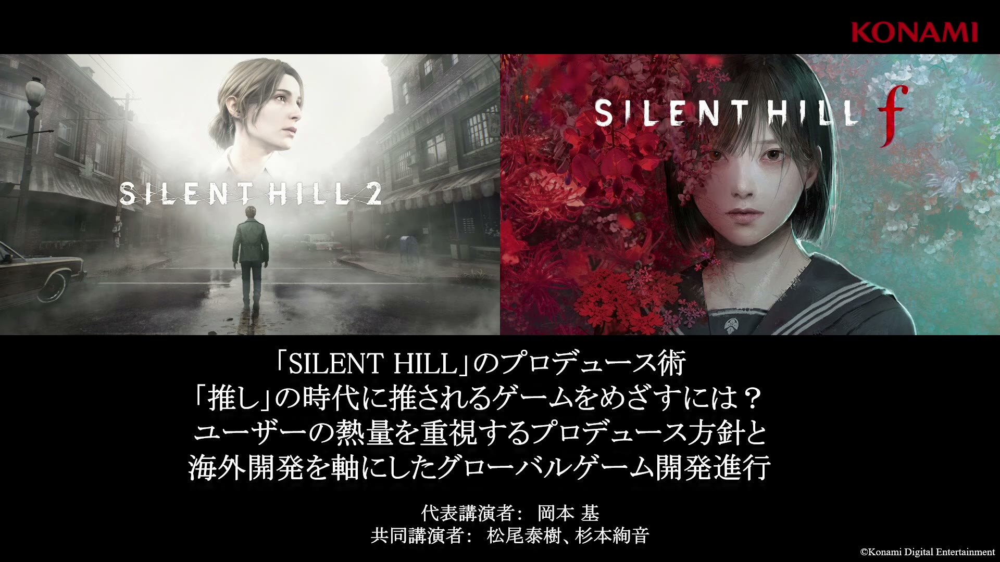
これが一番怖いやつやね
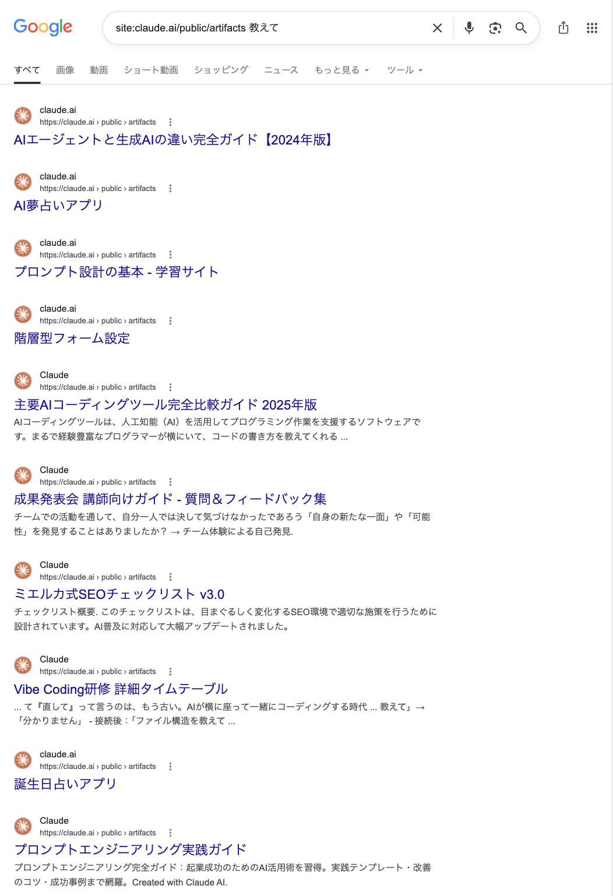

Polymarket Japan
@polymarketjapan
【速報】
Claudeの共有チャットが、Google検索で表示される問題が発覚
公開共有リンクが検索エンジンにインデックスされたことが原因
共有チャット設定の見直しを推奨
やねうら王さんがリポスト
やねうら王のソースコードくらい長い、やねさんの応援コメント。
私が将棋ソフトやAIやディープラーニングのことで悩んでいると、わかりやすく教えてくれたり、詳しい人を紹介してくれた、面倒見のいいやねさん。おかげで何とか『りゅうおうのおしごと！』を完結させられました。恩人です！
やねうら王
@yaneuraou
〇ぬはずだったヒロインが結婚しているので、全巻揃えるために本屋へ走った件
『りゅうおうのおしごと！』の著者である白鳥士郎先生から、私は文庫版の16巻以降を、毎回直筆サイン入りで頂戴している。 x.com/nankagun/statu…
『サクラ大戦』シリーズ30周年記念展が東京・京都で開催決定！『新サクラ大戦』とあわせて描き下ろしイラストも公開
https://
gamespark.jp/article/2026/0
7/28/169845.html?utm_source=twitter&utm_medium=social&utm_content=tweet
…
GMO、浅田真央さん旧ドメイン問題後に表記修正 優良中古ドメインは「AIが選定」
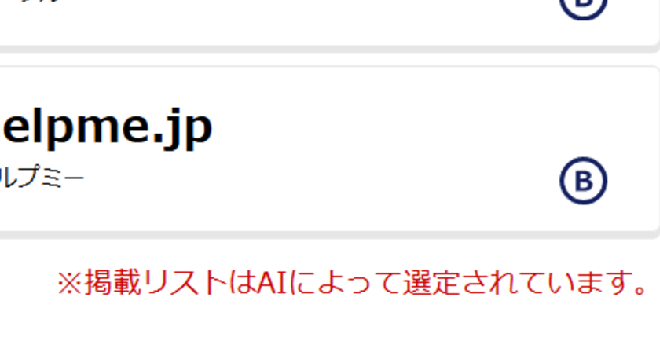
GMO、浅田真央さん旧ドメイン問題後に表記修正 優良中古ドメインは「AIが選定」
中国メモリ、中国DUV、中国AIのKimi-K3で市場が凄いことになってますが、AIの研究面で言えばKimi-K3は本物なので反応は妥当。
半導体周りは、以下の直近のDeepSeek創業者の投資家向け会話（オフレコ流出で問題になっているらしく、恐らく内容は中国の現状を正確に表している）が参考になるかと。
「ヘブンバーンズレッド」はASMR化と舞台化にどのように向き合ったのか。物語重視のIPとメディアミックスの形［CEDEC 2026］
https://
4gamer.net/s/G048777.2607
28015
…
ゲームにおけるメディアミックス企画の立て方やその考え方が語られた
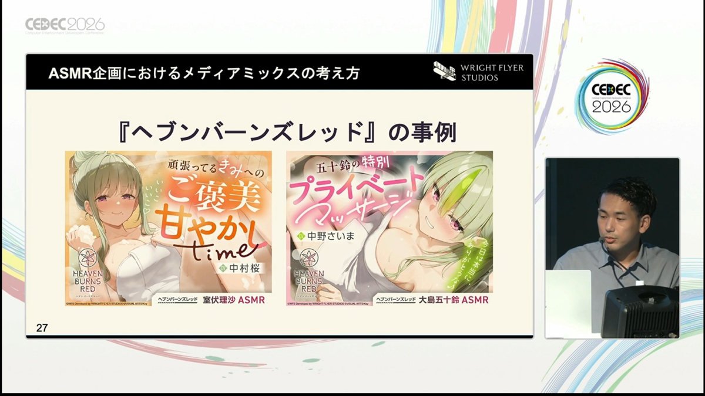
桐谷広人さん 前立腺と大腸にがん
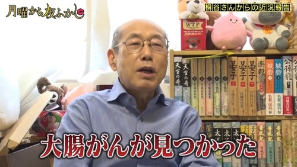
桐谷広人さん 前立腺と大腸にがん : ハムスター速報
どうも脚がおかしい
KDDI、コンテンツのAI検索アプリ提供 報道機関や出版社30社提携
KDDI、コンテンツのAI検索アプリ提供 報道機関や出版社30社提携
こういうDRPGがちょうどいい！？8bitスタイルのクラシカル3DダンジョンRPG『ダンジョン・ノクス・エキゾチカ』Steamストアページが公開
https://
gamespark.jp/article/2026/0
7/28/169844.html?utm_source=twitter&utm_medium=social&utm_content=tweet
…
全世界の「こういうのでいいんだよ」おじさんに届けるべく開発されたという、オートでも遊べるレトロ風ダンジョンRPG。
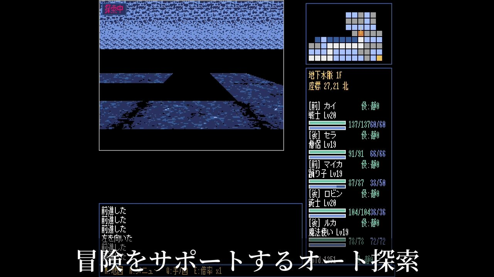
人気セクシー女優・瀬戸環奈さん、コスプレの破壊力がヤバすぎると話題にｗｗｗｗｗ #雑談・その他の話
人気セクシー女優・瀬戸環奈さん、コスプレの破壊力がヤバすぎると話題にｗｗｗｗｗ - オレ的ゲーム速報@刃の記事ページ
jin115.com
『ポケモン』歴代パッケージグッズの一部受注販売、および再販が決定！キーホルダー、Tシャツなどを対象に7月29日12時より順次開始
https://
gamespark.jp/article/2026/0
7/28/169843.html?utm_source=twitter&utm_medium=social&utm_content=tweet
…
リゾート会員権、4年4カ月ぶり高値 株高による資産効果で需要高まる
リゾート会員権、4年4カ月ぶり高値 株高による資産効果で需要高まる
「S.T.A.L.K.E.R. 2」大型拡張コンテンツ「Cost of Hope」，8月20日に配信決定
https://
4gamer.net/s/G012714.2607
28027
…
新たな2つの地域や数十時間におよぶゲームプレイを収録。ストーリートレイラーも公開
2026年秋のサンマ「不漁・小型」に 日本近海への来遊、最少の可能性
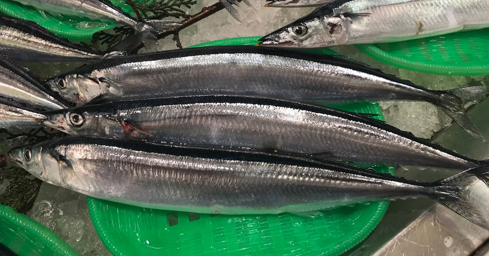
2026年秋のサンマ「不漁・小型」に 日本近海への来遊、最少の可能性
◆スピード解説
キオクシア株が終値もストップ安に。売り注文を残して取引を終えました。6月の最高値から60%安になり、追証も発生しているとみられます。株安の要因と今後のポイントをnoteでスピード解説しました
note
https://
note.com/goto_finance/n
/nd16d1a808956
…

にじさんじライバーのマスコットが夏を満喫するグッズ「りとるさんしゃいん」が7月29日発売
https://
4gamer.net/s/G100451.2607
28029
…
五木左京，ジョー・力一，夢追翔，アルバーン・ノックス，サニー・ブリスコー，フリオドールのマスコットをテーマにしたグッズだ
ちょっと外歩いたら汗まみれで気分爽快すぎる 夏最高 日差し最高 セロトニンドバドバ
カセットテープ、まさかの真正クロームテープが再生産
カセットテープ、まさかの真正クロームテープが再生産 | ギズモード・ジャパン
ワイヤレスイヤホンはこれで十分かも。Acerの最新モデルが驚きの60%オフ BuyPR
ワイヤレスイヤホンはこれで十分かも。Acerの最新モデルが驚きの60%オフ | ギズモード・ジャパン
リバってしまってつらいが、売り全て根性持ち越し
米中政府、互いにAIモデル「蒸留」批判 Kimi K3契機に舌戦過熱

米中政府、互いにAIモデル「蒸留」批判 Kimi K3契機に舌戦過熱
金融サービス「Xマネー」アメリカで開始 預金利回り6%
https://
nikkei.com/article/DGXZQO
UC09BOL0Z00C26A7000000/?n_cid=SNSTW005&n_tw=1785210277
…
貯蓄口座の預金利回りの全米平均は0.4%前後で、Xマネーはその約15倍。
Xの利用者が多い日本でも金融事業参入を狙う可能性がありますが、日本では資金決済法が壁となりそうです。
金融サービス「Xマネー」米で開始、預金利回り6% 利用者保護に懸念
ハンナが相手の時だけ
新「マイナアプリ」8月25日提供開始 “端末ロック”必須に
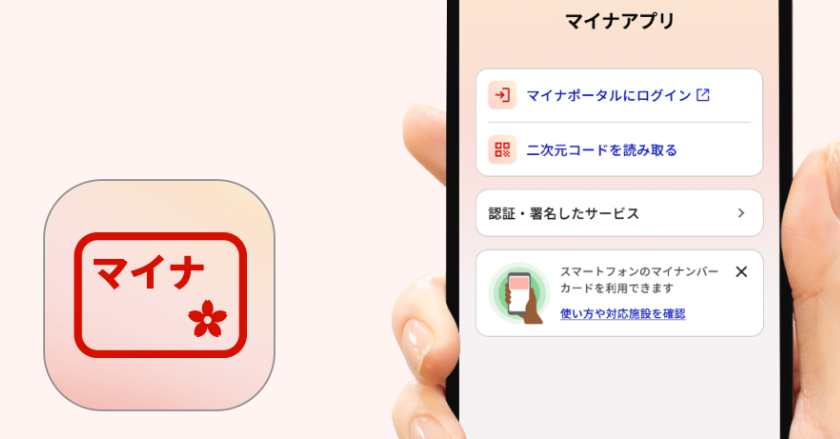
新「マイナアプリ」8月25日提供開始 “端末ロック”必須に
良すぎる
全銀行と金融庁に提案したいんやけど…
さたけさんがリポスト
板東英二さん死去、86歳 中日投手、タレントで活躍
板東英二さん死去 中日投手、タレントで活躍
韓国総合株価指数(KOSPI)、韓国モメチンがバナナを拾っては投げ捨てる今年8回目のサーキットブレーカー発動
KOSPI 今年8回目、通算14回目のサーキットブレーカー発動 pic.twitter.com/LMqTdqhUpT— でぃえち (@dieci_X10) July 28, 2026https://sekai-kabuka.com/さすがに南朝鮮市場ヤバいな。個人ぶっ飛んだんじゃないか。— Inside+Outside→Zone (@zone_investor) July 28, 2026
kabumatome.doorblog.jp
無茶苦茶すぎる。これのために米国アカウント欲しいぐらいや
Polymarket Japan
@polymarketjapan
【速報】X、金融サービス「X マネー」を米国で開始
・預金利回りは最大年6%、カード利用で3%還元
・X内で個人間送金、預金管理、Visaカード決済が可能
・預金保護は複数銀行への分散で最大約16億円
イーロンマスク氏の「スーパーアプリ構想」が本格始動
※現在は米国の一部有料会員が対象
ターン制とリアルタイム制を支える「ポケモン」の共通バトルシステム。「Pokémon LEGENDS Z-A」での運用事例［CEDEC 2026］
https://
4gamer.net/s/G089789.2607
28007
…
CEDEC 2026でゲームフリークが明かした，ポケモンバトルを支える基盤設計をレポートしました
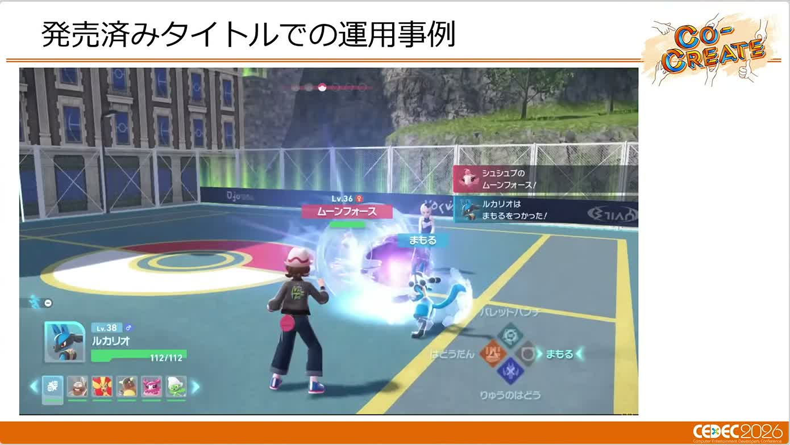
頼れるのは己の腕のみ。狭く暗い洞窟を這い進むホラーADV「The Cave Diver」，8月13日にリリース決定
https://
4gamer.net/s/G091169.2607
28026
…
物理演算を生かしたアクションやギミックを使い，洞窟の奥底を目指そう
〇ぬはずだったヒロインが結婚しているので、全巻揃えるために本屋へ走った件
『りゅうおうのおしごと！』の著者である白鳥士郎先生から、私は文庫版の16巻以降を、毎回直筆サイン入りで頂戴している。
白鳥士郎
@nankagun
板東英二さん死去、86歳 元プロ野球中日投手でタレントでも活躍
板東英二さん死去、86歳 元プロ野球中日投手でタレントでも活躍
罪を犯して死んだ4人の少女が，罪を清めて転生する権利を懸けた試練に挑む。ノベルゲーム「えんぜる・いん・いんふぇるの」発表
https://
4gamer.net/s/G102828.2607
28024
…
少女たちが死に至った理由と罪が明らかになるにつれ，心の闇や狂気もあらわになる
桜庭薫の猫耳ありがとうございます…っ！！
ヒューリック、1〜6月純利益11％増 物件売却益などで過去最高
決算:ヒューリック、1〜6月純利益11％増 物件売却益などで過去最高
まとめです。
1. すぐ試す → Cursor
2. Claude Codeの手触りを残す → Ollama経由のK3
3. ハーネスと推論を自分で選ぶ → OpenCode
ちなみにAGI Cockpitではこの3系統のエージェント全てを使うことができますので、好きなものを使えます:
https://
agi-labo.com/tools/cockpit
3. OpenCode
オープンソースのコーディングエージェントです。
K3 の載せ方は複数あります。
・OpenCode Zen … 公式ホストで即利用
・OpenRouter 経由 … BYOK で moonshotai/kimi-k3
IDE 一体の Cursor に対し、こちらはハーネスと推論を自分で選べます。
OpenCode
@opencode
Kimi K3 now available in OpenCode Zen
【Kimi K3旋風、巻き起こる】
今朝、Claude Fable 5級のAIモデル、Kimi K3のウェイトが公開され、世界に衝撃が走っています。オープンでは世界初のフロンティア級モデルです。
ただし、2.8兆パラメタなので家では動かせません。
どこから動かすのがベストなのか、選択肢を3つまとめました
カカオゲームズ、『ガデテル』KONG STUDIOS新作『ガーディアンメイデン』のグローバルパブリッシング契約を締結―2026年内リリースを目指す
https://
gamespark.jp/article/2026/0
7/28/169842.html?utm_source=twitter&utm_medium=social&utm_content=tweet
…
ポン☆潤々さんがリポスト
【315!!!SHOP】
結果発表
天ヶ瀬冬馬
桜庭薫
信玄誠司
北村想楽
花園百々人
#スーパーウルトラプロデュース大作戦！へのたくさんのご参加誠にありがとうございました。
こちらの描き下ろしイラストを使用した5名のオリジナルグッズなどは秋ごろに展開予定
続報をお楽しみに！
#SideM
ポン☆潤々さんがリポスト
【315!!!SHOP】
⋰
#スーパーウルトラプロデュース大作戦！
選出メンバーを公開
⋱
詳細
https://
bandainamco-am.co.jp/chara_shop/ido
lmaster/extra/
…
#SideM
東宝や東映、米国市場に再挑戦 「ゴジラ」「仮面ライダー」同時展開
東宝や東映、米国市場に再挑戦 「ゴジラ」「仮面ライダー」同時展開
ウォーレン・バフェット、資産の99%超を占めるバークシャー株を2034年までに全て寄付すると表明
ウォーレン・バフェット、資産の99%超を占めるバークシャー株を2034年までに全て寄付すると表明 | ギズモード・ジャパン
金利差相場、そろり再始動 日米会合「言いぶり」歴史的円安を左右
金利差相場、そろり再始動 日米会合「言いぶり」歴史的円安を左右
まーーーかわいい！！
8月上旬に日本に接近する台風13号、ガチのマジでヤバイ…シャレにならんレベル #雑談・その他の話
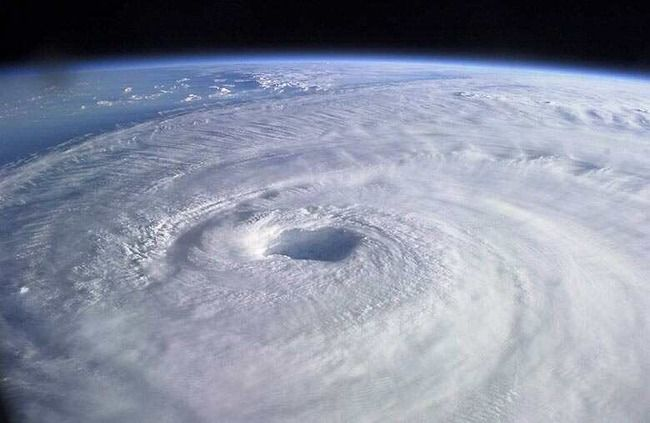
8月上旬に日本に接近する台風13号、ガチのマジでヤバイ…シャレにならんレベル - オレ的ゲーム速報@刃の記事ページ
jin115.com
明治、ザバスなどで9月から実質値上げ プロテイン原料高で
明治、ザバスなどで9月から実質値上げ プロテイン原料高で
【Steam3,400円→1,360円】空版『Raft』な飛行船サバクラ『Forever Skies』大型アプデ！敵対ドローンや難易度カスタムなど追加―XBOX版も登場
https://
gamespark.jp/article/2026/0
7/28/169841.html?utm_source=twitter&utm_medium=social&utm_content=tweet
…
食料・水・エネルギー・酸素の減少率を個別に調整できる難易度のカスタマイズが登場し、遊びやすく。
https://
x.com/flyforeverskie
s/status/2081787813171732646/video/1
…
トウカイのクマさんがリポスト
#メガシャキ × #シャニマス
第3弾開催記念
限定QUOカードPayが100名様に当たる
1.本アカウントをフォロー
2.本投稿を7/29 14:59迄にリポスト
3.当選者にDM
▼キャンペーンも実施中
https://
megashakicp7.com/?utm_source=x&
utm_medium=post&utm_campaign=sm26&utm_term=b&utm_content=house0721
…
※1日1本を目安にお飲みください
AIOと選挙は、歪んだ選挙闘争になるなぁ。政治家は常日頃から、有言実行でいてほしい
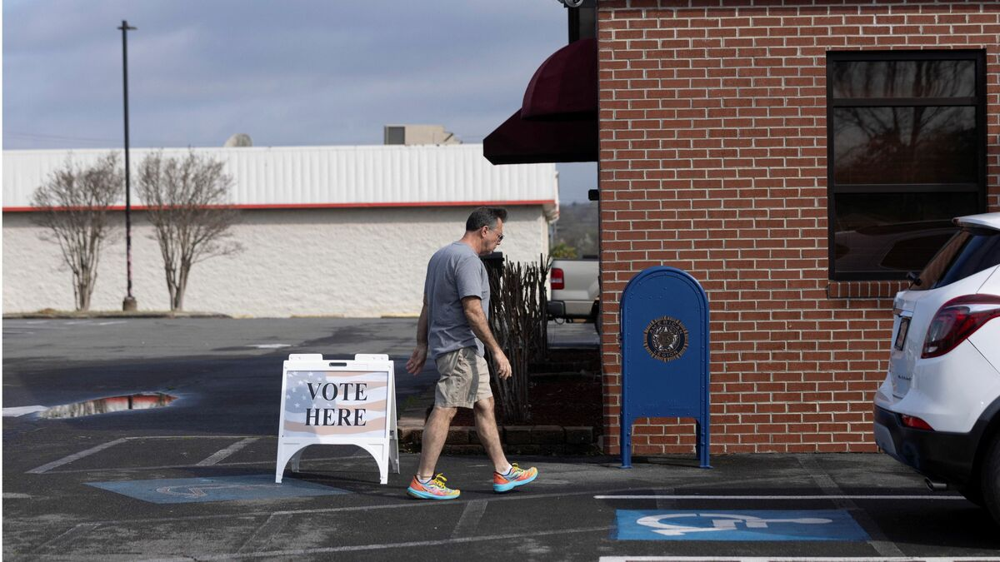
ChatGPTの回答を変えるという選挙戦術、米中間選挙の候補者が競う「AIへの説得」 【生成AI事件簿】米国で広がるAEO、Wikipedia更新12分で候補者評価が書き換わる新たな現実 |...
【日経特報】信金中金、稚内信金に約200億円の資本支援 金利高で債券含み損膨張
信金中金、稚内信金に約200億円の資本支援 金利高で債券含み損膨張
なるせひろのりさんがリポスト
学校でもバリアフリースペースや、車両乗り入れスペースもあるだろうから 階段横に止めてる時点で黒よりのグレーですねw
このウォーターライドの地下には、何かがいる―ストリーマーの動画作品がホラーADVに。実写映像で描く『CALL OF CUTIE』発表
ストリーマーBubblesCutieeさんの動画作品で描かれていた世界をゲーム化。
https://
gamespark.jp/article/2026/0
7/28/169840.html?utm_source=twitter&utm_medium=social&utm_content=tweet
…
【本日19時から】購入ページはこちら
軽い、速い、気持ちいい。世界初のスイッチを装備したゲーミングマウス「Keychron G6 HE UltraLight」 ｜ CoSTORY
キークロンのゲーミングマウス「Keychron G6 HE UltraLight」は今日19時クラファン開始！
同時刻、ライブ配信で実機を紹介します↓↓↓
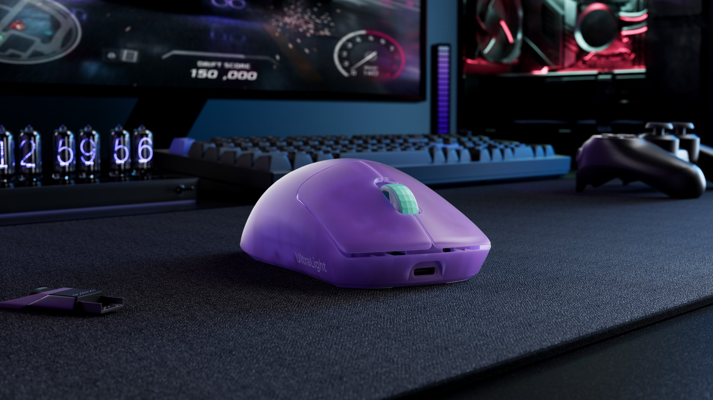
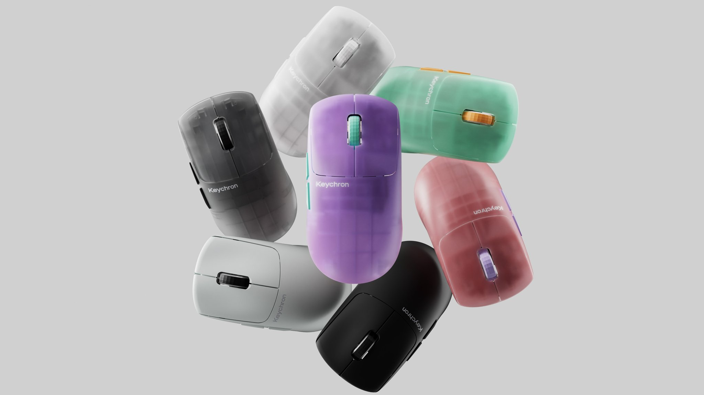
ライブ配信ではYouTubeでデバイス紹介をされているJUNUJさん（
@JuNuJ1010
）がゲスト出演！お楽しみに↓
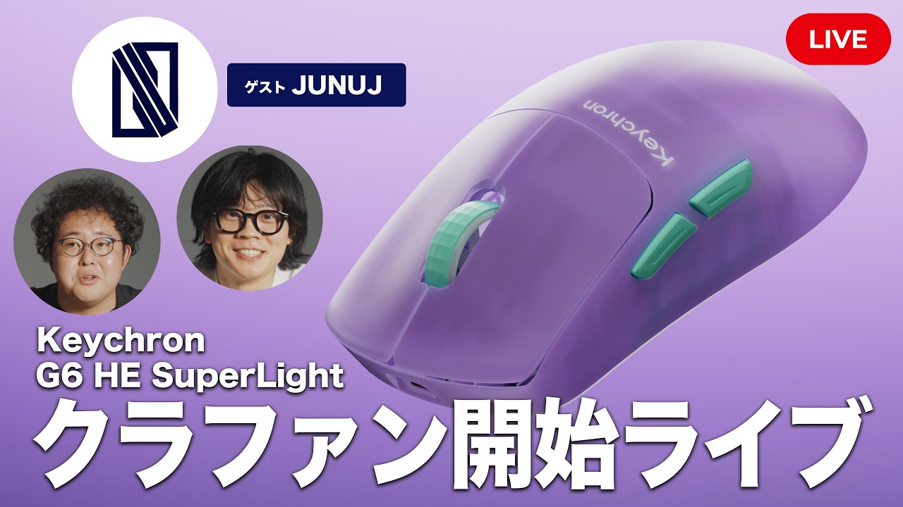
Keychron G6 HE SuperLightは本日19時クラファン開始！↓↓https://costory.jp/cf-pub...
youtube.com
片山財務相、GPIFのオルタナ投資「少ない」
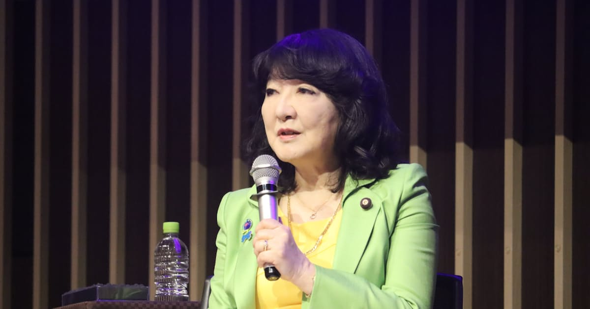
片山財務相、GPIFのオルタナ投資「少ない」
チャッピーとたまにする対談
https://
chatgpt.com/share/6a684065
-64c8-83ee-9e4e-66f9039444eb
…
【京都大学】女子枠の数が多すぎて性転換を検討する男子が増加中 各大学による女性限定支援も話題に
【京都大学】女子枠の数が多すぎて性転換を検討する男子が増加中 各大学による女性限定支援も話題に : ハムスター速報
「運しかない」ゲームは，どうすれば「読めるゲーム」になるのか。日本人初のドイツ年間ゲーム大賞受賞作「ボムバスターズ」の設計過程［CEDEC 2026］
https://
4gamer.net/s/G096432.2607
28022
…
トランプを使ったワークショップ形式で，協力型ゲームの設計思想が語られた。
KAWAII LAB.、アジア5カ国で初オーディション 原宿から世界へ
KAWAII LAB.、アジア5カ国で初オーディション 原宿から世界へ
音楽が禁止された世界を舞台にしたリズムADV「UNBEATABLE」，日本語に対応。初の大型DLCを配信
https://
4gamer.net/s/G057603.2607
28020
…
DLCはボカロPであるJamie Paige氏とのコラボプロジェクトとなっている
すごいのが来る…
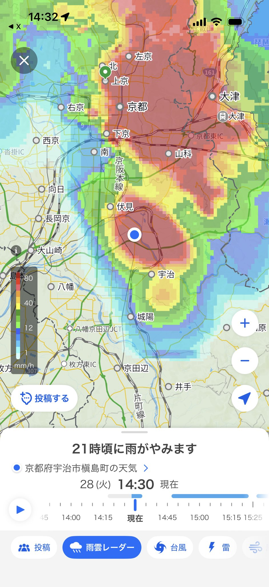
そね、負債がない分、こういう時代なUnrealやUnity競合をゼロから作るのはつよいプレイにもなりうる。
AUTOMATON（オートマトン）
@AUTOMATONJapan
【ニュース】元Unreal Engineのベテラン開発者集結、野心的“新ゲームエンジン”開発中。UE＆Unityに代わる「AIネイティブ」エンジン目指す
https://
automaton-media.com/articles/newsj
p/20260728-456977/
…
アサヒ飲料が日本初の「フェムケア」機能性表示飲料 月経前の疲労感や眠気の軽減を緩和
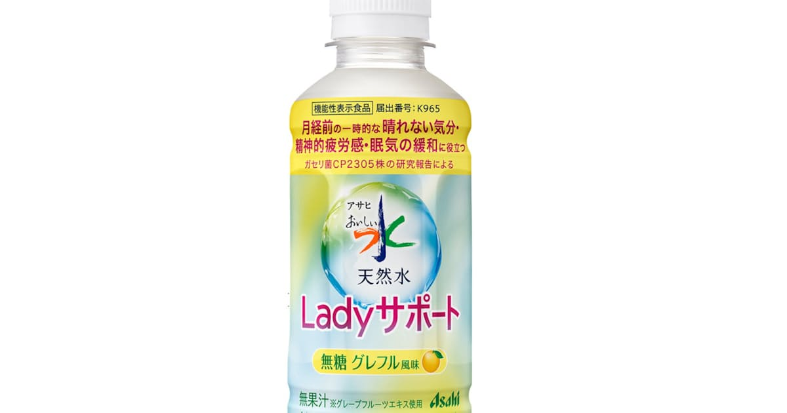
アサヒ飲料、フェムケアの機能性飲料 月経前の症状緩和
新作映画「バイオハザード」はかなり“グロい”作品に？監督が「これまで手掛けてきたなかで最も暴力的」と語る
https://
gamespark.jp/article/2026/0
7/28/169839.html?utm_source=twitter&utm_medium=social&utm_content=tweet
…
アンブレラ社やT-ウィルスがどう機能するかを説明するのではなく、一人の男が徒歩で旅をしながら怪物と戦う物語だとも語っています。
「つみみじかん 狂オシイホド愛シテル」，Steamウィッシュリスト登録数が10万件を突破。8月21日と22日に渋谷でリアルイベントを開催
https://
4gamer.net/s/G099737.2607
28019
…
作品の世界観を楽しめる展示や試遊を予定しており，詳細は後日発表するという
なるせひろのりさんがリポスト
マークだけならどこでも買えるし誰でも貼れるし、私は止まってるだけでは信用してません
悪用して障害者スペースに止めてる糞達もいっぱいいますからw
輿水畏子さんがリポスト
輿水畏子さんがリポスト
フォロワーがこのバブい毛玉みたいなシェリィのぬいぐるみをただでくれたんだけど、窃盗罪で自分から罪を申告しちゃおうかな。
ありがとうございます。。かわいいです。。私のベッドに置いて、ずっとずっと愛してあげます。。ウェルさん愛してる…
웨루
@WheLooloong
シェリ色のかわいい子犬の毛玉、見たい人
フードバンク4団体に初認証、消費者庁 2030年度に寄付倍増へ
フードバンク4団体に初認証、消費者庁 2030年度に寄付倍増へ
60年代後半にコーディングを始めました←強すぎ
Uncle Bob Martin
@unclebobmartin
私はあなたよりずっと年上です。60年代後半にコーディングを始めました。私の現在の戦略は、エージェントが書いたコードを一切読まないことです。それが彼らの生産性を活用できる唯一の方法です。代わりに私がすることは、エージェントを極端な制約で囲むことです。ユニットテスト、gherkinテスト、QA
政府、不法残留の外国人対策で緊急増員 入国警備官ら計226人
政府、不法残留の外国人対策で緊急増員 入国警備官ら計226人
「締切ヒーロー」，8月31日にSteamで早期アクセス配信開始。集中時間が冒険になる生産性ゲーム
https://
4gamer.net/s/G093484.2607
28017
…
仕事や勉強への集中が勇者の冒険を進める。RPGと時間管理ツールを融合した新感覚タイトル
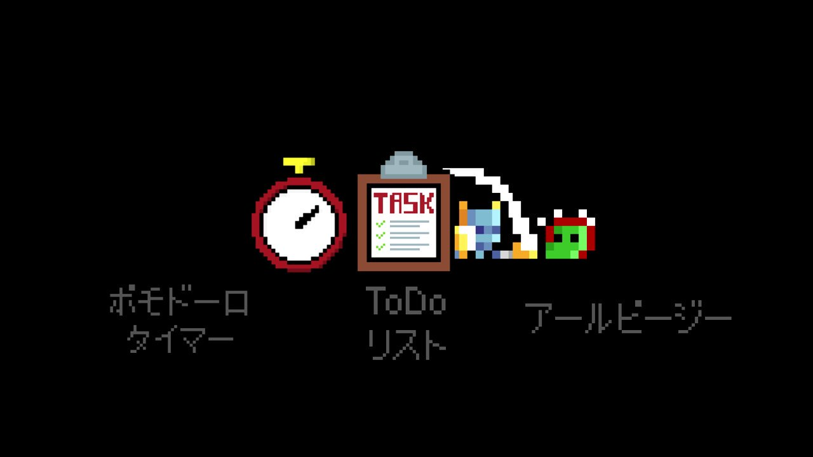
「就活セクハラ」、学生の3割が被害 10月から企業に防止義務
「就活セクハラ」、学生の3割が被害 10月から企業に防止義務
さくらインターネット株価上げに転じる ＧＰＵサーバー関連が好調
さくらインターネット株価上げに転じる GPUサーバー関連が好調
「ブルーアーカイブ -Blue Archive-」のフィギュア「ねんどろいど 空崎ヒナ（ドレス） べーしっく」が12月に発売決定。予約受付を開始
https://
4gamer.net/s/G051983.2607
28016
…
グッドスマイルカンパニーの公式ショップでは，特典として「楽譜＋持ち手パーツ」が付属する
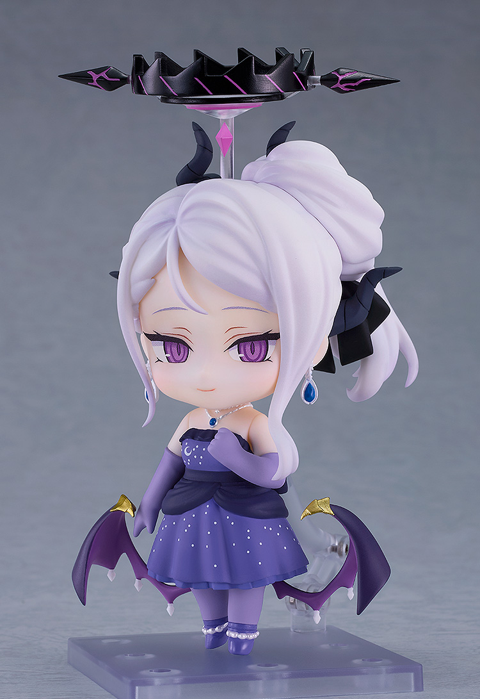
さよララが転載可能なキャプ画を公式で用意してるのって、オタクさんの感想ツイツイ、見たいです…♪って理由も当然あるんだろうけど半分以上は「今期最強作画アニメよぉ〜ん♡皆のTLにも私を貼ってぇ〜ん♡」という露出狂のマインドでやってると思う。こんな良いアニメ作ったら、そんな気持ちにもなる
パナソニック、マレーシアのテレビ製造撤退 自社工場は台湾のみに
パナソニック、マレーシアのテレビ製造撤退 自社工場は台湾のみに
「サポート外」でも「MOD入れたら壊れた」の問い合わせが増えています―Steamで同接2万人突破のオープンワールドARPG『ドラゴンソード:アウェイクニング』開発がMOD非サポートを改めてアナウンス。「まずは安定したプレイ環境の提供に集中したい」
https://
gamespark.jp/article/2026/0
7/28/169838.html?utm_source=twitter&utm_medium=social&utm_content=tweet
…

酷暑はスマホも熱くなる。3COINSの冷却クーラーと冷却ジェルパット
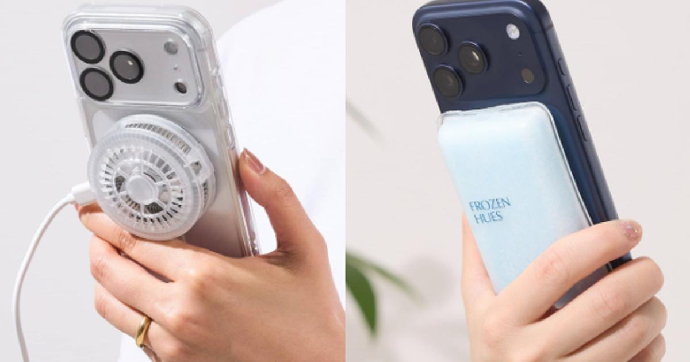
酷暑はスマホも熱くなる。3COINSの冷却クーラーと冷却ジェルパット | ギズモード・ジャパン
JALさんは食事後にトイレ行くと、少しお待ちくださいと言って、トイレを簡単に清掃してくれる
この前ANAのビジネスに久しぶりに乗ったけど、やっぱりサービス面ではJALのビジネスに劣る。ミールを事前予約してたのに、行きも帰りも聞いてくる有様で、ラバトリーチェックも全然ダメ。
Pixel Watch 5はチップ据え置きでメモリUP。マイナーアプデで値上げ？
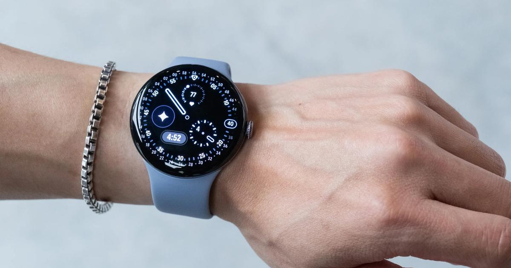
Pixel Watch 5はチップ据え置きでメモリUP。マイナーアプデで値上げ？ | ギズモード・ジャパン
あまりに使いすぎて忘れかけていたけれどそういえば原点回帰な事に今気付いた
制作会社やスタッフがまだ発表されてないけど、ますば信じてみる

アニメ『みいちゃんと山田さん』【公式】
@miichan__anime
『みいちゃんと山田さん』アニメ化に関して
PS5版『GTA6』日本向けパッケージ版のコードは発売170日後に失効するので注意―期限付きになっている理由とは
https://
gamespark.jp/article/2026/0
7/28/169837.html?utm_source=twitter&utm_medium=social&utm_content=tweet
…
ChatGPT「本業以外の指示」43%、専門外タスクにも活用 OpenAI調査
ChatGPT「本業以外の指示」43%、専門外タスクにも活用 OpenAI調査
何のためにLGBT理解増進法作ったと思ってんだ？
法律名と第2条に「性的指向」が定義されて、それは「性別」であるとされてしまった
「性的指向」は性的嗜好や性癖とは違うんだよと法律で定義させてしまった
今からでもこんなバカな法律廃止しよう
筋肉弁護士
@kinnikuben
アホ相手に何でも教えてあげよう。
ペドと同性愛の違いは、「同意」の有無。
幼児性愛が非難されるのは、子どもに同意能力がないから。 x.com/valentine_hoso…
航空会社都合の場合もあるよ。乗せてるんだから。
なるせひろのりさんがリポスト
最終話の作画作業がもうすぐ終わります.ᐟ
この子達を描くのもあとちょっとで、少し寂しい。
2025年放出の備蓄米を買い戻しへ 農水省、新米価格の大幅下落を抑制
2025年放出の備蓄米を買い戻しへ 農水省、新米価格の大幅下落を抑制
とある航空会社の現役CAさんが、「一番態度が悪いのはビジネスクラスの乗客。勘違いしてる。」と言ってたなあ。
板東英二、嘘だよな…？
せめてシステム利用料分だけキャンセル料として徴収するならまだしも返金不可は無謀登山誘発するだろ
放っておけば勝てた戦争にわざわざ口挟んで勝てなくして血を流し続けるの
相当閣下というより鳩山由紀夫
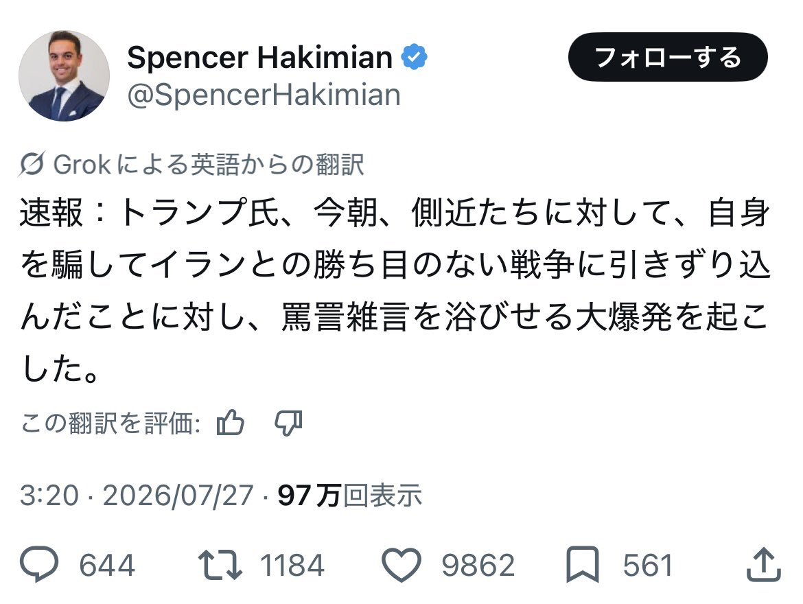
マライ・メントライン＠職業はドイツ人
@marei_de_pon
凄いな。総統閣下シリーズのリアル版じゃないかコレは。
事前準備のある山小屋とかならまだしも入山予約の事前決済が天候に関わらずキャンセル時返金不可はよろしくなさすぎるだろ
【訃報】板東英二さん、慢性心不全のため死去 #芸能・スポーツ
【訃報】板東英二さん、慢性心不全のため死去 - オレ的ゲーム速報@刃の記事ページ
jin115.com
1-2から同点に追いつくこのシュート
本当に痺れた。
サッカーキング
@SoccerKingJP
爪痕
W杯最優秀ゴールはカーボベルデの大健闘を象徴する一撃に！…現地観戦の母が気絶するほどのゴラッソ
https://
soccer-king.jp/news/world/wc/
20260728/2187695.html
…
編集部より
「カーボベルデ代表DFカブラルがR32のアルゼンチン戦で決めた衝撃ゴラッソが北中米W杯の最優秀ゴールに。前田大然は受賞を逃しました」
口座に勝手に配当金が入ってきて、それが自動的に積立のお金になってるよw
イッチ@5000万→1億目指す
@Killer_Index
資産5000万まで来ると積立が焼け石に水のように感じてやるせない。
1日で50万とか100万円減ったり増えたりする日が普通にある。頑張って働いて積立したお金が一瞬で吹き飛んだり、逆に一瞬で増えたりする。
なんなんだこれは。
Steamで無料配信中のアンドロイド修理ゲーム「D1AL-ogue」の次回作「D1AL-ogue+」，前作から6か月後の物語を描く
https://
4gamer.net/s/G098978.2607
28014
…
キャラクターごとの個別ストーリーは追加作業が完了間近。新たなキャラクターも制作中

太ももが眩しいライザのグッズも！ コーエーテクモ「コミケ108」出展情報公開ー「アトリエ」シリーズ、『真・三國無双ORIGNS』などのグッズが販売
https://
gamespark.jp/article/2026/0
7/28/169836.html?utm_source=twitter&utm_medium=social&utm_content=tweet
…
ダークファンタジー世界が舞台のシミュレーションRPG「薄暮遠征軍」，早期アクセス版をSteamでリリース。仲間を集め，魔物たちに立ち向かおう
https://
4gamer.net/s/G090911.2607
28011
…
オリジナルサウンドトラックの制作には，作曲家の谷岡久美氏が参加している
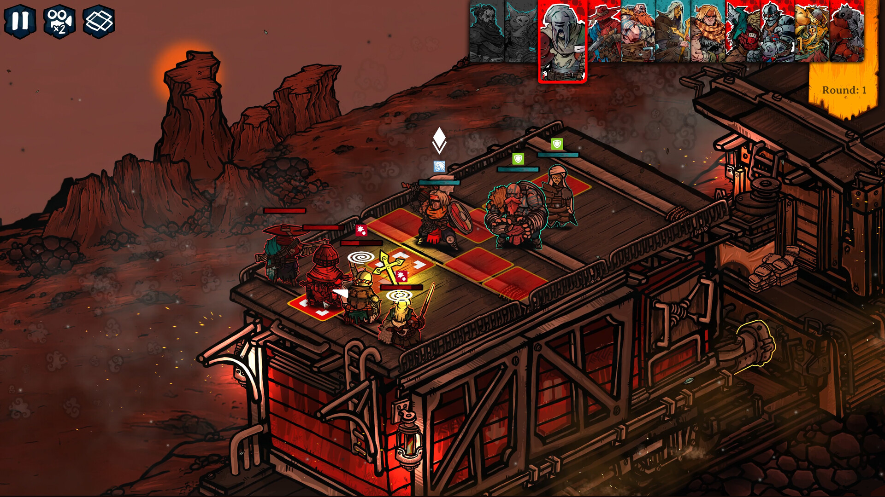
9関節トランスフォーム構造「LED DESK LAMP」。理想のデスクライティングを自分でつくる BuyPR
9関節トランスフォーム構造「LED DESK LAMP」。理想のデスクライティングを自分でつくる | ギズモード・ジャパン
シリコンカーボンバッテリー採用のGalaxy Z Fold8。バッテリー寿命が気になるけど他のスマホと変わらない
シリコンカーボンバッテリー採用のGalaxy Z Fold8。バッテリー寿命が気になるけど他のスマホと変わらない | ギズモード・ジャパン
Torishima / INTPさんがリポスト
Codexリセット！！？！？！！！？
誰か31日までに枯渇させる方法教えてくれw
リセット権がまた行き場失うwwww
軽でTPMS搭載したのってコレが初なのでは？こういうところは国際基準ベースで設計されている強みだな。
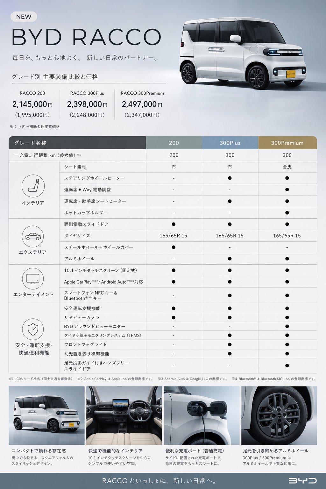
hikal 𝕏
@hikalz
BYD RACCOの価格が判明したので、主要装備と照らし合わせて見ると…
こんなの300Premium一択な気がする
200はスマホがキーにならないし…
300Premiumは…
◎パワーシート
◎ホットカップホルダー(←スゴい)
◎ハンズフリースライドドア
「サクラ大戦30周年記念展 〜夢はよみがえる〜」東京・京都で開催決定。貴重な資料の展示に加えてグッズ販売も予定
https://
4gamer.net/s/G999110.2607
28013
…
開催日程は，東京が2026年10月31日から11月15日まで，京都が2026年12月4日から2027年1月4日までだ
自称でOK
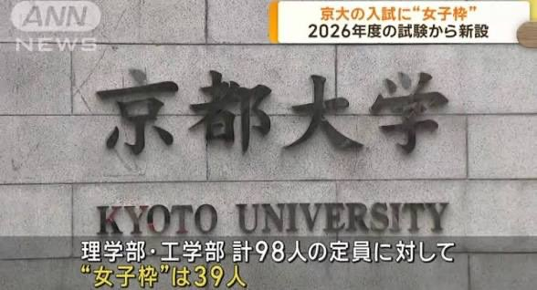
つやみー
@tsuyami0722
せ、性転換しよかな…
なんかガチのパータリンが増えてる気がする
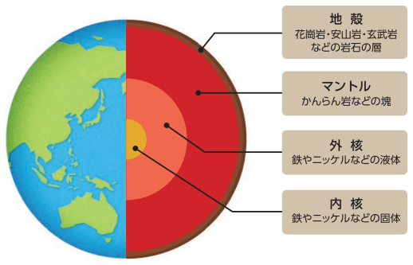
ふぇー@道
@festiva1202
私が地球の内部の外核・内核の話をポストしたら、日本の核武装反対、お前は核戦争を望むキチガイ！とだらだら長く激怒してきた人がいた。
いや地球の外核・内核は内部構造の名前であって核兵器じゃないのに。（いわゆる外部コア・内部コアの話）
無知な人はもう話にならんなと呆れた。
なるせひろのりさんがリポスト
武漢ウイルスの蔓延初期、中国からの渡航を直ちに止めなかったことが、その後の災禍を招いた。
厚労省は渡航禁止、入国禁止のタイミングを探り、日本を守る使命を果たして下さい。
肛門科女医 みのり先生
@koumonka_doctor
エボラの死者がわずか6日間で約200人増加。そしてワクチン治験中。またコロナの時のように全世界の人々にワクチン接種を･･･という流れになるのか？こんな状況でアフリカから移民を入れている場合じゃないだろ。移民が持ち込む感染症を軽視してはならない。
https://
ameblo.jp/drminori/entry
-12973661330.html
…
なぜこの組み合わせになった！？！？がはじまります。あと2分ぐらい
有隣堂YouTubeの「ブッコロー」が生登壇 深津貴之氏と語るAI時代のMC
冬コミ原稿追加2Pアップ
湘南ペンギンさんがリポスト
英二、嘘だよな…
なるせひろのりさんがリポスト
【板東英二さん死去 86歳】
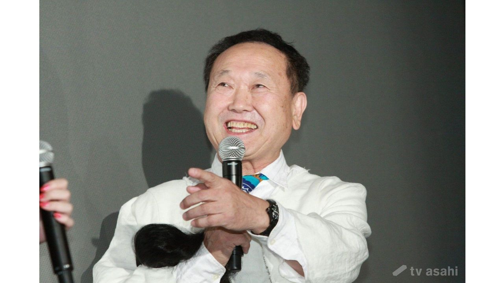
板東英二さん死去 86歳 - Yahoo!ニュース
ポン☆潤々さんがリポスト
!!!!!!!!!!!!!!!!!!!!!!!!!!!!!!!!!!!!!!!!!!!!!!!!!
2026年7月28日㊋
315!!!SHOP周年
!!!!!!!!!!!!!!!!!!!!!!!!!!!!!!!!!!!!!!!!!!!!!!!!!
本日周年を迎えました
全ての315な皆さまと、315プロダクションのアイドルたちに心より感謝を申し上げます。
#SideM
#315SHOP5周年
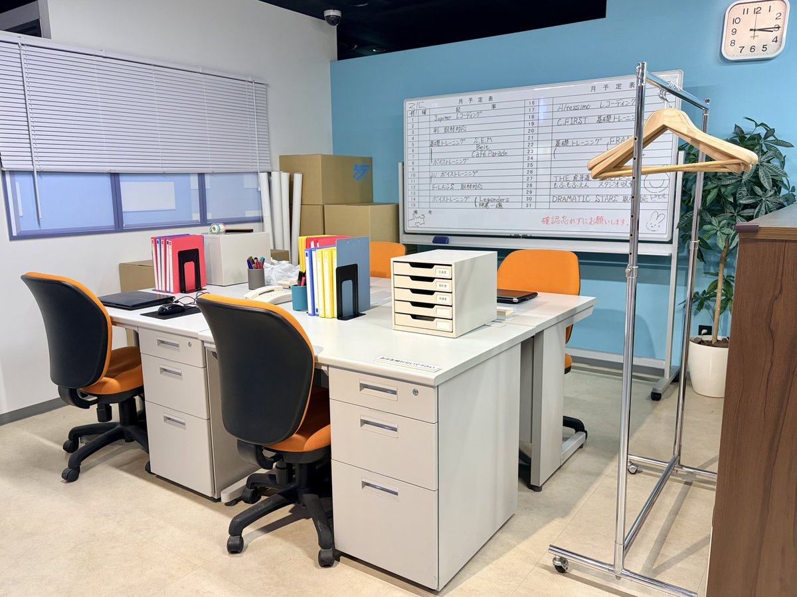
日本経済新聞 電子版（日経電子版）さんがリポスト
「マイナアプリ」デジタル庁が8月リリース 本人確認と手続き一括で
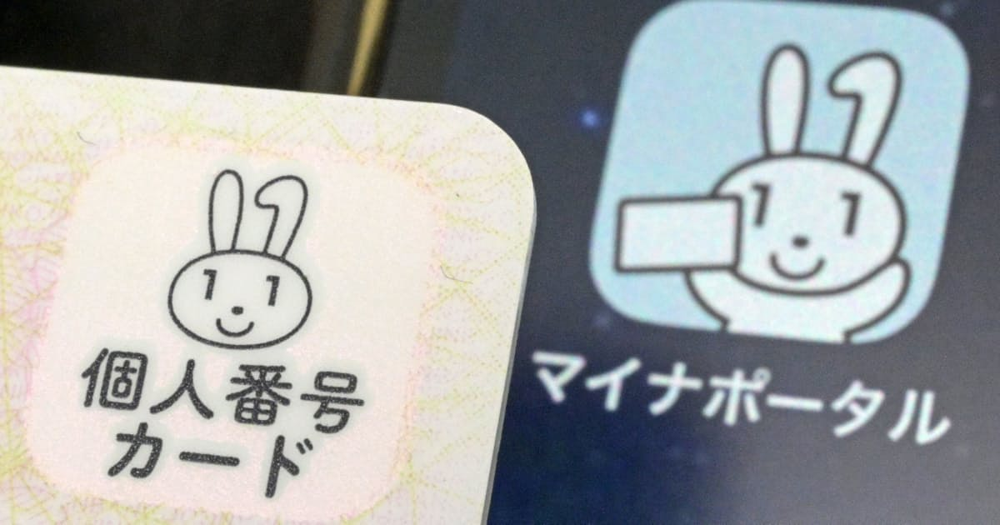
「マイナアプリ」デジタル庁が8月リリース 本人確認と手続き一括で
Cyanが「Myst」世界の幻の新作プロトタイプ「Project Anglerfish」の映像を特別公開。「Myst」「Riven」リメイク版のパッケージ発売も決定
https://
4gamer.net/s/G999901.2607
28012
…
未公開だった企画映像をファンイベントで披露。2027年には創立40周年イベントも開催へ
なんか Fable 死ぬほど遅い…遅くない？？？
みいちゃんと山田さんのアニメ化に発狂した人達 抗議署名活動を開始し金稼ぎを始める 正社員雇用の娘がみいちゃん扱いされて４日目で解雇されるフェミニストも
みいちゃんと山田さんのアニメ化に発狂した人達 抗議署名活動を開始し金稼ぎを始める 正社員雇用の娘がみいちゃん扱いされて４日目で解雇されるフェミニストも : ハムスター速報
薬局の1包化の包み部分がフィルムから紙に変わったり、ビタミン剤のボトルの中に入ってる乾燥剤かなんかもプラスチックの枠に入ってたのが紙の袋に変わったりしてるのはナフサ不足対策なのかな
湘南ペンギンさんがリポスト
【速報】元プロ野球選手でタレントの板東英二さん(86)が慢性心不全のため死去

世界各地の速報ニュースをリアルタイムでお届け。テレ朝NEWSでは政治・経済・社会・国際からスポーツ・エンタメまで、わかりやすい解説とともに最新ニュースをお届け。速報やライブ配信も今すぐチェック。
news.tv-asahi.co.jp
大塚HD純利益24％増に上方修正 1〜6月、腎臓病薬など好調
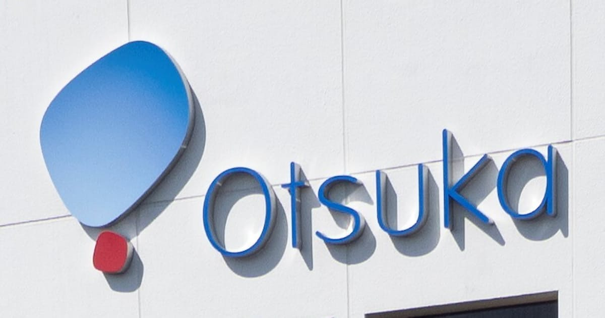
決算:大塚HD純利益24％増に上方修正 1〜6月、腎臓病薬など好調
スタイリッシュ爽快・魔法少女（物理）ACT『Mahou Arms』Steamにて正式リリース！日本語にも後日対応
https://
gamespark.jp/article/2026/0
7/28/169835.html?utm_source=twitter&utm_medium=social&utm_content=tweet
…
格闘と斧と銃でスタイリッシュに戦う物理系魔法少女・アメリア降臨。
料理研究家リュウジさん、グルメ系インフルエンサーの闇に触れる #雑談・その他の話
料理研究家リュウジさん、グルメ系インフルエンサーの闇に触れる - オレ的ゲーム速報@刃の記事ページ
jin115.com
妊活アプリの無償提供、妊娠届出数にプラスの効果 慶応大学分析
https://
nikkei.com/article/DGXZQO
CC293TV0Z20C26A6000000/?n_cid=SNSTW005&n_tw=1785119052
…
生理周期や排卵日を予測・管理する「ルナルナ」の利用を促した地域で、妊娠届出数が押し上げられました。
排卵期に合わせた「タイミング」など妊娠に関する知識を補った可能性があります。
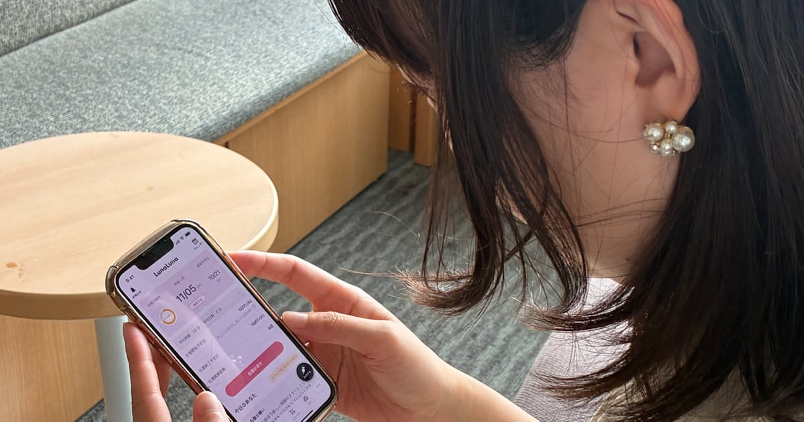
妊活アプリ「ルナルナ」の無償提供、妊娠届出数にプラスの効果 慶應義塾大学分析
内閣支持率低下、金利上昇要因に 内閣改造・閣僚交代の思惑も
内閣支持率低下、金利上昇要因に 内閣改造・閣僚交代の思惑も
Galaxy S26 Ultraのみに搭載された「プライバシーディスプレイ」機能が、さらに便利になりそう
Galaxy S26 Ultraのみに搭載された「プライバシーディスプレイ」機能が、さらに便利になりそう | ギズモード・ジャパン
なるせひろのりさんがリポスト
肘掛け肘掛けうるさいから写真撮ってみたら確かに下がらなかった
言われるまで気がつきませんでした！
1000万の車なのに下がらなくてすまんな
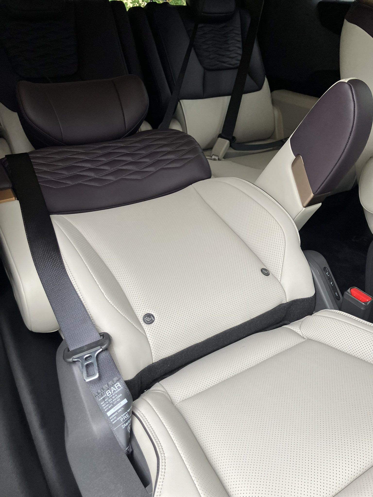
「仁王3」のDLC第1弾「慶安地獄変」，8月19日にリリース。地獄と化したフィールド「江戸・慶安」が新登場
https://
4gamer.net/s/G091630.2607
28009
…
攻防一体の戦いを楽しめる武器種「鉾盾」「忍鉾盾」や，隻眼の剣豪「柳生十兵衛」をはじめとした新たな敵も追加される

Xのポストって、テレビなんかを見ながらいいかげんなことを言って楽しむみたいな調子でポストしたら大注目を浴びてしまうみたいな事故が起きやすいのは構造的な問題ではあるよな...
問題のポストをどうこうしたいというより、一般化した問題としてメモ
何か問題があることを指摘するときに、(書いた人の価値観において)正解が存在する問題であれば、その正解をちゃんとつけてくれないと、たまたま目に入っただけの特に専門的にやってるわけでもない人を当惑させ、調べようとしても大変だったりして読者の時間を奪うな...(なんか見た)
太平洋高気圧くん頑張って
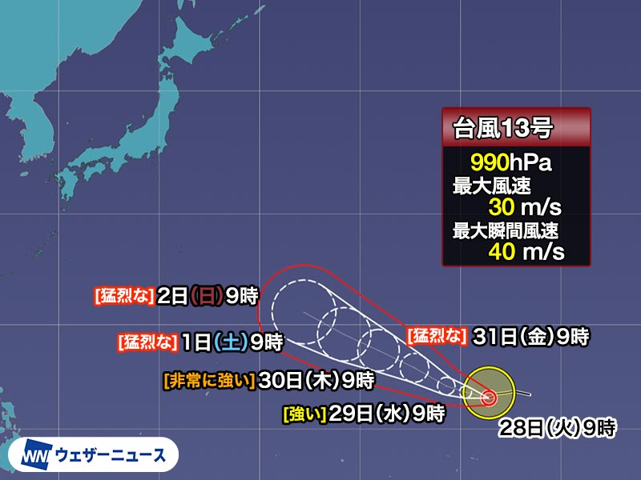
ウェザーニュース
@wni_jp
【台風情報】
7月28日(火)9時現在、台風13号(ドルフィン)はマーシャル諸島を西南西に進んでいます。台風は急速に発達し、31日(金)にはウェーク島近海で猛烈な勢力となる予想です。
まだ日本から遠いものの、8月上旬に国内に影響がでる可能性が否定できません。
https://
weathernews.jp/news/202607/28
0101/
…
「天穂のサクナヒメ〜ヒヌカ巡霊譚〜」，サービス終了後にシナリオを公開。序章から第五章が見られる
https://
4gamer.net/s/G093312.2607
28010
…
なお，最終章は9月30日に公開予定だ
お昼は松屋のしょうが焼き定食をいただきます
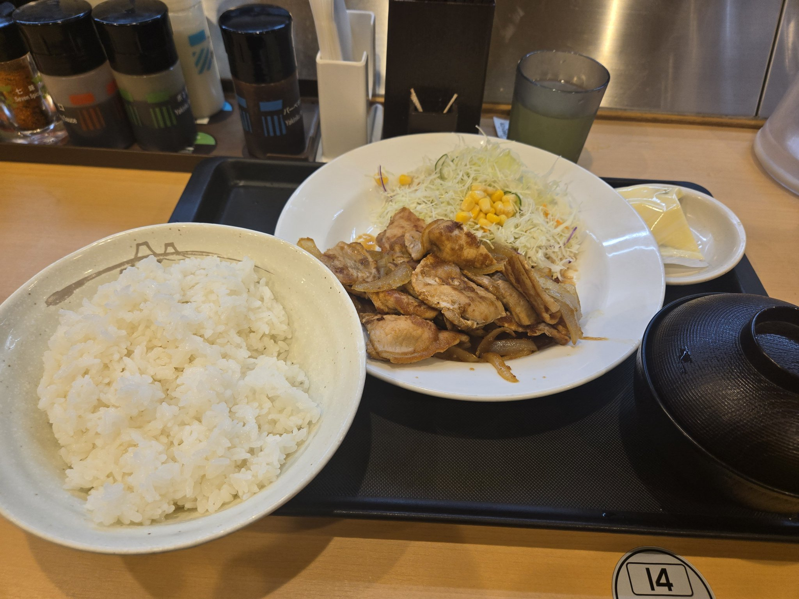
9月に能登行くか…
マジで、内浦の花火大会来るオタクで30センチサイズの海魚捌ける方居たら声掛けて…悪いようにはしないから……
由羽@レモンアイコンの人
@you_GR
お客座の中におっきい魚捌ける人いらっしゃいませんか〜！？
１人乗り超小型EVを法人販売 豊田通商、愛知の新興リーンと提携
1人乗り超小型EVを法人販売 豊田通商、愛知の新興リーンと提携
ITmedia NEWSさんがリポスト
AnthropicのCEO、オープンなAIモデルに対する見解を明示 NVIDIAなど“共同声明”との違いは？
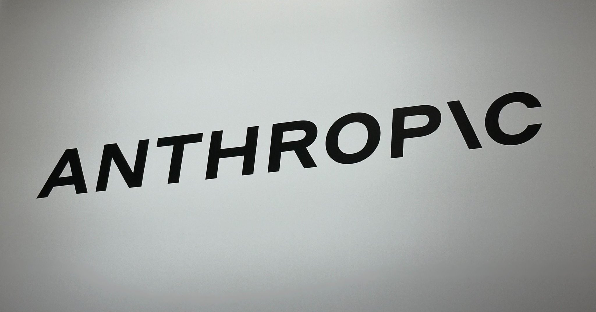
AnthropicのCEO、オープンなAIモデルに対する見解を明示 NVIDIAなど“共同声明”との違いは？
高市首相、消費税減税「決断する」 自民・麻生副総裁らと会談
高市首相、消費税減税「決断する」 自民・麻生副総裁らと会談
輿水畏子さんがリポスト
シェリハン
なるせひろのりさんがリポスト
告訴すると警察が本気で捜査し、事案の真相を解明してしまう。メチャクチャ望ましい展開。
ラーログ/ラーメンマニア【博多のススリスト】
@ramen_mania1998
これを開き直りというのか。
それとも絶対的な自信を持っているのか。
中尾元副議長
「事実無根ですから」
「感謝の言葉はなかったですか？私に」
ニヤニヤしながら話してるよ。
そして
「これから法廷で戦っていきます」
これは果たして
オオトカゲのしっぽ切りなのか。 x.com/ramen_mania199…
輿水畏子さんがリポスト

Xがエラーして何も読み込めません
#NewXAndroidFeedback
昨日は、池袋へも行きました。
#サマポケ
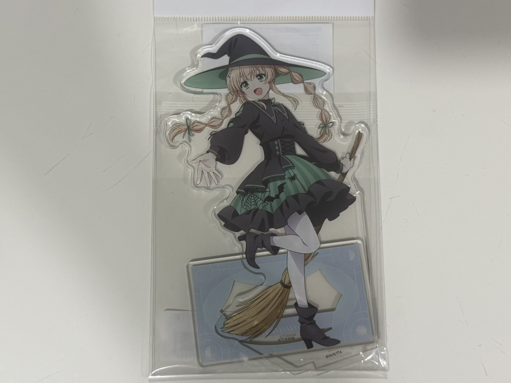
アニメ教養アニメですよ
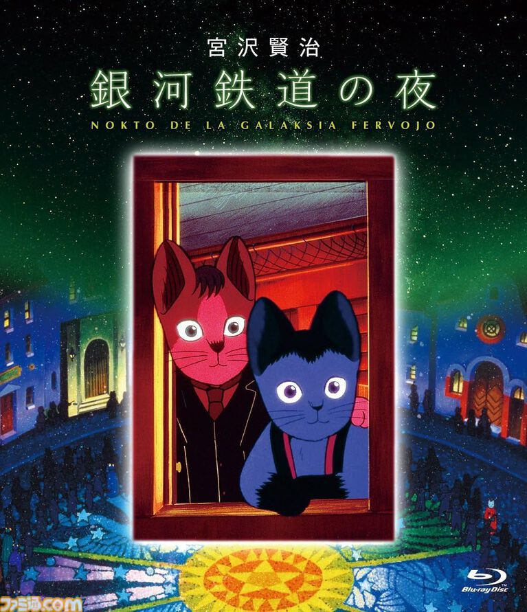
ファミ通.com
@famitsu
アニメ映画『銀河鉄道の夜』8月11日9時よりNHK Eテレで再放送
https://
famitsu.com/article/202607
/82590
…
原案は、宮沢賢治作品の登場人物を“猫”として描いたますむらひろしの漫画。少年ジョバンニと親友カムパネルラ、ふたりの銀河の旅を描く名作。
290円のラーメン→「このご時世にありえない」と思いつつ、頼んだら…… 衝撃の1杯に「神ですね」「毎日行きます」 | ライフスタイル ねとらぼ
通える人がうらやましい
290円のラーメン→「このご時世にありえない」と思いつつ、頼んだら…… 衝撃の1杯に「神ですね」「毎日行きます」
（記事URLはリプから）
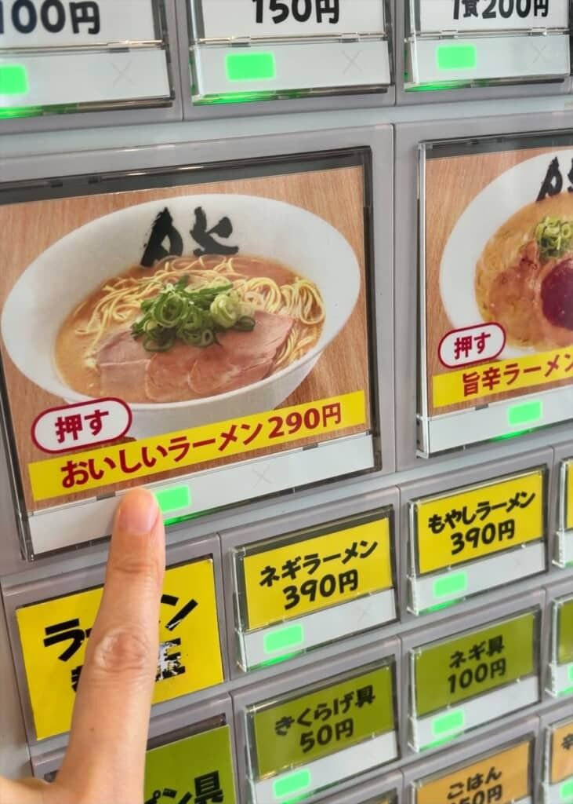
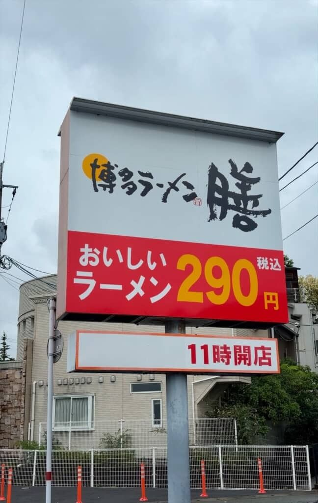
【聖地巡礼？】anemoi / key in 音更町 編
https://
youtu.be/x37Vp7k3vQQ?si
=UoPzD9ZNzf-yvel6
…
@YouTube
より
anemoi / key 音更町の十勝牧場 白樺並木です。淡雪ちゃん√の背景と思われます。2026年6月27日撮影#ane...
youtube.com
なるせひろのりさんがリポスト
外務省「事なかれ派」と「自民党リベラル」は、日本を内側から壊すがん細胞です。
小泉大臣も去年、「自民党リベラル」に担がれて総裁になりかかった。その際は「石破路線を継承する」と最悪の宣言。
もう1人、「石破路線を継承する」とした林君は、「超親中」の角を隠して次を狙う。やば過ぎる。
もえるあじあ ･∀･
@moeruasia01
時事通信「核政策や中国の動きに踏み込んだ発言を続ける小泉防衛大臣に、自民党内などから懸念する声」
「懸念する声」がこれ ↓
中国外務省「現職の防衛当局の責任者がこのような発言を行うことは日本の戦後史上、極めて異例で挑発的」
喜怒哀楽万国共通ってリリースがコロナ禍で、当然初歌唱もコロナ禍の客席声出し禁止期だったのでコール出来ず、客が初めてコールした時に歌っているのはBeitだったっていう数奇な運命を辿っている曲なんですよな。
デッキ構築型ローグライト「Slot & Dungeons」，Steamで正式リリース。新プレイアブルキャラクター「罪人」と新ダンジョン「宇宙」を追加
https://
4gamer.net/s/G084410.2607
28005
…
ダンジョン内の敵やアイテムの配置がスロットで決まる
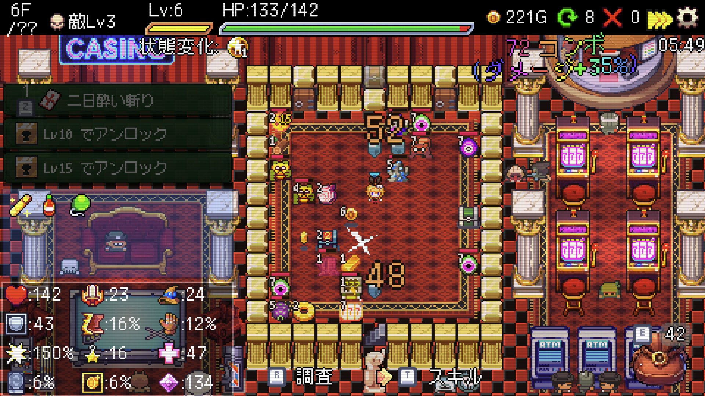
ブロック崩しの「Breakout」や卓球の「Pong」など，ATARIのレトロゲーム10作品の映画化契約を締結
https://
4gamer.net/s/G999102.2607
28008
…
1970〜1980年代を代表する名作が対象。ユニバーサル・ピクチャーズが映像化プロジェクトを始動
旅行用スペックだから気軽に「一応持って行く」ができる、モンベルの折りたたみ傘
旅行用スペックだから気軽に「一応持って行く」ができる、モンベルの折りたたみ傘 | ギズモード・ジャパン
【本編36%オフ】『仁王3』DLC第1弾「慶安地獄変」8月19日配信。柳生十兵衛なども登場の混沌極まる未来の江戸を舞台に、竹千代が新たな陰謀に立ち向かう！
https://
gamespark.jp/article/2026/0
7/28/169834.html?utm_source=twitter&utm_medium=social&utm_content=tweet
…
竹千代が、自身の亡き後である未来の江戸（1651年）に訪れるDLC第1弾。柳生宗矩の子孫・柳生十兵衛なども登場します。
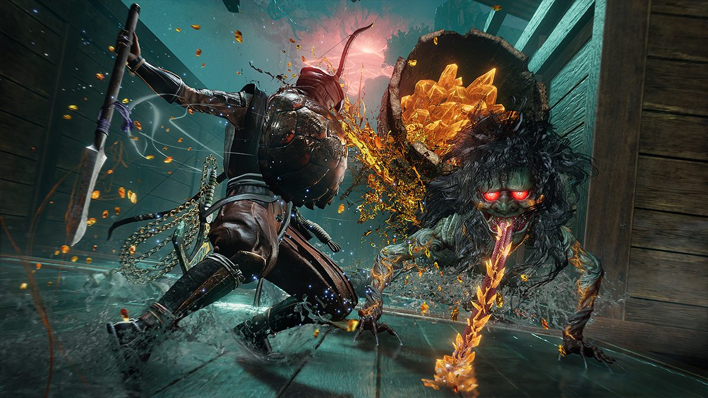
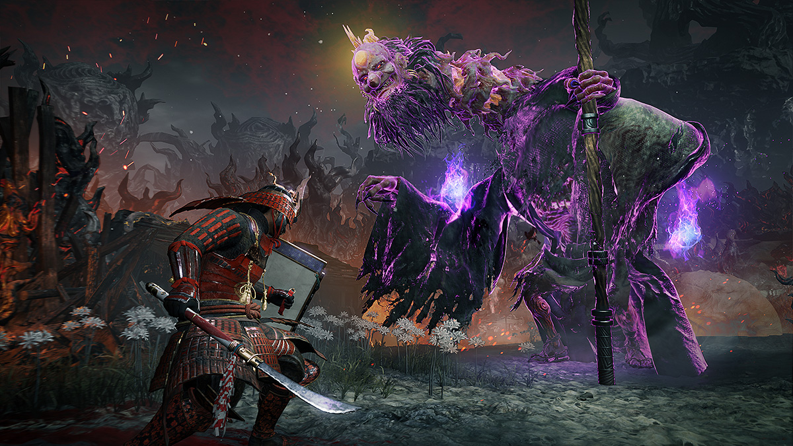
数日間アニメ見てないから変な言及を何個もする羽目になってんですよ
元々たかくなりすぎてたんか…？
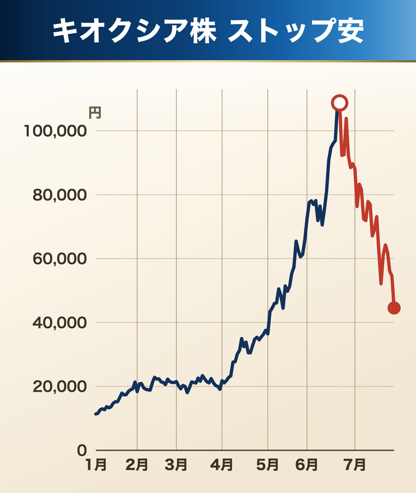
後藤達也
@goto_finance
【速報】キオクシア ストップ安
一時、ストップ安（制限値幅の下限）となる前日比10000円安（18%）安の44,550円をつけました。AI投資の持続性への懸念が出るなか、信用買いをしていた投資家などからの売りが連鎖的に強まっている模様です x.com/goto_finance/s…
あーあ
今回も我慢できなかった、、、
控えめに言って金が増え過ぎる
アルファ米500円、入れるミネラルウォーターは500円。バカ。
バカみたいな円安なので海外旅行にアルファ米はもはや必須ですよ
Torishima / INTPさんがリポスト
ラップトップに戻りました。CodexとChatGPT Workの全有料ユーザー向けに使用制限がリセットされました。うわぁー。いい日だ！
Tibo
@thsottiaux
今日は、chatGPT Workの急速な採用と、それに注がれた素晴らしい努力を祝っています。リセットされたような気分です。
あなたのultraと/fastをしっかりつかんで、数時間後にラップトップに戻ったときにまたお会いしましょう！
「プロジェクトセカイ」の日常を描いた
4コママンガを公開
第371話「脱線回避」
#プロセカ #セカイの4コマ
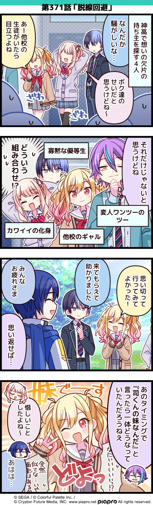
さすがに200万は切らなかったか。
補助金入れればギリか？
Car Watch
@car_watch
BYD、軽EV「ラッコ」の価格は214万円5000円から スーパートール車形に両側電動スライドドアを採用した日本専用モデル
https://
car.watch.impress.co.jp/docs/news/2128
282.html
… #BYD #ラッコ
なるせひろのりさんがリポスト
信号
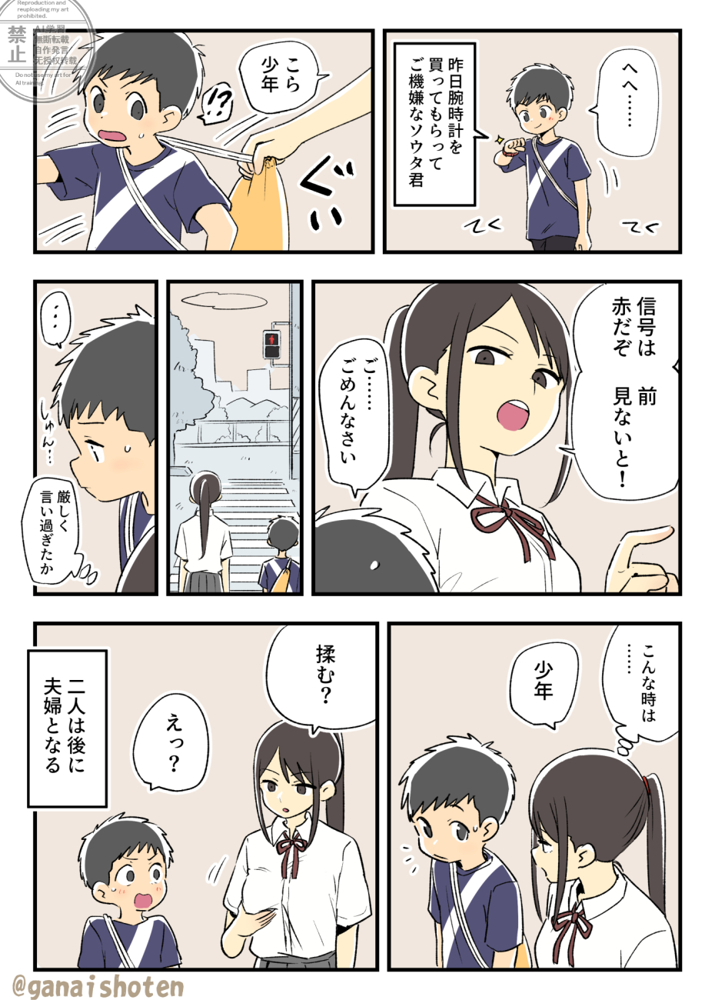
ロコモコ食いすぎたか？
アメリカで貧相な食事をした（実際持ってったアルファ米は全部食った）んだけど、なぜか太って帰国してしまった
日経平均一時3000円安、韓国発AI株安再び キオクシアがストップ安
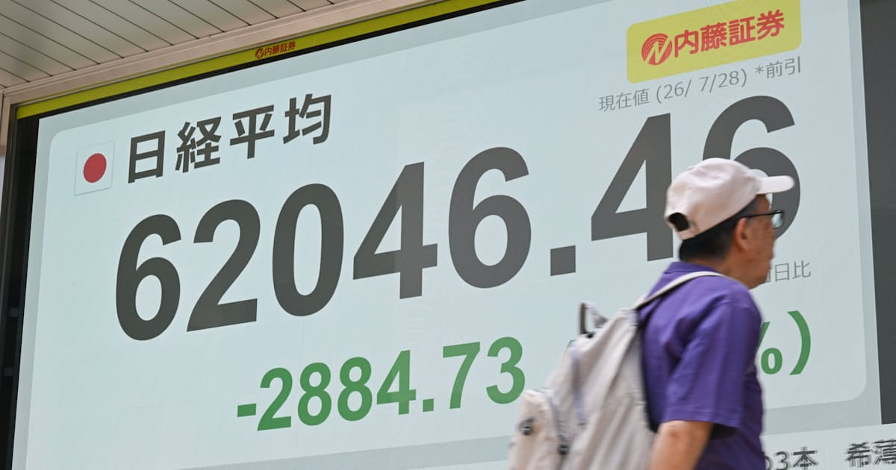
日経平均一時3000円安、韓国発AI株安再び キオクシアがストップ安
なるせひろのりさんがリポスト
【BYDが日本で軽EV 実質100万円台】
BYDが日本で軽EV 実質100万円台 - Yahoo!ニュース
東海3県でもマンション修繕談合か 公取委、施工･設計20社超立ち入り
東海3県でもマンション修繕談合か 公取委、施工･設計20社超立ち入り
X民「来年60歳になりますが、今の日本は○○だと思います」→現役世代、大激怒 #炎上
X民「来年60歳になりますが、今の日本は○○だと思います」→現役世代、大激怒 - オレ的ゲーム速報@刃の記事ページ
jin115.com
【7/30(木)『デジタルアイテムキャンペーン第3弾』スタート！】
7/30～9/2の期間中に「CHUNITHM Mate」を遊んでポイントをためると、
「ロト・トゥエルヴ」「カイナン・メルヴィアス」「覚醒者バシアン」のシステムボイスと交換できるよ！
この機会にCHUNITHMを遊んじゃおう！
https://
info-chunithm.sega.jp/12948/
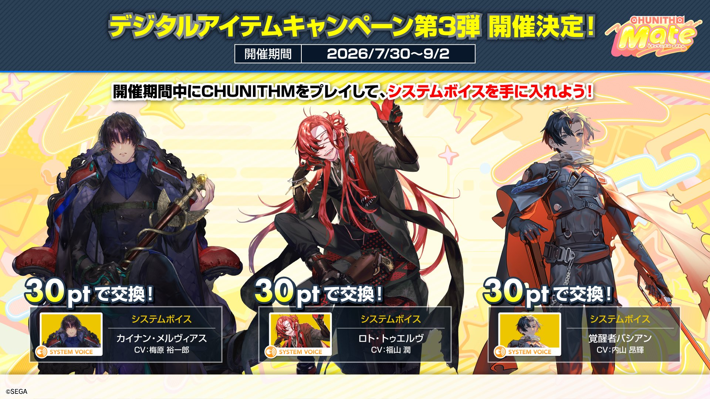
「値上げしない」サイゼリヤ、物価高で限界
https://
nikkei.com/article/DGXZQO
UB2139T0R20C26A7000000/?n_cid=SNSTW005&n_tw=1785198215
…
アナリストの一人は「コスト削減策はほぼやり切っている」。とりわけ、契約更新が不可能なほどの店舗賃料上昇が悩みの種に。
仮に値上げが実施されれば「10円の値上げで24億円増益」との試算もあります。
｢値上げしない｣サイゼリヤ、物価高限界 客単価10円上げで20億円増益
ゼンリンの本気
マニアックすぎる（？）“有人離島”のトレーディングカードが人気 ゼンリンの異色トレカはなぜ生まれたか 「人が住んでいる場所は全国全て調査している」
（記事URLはリプから）
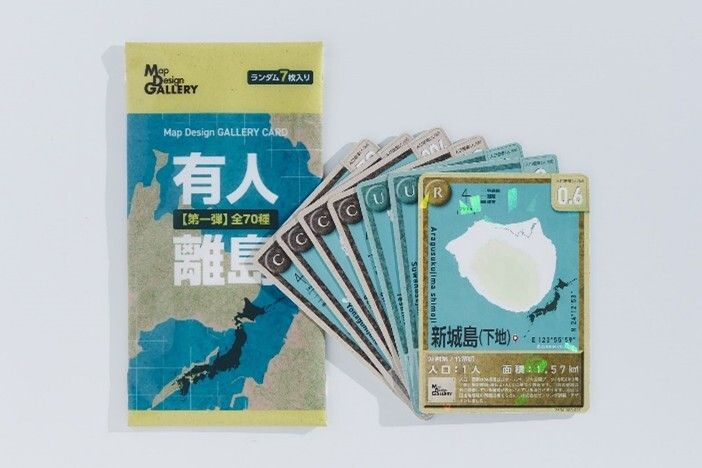
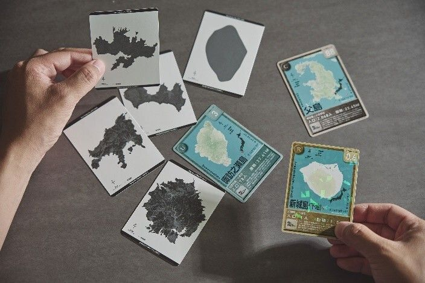
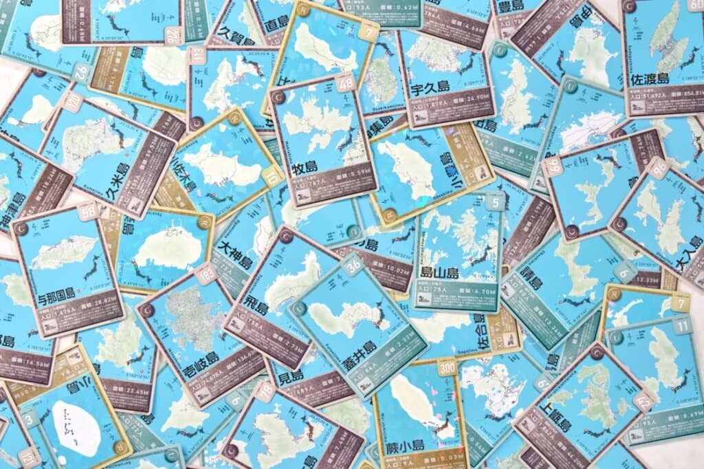
マニアックすぎる（？）“有人離島”のトレーディングカードが人気 ゼンリンの異色トレカはなぜ生まれたか（1/3） | ホビー ねとらぼ
『モンハンワイルズ』大型DLC「アセンダンス」で気になるプレイヤーに朗報！データ引継ぎ対応の「序盤体験版」が配信決定
https://
gamespark.jp/article/2026/0
7/28/169833.html?utm_source=twitter&utm_medium=social&utm_content=tweet
…
貝さんさんさんがリポスト
⋰
きみが死ぬまで恋をしたい
限定版Blu-ray第1巻 特典イラスト公開
⋱
限定版Blu-ray第1巻には、
原作・あおのなち先生の
描き下ろしイラストを使用した
アクリルスタンド＆タペストリーが付属
数量限定なので、ご予約はお早めに！
詳細はこちら
https://
kimishinu-anime.com/bluray/vol1.ht
ml
…
ユウマボウズさんがリポスト
SSRメンバーのMyGO!!!!! 要 楽奈を紹介
SSRメンバーには、リズムゲーム画面などで表示されるアニメーション演出つき
ただ今 #アワーノーツ 事前登録受付中
▼事前登録はこちらから
https://
bang-dream-on.bushimo.jp/pre-register/
#バンドリ
ライブトライ！イベント「真っ白なページ、紡いでいく彩り」開催中
イベントPを集めることで、★3 #大和麻弥 と★2 #氷川日菜 に出会えます
イベントは明日の20:59まで！お見逃しなく
#バンドリ #ガルパ
/／
セールは明日7月29日まで
40%OFF
\＼
『シャインポスト Be Your アイドル！』のセールは
明日7月29日(水)の23:59まで！
お得なこの機会をお見逃しなく
ストアはこちら
▼デジタルデラックスエディション
https://
store-jp.nintendo.com/item/software/
D70070000027774
…
▼ダウンロード版
https://
store-jp.nintendo.com/item/software/
D70010000095838
…

ポン☆潤々さんがリポスト
「アイドルマスター SideM in K@SHIBA」を一緒に盛り上げてくださったプロデューサーの皆さん、そしてLegendersの皆さん、改めて315な時間をありがとうございました!
葛之葉雨彦さんによる本市のPR動画は、7月31日(金)をもって公開終了となります。
▼詳しくはこちら
http://
youtu.be/AXDyeERUnsA
演劇リーグ開催
第158回演劇リーグ開催中です
今回の楽曲は、
「夢のステラリウム」になります
開催期間は8/3(日)24時までになります
#ユメステ #ワーダイ #ワールドダイスター
【7/30(木) 楽曲追加！】
7/30(木)より、niconicoに「幕を下ろそう、パレードへ」「Ribbon」が登場！
さらに、「ULTIMA」にパワーアップした大人気楽曲「ドーナツホール」「マトリョシカ」が登場するよ！
ぜひ遊んでみてね！
https://
info-chunithm.sega.jp/12407/
最近のオープンモデルを政府が禁止するだの擁護の公開書簡だののゴタゴタで一人だけ署名しなかったAnthropicは今回のヴィランのクズとしてバチボコにされている。それに対してダリオがレスバ記事をアップした。「Anthropicはオープンモデルを禁止しろなんて一度も言ってない」との事。えっ！？そうだっ
Anthropic
@AnthropicAI
オープンウェイトモデルに関する私たちの立場について、多くの憶測が飛び交っています。私たちの見解をここに詳しく述べています：
https://
anthropic.com/news/position-
open-weights-models
…
最大32人の大怪獣バトルついに解禁！人間と兵器も入り乱れるマルチプレイACT『BeastLink』8月18日Steam早期アクセスへ。生き残るために自らが怪獣になる
https://
gamespark.jp/article/2026/0
7/28/169832.html?utm_source=twitter&utm_medium=social&utm_content=tweet
…
人類として戦場に降り立ち、血清を集めることで怪獣とリンク。怪獣の力を借りて戦える。ストーリーモードも用意。
テスラさんがリポスト
ビーチで砂にまみれた伊織、マンホールの位置が道路から白良浜へ続く開けた場所なんでマンホールには興味ないけど白良浜をバックに写真撮りたい観光客のグループが一人ずつポーズを変えながらそれぞれ何枚も写真撮りまくっててなかなかマンホールの写真撮れんかったがしゃあないわな
#ふたマス
常夏@時々探訪、時々アウトドアオタク
@tokonatu1224
白良浜でふたマス！…いや、白良浜暑いわ、しかし白良浜で泳ぐ海水浴客みてたら夏よな〜
#ふたマス
PSディスク廃止関連ボイコット「#PSBlackout」にアノニマスも賛同か―「所有する時代の終わりが近づいている」と声明
https://
gamespark.jp/article/2026/0
7/28/169831.html?utm_source=twitter&utm_medium=social&utm_content=tweet
…
単にボイコットに賛同しているだけでなく、アノニマスが問題視しているのはデジタルコンテンツの所有権のようです。
パスワードを忘れても、自撮りで解決。Googleがセルフィーでのログインを導入
パスワードを忘れても、自撮りで解決。Googleがセルフィーでのログインを導入 | ギズモード・ジャパン
スニーカーに振動という新機能。歩き方を意識できるから、運動効率アップにも期待できるんだって BuyPR
スニーカーに振動という新機能。歩き方を意識できるから、運動効率アップにも期待できるんだって | ギズモード・ジャパン
Torishima / INTPさんがリポスト
やっぱり事前学習のデータは食べ尽くしたのでRLで自分の行動からデータを自家生成消費するサイクルに入ってるんだな
そしてRLループの作り方なら資本のパワーゲーム色はやや薄まり設計者のセンス勝負になってくるから在野の研究者が発明できる余地もある
面白い時代になってきた
Daisuke Okanohara / 岡野原 大輔
@hillbig
Kimi K3は、フロンティアモデルに匹敵する性能を持つオープンウェイトモデルである。Technical Reportが公開されたので、重要な点をまとめる。
Kimi K3は、総パラメータ数2.8T、活性パラメータ数104BのMoEモデルである。アーキテクチャ、データ、ハイパーパラメータ、学習手法を総合的に改善し、Kimi
Torishima / INTPさんがリポスト
それを考えると、OpenAIやAnthropicが、GoogleやAppleみたいになってほしくないって意味でもあるな... 全部をOpenAI/Anthropicに握られると詰んでしまう
Windowsのgpu専有率、調べたらめちゃくちゃリソースの軽いKernelで（GPUのメモリやコアの消費が軽い）も実行中は100%と表示されるって出てきてマジかよの顔になってる（つまり消費電力は専有率表示からは全くわからない）
どこいきゃあるんだー、だー、だー・・・（残響

オリコンニュース
@oricon
冷水専用「冷しカップヌードル」発売へ
https://
oricon.co.jp/news/2467451/f
ull/?utm_source=Twitter&utm_medium=social&ref_cd=jstw003
…
日清食品は、発売55年目で初の熱湯禁止“冷水専用”の「冷しカップヌードル」を7/20から発売する。冷蔵庫で冷やした水を注ぎ、5分待つだけでコシとつるみのある食感に仕上がるという。味は「ピリ辛キムチ味」「鶏塩レモン味」の2種類
ソフトバンクG、株価一時5000円割れ キオクシア追い証換金売り警戒
ソフトバンクG、株価一時5000円割れ キオクシア追い証換金売り警戒
おお
「日本一短い私鉄」紀州鉄道、揺れる存続 地元も9割が利用せず
https://
nikkei.com/article/DGXZQO
UF211Y50R20C26A7000000/?n_cid=SNSTW005&n_tw=1785199546
…
全5駅2.7kmの路線は起点から終点まで8分。1980年代に30万人以上だった乗客数は2024年度で9万2205人。事業は慢性的に赤字ですが、市観光協会は「御坊が誇る観光資源」として存続を訴えます。

公的ファンドの年金運用、25年度はGPIF超え 株式多めの配分で恩恵
公的ファンドの年金運用、25年度はGPIF超え 株式多めの配分で恩恵
なるせひろのりさんがリポスト
あまりに暑くて腹立つので、クールなキャラのクールな姿を描いた
Kong Studios，新作「ガーディアンメイデン」のグローバルパブリッシング契約をKakao Gamesと締結
https://
4gamer.net/s/G101295.2607
28004
…
多機能電動昇降デスクのクラファン
あと3日！
ケーブルマネジメント、豊富な拡張性、そしてこの洗練されたデザイン。
クラファン限定価格で手に入れる最後のチャンスです！
https://
costory.jp/cf-published-s
ku-groups/1204742862?utm_source=MG_gizmodo&utm_medium=x_0728_X_3days&utm_campaign=gm-aimdesk-pro-cus
…
さすがに前の投稿が批判殺到して炎上してただけなのに
インプレッション増えて喜んでるのは、ただの炎上芸人と一緒なのよ
玉木雄一郎（国民民主党）
@tamakiyuichiro
国民民主党の「対案」の投稿が600万を超えるインプレッション。
選挙中から同じこと（「社会保険料還付付き住民税控除」）を言い続けてきましたが、伝え方を変えるだけでこんなに違うのかと驚くとともに反省しています。
国民民主党案はシンプル
・来年度から「5万円減税」 x.com/tamakiyuichiro…
冬コミ原稿2Pdone
エターナル総書記さんがリポスト
だから、あなたはウクライナが弾道ミサイルで破壊され、ロシアに征服され、その後ロシアがNATO加盟国に対して全面戦争を仕掛け、ロシアがイランを支援してアメリカ兵を殺すことでアメリカに対する攻撃性を高めるのを好むのですか？
General Mike Flynn
@GenFlynn
ローラ、軍隊に入って本当の世界を見てみろ！ その間、明らかに理解していないことについて話すのをやめてくれ、そしてお前はもう偏見を超えているよ。
JALモバイルでゲットしたクーポンのどこかにマイル、何度回しても希望の行き先が出ない
ドンキやベイシア、埼玉県に新業態1号店 「日本の縮図」は実験適地
小売りや外食が続々と埼玉県をテストマーケティングの地に選んでいる。世帯構成に偏りが少なく、都市部や郊外、農村や山間部が混在する地理的特性も背景にある。際立った特徴が乏しい「日本の縮図・埼玉」は新業態を試す格好の場といえる。群馬県地盤のスーパー大手、ベイシア（前橋市）が6月、埼玉県深谷市にディスカウント業態のスーパー「劇安ワンダーランド ココトク！」を初出店した。陳列法の工夫で作業効率を高め、既
nikkei.com
【30%オフ】Steam版が日本語に対応！音ゲーADV『UNBEATABLE』最新パッチ配信＋ボカロP・Jamie Paige氏とのオリジナル楽曲含む“コラボDLC”も配信
https://
gamespark.jp/article/2026/0
7/28/169830.html?utm_source=twitter&utm_medium=social&utm_content=tweet
…
一部カットシーンでの字幕機能も追加。PS5版およびXBOX版は承認手続き中のため、後日日本語に対応する予定です。
「hololive Dreams」初のゲーム内イベント「ハロー！ Brand New Summer！」を開催。オリジナル楽曲や水着衣装が登場
https://
4gamer.net/s/G097413.2607
28003
…
イベント楽曲6曲やオリジナルストーリーを実装。水着衣装の★5メンバーが登場するガチャも開催
Torishima / INTPさんがリポスト
NVidiaはついに循環的取引で儲けすぎたツケを払う時が来たのか、Appleに負けて２位転落へ。アップルはAIにやる気なさ過ぎたせいでAIと関係ないまで思われてて全然巻き込まれない。キオクシアはストップ安だって
後藤達也
@goto_finance
【速報】キオクシア ストップ安
一時、ストップ安（制限値幅の下限）となる前日比10000円安（18%）安の44,550円をつけました。AI投資の持続性への懸念が出るなか、信用買いをしていた投資家などからの売りが連鎖的に強まっている模様です x.com/goto_finance/s…
スピードスケート高木美帆さんに国民栄誉賞 8月4日に表彰式
スピードスケート高木美帆さんに国民栄誉賞 8月4日に表彰式
辺野古転覆、同志社国際高を海保が家宅捜索 業過致死傷などの疑い
沖縄県名護市辺野古沖の転覆事故で、第11管区海上保安本部（那覇）が業務上過失致死傷などの疑いで、死亡した女子生徒（17）が通っていた同志社国際高（京都府）を家宅捜索していたことが28日、捜査関係者への取材で分かった。女子生徒の遺族が、同校の校長らに対する告訴状を中城海上保安部に提出していた。同志社国際高を運営する学校法人同志社は同日、ホームページ上で家宅捜索を25日に受けたと認め「本事態を厳粛
nikkei.com
史上最強エルニーニョ、食料ショック再来に市場身構え 新興国の脅威に

史上最強エルニーニョ、食料ショック再来に市場身構え 新興国の脅威に
ポン☆潤々さんがリポスト
＼\ 応援パッケージが今年も登場！ /／
当社がスポンサーを務める、横浜DeNAベイスターズとのコラボレーション商品《横浜DeNAベイスターズ応援パッケージ2026》を初お披露目！
7月31日(金)より、常設店舗「横浜高島屋店」にて発売開始いたします！
貝さんさんさんがリポスト
ただ、やはり、解像度が低いと、描線の選択肢が狭くなり、繊細な表現がしたくても「ドット選び」になってしまい、絵を描くのが難しくなってしまうので、テレビスタンダードでも200dpiくらいは欲しいなと思ったり、、、
『シャインポスト』公式さんがリポスト
⋆⋅☆⋅⋆ ──────────── ⋆⋅☆⋅⋆
#シャインポスト × THEキャラCAFE
⋆⋅☆⋅⋆ ──────────── ⋆⋅☆⋅⋆
ドリンクのテイクアウトも実施しております！
テイクアクトのみのご利用も可能ですので、
是非お立ち寄りください□
メニューの詳細は□
http://
the-chara.com/blog/?p=116344
X民「みいちゃんのアニメ化に反対してる人たち、他にもアニメ化したらヤバい作品なんてあるのになんでこれだけ叩くの？」 #炎上

X民「みいちゃんのアニメ化に反対してる人たち、他にもアニメ化したらヤバい作品なんてあるのになんでこれだけ叩くの？」 - オレ的ゲーム速報@刃の記事ページ
jin115.com
コーエーテクモHD株価急反落 4〜6月営業増益、市場予想届かず
コーエーテクモHD株価急反落 4〜6月営業増益、市場予想届かず
BYDの軽EV「ラッコ」実質199万円 装備充実、補助金は日本車優位
BYDの軽EV「ラッコ」実質199万円 装備充実、補助金は日本車優位
貝さんさんさんがリポスト
ちょうど「ルックバック」が公開されてたこともあり、原画を2値線で描き、ざっくりした原画のまま、線をつないだりクリンナップせずにそのまま動画仕上げまでしたら、作業負荷はどうなるか試してみようと。
inamura*takeshi
@altamontagna170
二値線の原動画〜仕上げまでを自分でやってみた方が、
現状のシステムと表現力の問題点が理解できるかなと思ったのも、これを描いた理由の一つでした。。。
追記
暴発したら危険とはよく言われているけど、ぶっちゃけ暴発しても絶対安全な携行方法はないわけで（自分に当たらなくても他人や物に当たる）。
隠しやすい、運転しやすいなどのメリットが多いのでアペンデックスキャリーには意味があるわけでしょうし。
【最大50連分のガチャチケットをGET！】
本日7月28日11:00から、4.5th Anniversary直前 カウントダウンログインボーナスを開催！
5日間限定のログインボーナス！
毎日ログインしてS以上1体確定10連ガチャチケットを手に入れよう！
▼開催期間
8月3日3:59まで
#ヘブバン
ポン☆潤々さんがリポスト
渋谷で一緒にいっぽ！
#チアリステイルズ
https://
lnky.jp/vKsAAWs
つなまよさんがリポスト
一部防具のバランス調整
古龍種素材の防具などを中心に
装備スキルLvの上方修正や、
漂移スロットの追加が実施されます
この機会に様々な装備の組み合わせを試しましょう！
詳細はBlogをチェック
#モンハンNow
https://
monsterhunternow.com/news/devletter
-070126
…
渡辺浩弐さんがリポスト
『渡辺コージ中』メンバー限定配信
「中野ブロードウェイ怪談」楽しみですね。
渡辺浩弐
@kozysan
『渡辺コージ中』メンバーシップ情報です(8月7日・22:30頃〜限定配信「中野ブロードウェイ怪談」につきまして)。
#mond
https://
mond.how/topics/ly2v2y1
761o2nnv
…
NVidiaのAI界隈での循環的取引は前から大問題だったが市場では無風だった。どうなってんだ？と思ってたが最近はさすがに雲行きが怪しいらしい。まずSKハイニクスと5000億ドル規模の超規模循環的取引の契約を結んだ。それからOpenAIがソフトバンクのデータセンターを借りる件でNVidiaが2500億ドルまで賃
Bloomberg
@business
Nvidiaは、懐疑派が業界全体の需要と評価額を人為的に水増ししていると警告する一連の投資を加速させている
https://
bloomberg.com/news/articles/
2026-07-27/nvidia-s-750-billion-deals-revive-fear-of-ai-circular-financing?taid=6a67fcbb71891d0001141486&utm_campaign=trueanthem&utm_content=business&utm_medium=social&utm_source=twitter
…
【ヘルタースケルター】整形手術を１１回やった結果
【ヘルタースケルター】整形手術を１１回やった結果 : ハムスター速報
Torishima / INTPさんがリポスト
Kimi K3、オンプレでイニシャルコスト、1億円を切るなら、そこら辺の国家が喜んで使うのではないか
円居先生にふぁぼられたけどRTされなかったのでニコッとなってます
いたたたたた・・・。
（注・アペンデックスキャリー＝虫垂キャリー＝お腹と股間の間くらいにホルスターを入れて拳銃を携行する方法）
Sato_Hunt
@Satohunt1776
誤射で自分のタマタマと息子を撃ち抜いてしまう。ユーチューバーのティモシーダネリーさんがアペンデックスキャリーのホルスターから抜く際に自分自身を誤射してしまい,ペニスを貫き、左側の玉を失う事に。本人は現在回復中。
https://
youtu.be/JwF0gmLhHPg?si
=tnu4EjEieUPcLEaj
…
日立、ミュトス活用でサイバー対策の検証作業軽減 数週間を数時間に

日立、ミュトス活用でサイバー対策の検証作業軽減 数週間を数時間に
山田云々とヤニねこが同列で語られるのは違和感ある
創作におけるAI、AIはなんかこう時間軸方向に長いものを扱うのが身体感覚がないからなのか致命的に苦手な気がしている（イラスト>動画>漫画=小説（テキスト）>映画のような感じで情報量もそうだけど時間軸が伸びるに従って破綻が増大していく
9月にオーストラリア・ケアンズでセルフダイビングするんだけど、その前に一度スキルチェックしたいな
Jetson以外を探すと、ほぼ中国の会社の製品しか出てこない。政治的に中国からのものは採用できないとなると、競争が消えて、選択肢がないなら、価格も上げるか、みたいな。
技術力、って、天を仰ぐばかりですね。
【420円】最大4人協力マルチの鉄道建設ゲー『Unrailed!』85％オフでセール中！
https://
gamespark.jp/article/2026/0
7/28/169829.html?utm_source=twitter&utm_medium=social&utm_content=tweet
…
人間って邪魔だな、ってみてて思うばかり。
inuro
@inuro
技術屋とくにソフトウェア屋は昔から「正論は全てに超越する」みたいな感覚があり、それは僕自身もけっこうそうだったりするんですが、コミュニケーションの文脈においては明確に否なんですよ。会議とかも含め広い意味でも。
うみゆき@AI研究さんがリポスト
日経平均4%超安、巨額投資や中国勢参入への懸念でAI・半導体関連売り
日経平均4%超安、巨額投資や中国勢参入への懸念でAI・半導体関連売り
なんかこう小説なら（イラストなど視覚化されてないものに限る）エグい設定書いても、騒がれないみたいなとこありませんか（感度3000倍で騒ぐ方々は長い文章をあまり読まないため
ベンジャミンが、プレデターとコンボマスターを継承しても、プレデター使うにはコンボマスターが邪魔だし、コンボマスターつかったらプレデター使えないないし、色々と食合せがわるいトリオだな
がん検診、医師2人→1人で可能に 異常検出でAI活用も検討
がん検診、医師2人→1人で可能に 異常検出でAI活用も検討
太陽活動には法則性がある？ 太陽嵐を7年前から予測できる新手法
太陽活動には法則性がある？ 太陽嵐を7年前から予測できる新手法 | ギズモード・ジャパン
日本経済新聞 電子版（日経電子版）さんがリポスト
マスク氏「Xマネー」提供開始、預金利回り6% 利用者保護に懸念の声
マスク氏「Xマネー」提供開始、預金利回り6% 利用者保護に懸念の声
アサヒ飲料ピングレソルティ、熱中症対策の「穴場時間」攻めヒット
https://
nikkei.com/article/DGXZQO
UC130DJ0T10C26A7000000/?n_cid=SNSTW005&n_tw=1785133108
…
2025年の販売数量は計画比の約4倍を達成しました。商品開発ではスポーツドリンクの需要が落ち着く時間帯に着目。熱中症対策の隙間を埋めるという発想で企画を進めました。
アサヒ飲料（東京・墨田）が2025年春夏商戦のために発売した熱中症対策飲料が、同社の想定を超えるヒットを記録している。「アサヒ おいしい水 天然水」（以下、おいしい水）ブランドで25年3月に発売した、自販機限定商品「アサヒ おいしい水 天然水 ピングレソルティ」（以下、ピングレソルティ）だ。当初は春夏限定商品の想定だったが、通年販売に切り替えるほど売れ行きが好調。結果的に、25年の販売数量は、計
nikkei.com
『ブレス オブ ファイア』や『聖剣伝説2』などから影響を受けた海外産JRPG『Forge of the Fae～フィオラと精霊石』新映像が公開
https://
gamespark.jp/article/2026/0
7/28/169828.html?utm_source=twitter&utm_medium=social&utm_content=tweet
…
・『クロノ・トリガー』『ファイナルファンタジー』からも影響を受ける
・戦闘画面のレイアウトがすごく『ブレス オブ ファイア』
MOBA的なスキル構築を，ターン制の戦場に持ち込んだ意欲作。新作ストラテジーRPG「Dreamsend: Wintersong」，Steamストアページを公開
https://
4gamer.net/s/G102810.2607
28001
…
アビリティ同士の相互作用を重視したシステムが最大の特徴
2026年産の主食米1%増産見通し コメ余り加速、飼料・加工用は不足
2026年産の主食米1%増産見通し コメ余り加速、飼料・加工用は不足
なるせひろのりさんがリポスト
BYD RACCOの価格が判明したので、主要装備と照らし合わせて見ると…
こんなの300Premium一択な気がする
200はスマホがキーにならないし…
300Premiumは…
◎パワーシート
◎ホットカップホルダー(←スゴい)
◎ハンズフリースライドドア
ホットサンドメーカーを買ってみました。いつもフルグラと牛乳だけど、たまにはあったかいものを食べてみようと思って。チーズとハムだと、しかし毎日これだと、太りそうですね…
かけていることを忘れる15g。鯖江の職人が本気で「キザ見え」をなくしたサングラス BuyPR
メガネの聖地・福井県鯖江市の職人が素材からパーツまで1点1点手作業で組み立てたオーバル型アウトドアサングラス。角のない楕円フレームが顔に自然と溶け込みサングラス特有の「かけている感」を排除しました。偏光・調光・UVカットの3機能を1枚のレンズに集約。廃棄ペットボトルをアップサイクルしたPET樹脂フレームによりわずか15gのシリーズ最軽量を達成。アジア人の骨格に合わせた独自設計でずれにくく長時...
gizmodo.jp
エターナル総書記さんがリポスト
凄いな。総統閣下シリーズのリアル版じゃないかコレは。
FGOのソシャゲ、映画の鬼滅の刃みたいに単体1000億円、みたいなipが来年も稼ぐか？といえば、夢の国とはならず、金額は大きいが短期間すぎて花火だし。
経営は誰でも働けば収益な構造を作るだろうと思えば、なんだろう？
『超かぐや姫！』公式さんがリポスト
【#夏は超かぐや姫】
こちらの特製ポスターはゲーマーズ各店舗でも掲示中！
是非お店に見に来てほしいゲマ～！

『超かぐや姫！』公式
@Cho_KaguyaHime
✶ ₊⁺ 𓂂
#夏は超かぐや姫
𓂂 𐩑 ✦
【7/28(火)以降】 順次
一部映画館＆コラボ店舗での特製ポスターが掲出開始！
見つけた方は「#夏は超かぐや姫」をつけて
ぜひ投稿してください
高性能な半導体が兆円単位の投資をしても競争は苛烈なのを見てると、技術というipの構造に限界があるのだろうか？
ソフトipは、個人から生み出されるipは数打ち当てれば毎年ある程度の数は取れる、それを興行する仕組みで収益なら、ソフト配信プラットホーム運営を事業とする、になるのかな。
Tatsuya Ishikawa
@tatsuyai713
もう製品開発やめてIPで税金みたいにお金が入ることしか考えていない経営陣(もう辞めるか x.com/akiraa_tanaka/…
おもろい提案やけど、「混んでるかつ、乗った扉と出口が逆の駅」に悲劇が生まれそう
ゆうな
@twf003
思ったけど、電車まじでこれでよくない？
ストーカー加害者にGPS装着、捨て身の犯行防げるか 韓国は足輪型
ストーカー加害者にGPS装着、捨て身の犯行防げるか 韓国は足輪型
Torishima / INTPさんがリポスト
Kimi-K3をそのまま動かすには、NVIDIA B300 x8かあ。B300が1基約860万円～（Gemini調べ）なので、小さくみても7000万円、システムとかを入れると最低1億円コースなんだろうなあ。
一般のご家庭によくある……って、数十年後には、そうなってるかもしれませんが。
「教師の質が下がった」と言われる明らかな原因、判明 #雑談・その他の話

「教師の質が下がった」と言われる明らかな原因、判明 - オレ的ゲーム速報@刃の記事ページ
jin115.com
美少女アンドロイドの修理シーンがやっぱり癖…無料で“圧倒的に好評”の評価を得たADV『D1AL-ogue』続編は前作から6か月後を描く
https://
gamespark.jp/article/2026/0
7/28/169827.html?utm_source=twitter&utm_medium=social&utm_content=tweet
…

ポン☆潤々さんがリポスト
7/31（金）～8/13（木）東京駅一番街 東京キャラクターストリートで「ウサハナPOP-UP STORE×むにゅぐるみパティオ」を開催！
マスコットやステッカーなど、かわいいコラボグッズを販売するよ♪
ノベルティプレゼントやオンライン販売もチェックしてね☆
https://
sanrio.lnky.jp/D2n91Fv
#サンリオ
ポン☆潤々さんがリポスト
【315!!!SHOP】
／
フォーチューンラテ本日発売開始
組み合わせは全部で種類
＼
お会計後、専用タブレットにて左右の絵柄を選択！
プリント中の様子はモニターにて確認可能です
3F カフェコーナー
皆さまのご来店お待ちしております！
#SideM
アイドルマスター オフィシャルショップ
@ImasShop_bnam
【315!!!SHOP】
＼ \\ // ／
お好みの柄を組み合わせて作成できる
フォーチューンラテが新登場
組み合わせは全部で8種類ˊˎ˗
／ // \\ ＼
バンダイナムコ Cross Store 東京内カフェコーナー
7月28日㊋10時
https://
bandainamco-am.co.jp/chara_shop/ido
lmaster/NEWS/315shop/202607171515.html
…
皆さまのご来店お待ちしております！
#SideM
Torishima / INTPさんがリポスト
SolとKimi K3が同じくらいでFableが頭一つ出てる。実感に近い。Fableは全方位的に安定して優秀
Torishima / INTPさんがリポスト
【速報】キオクシア ストップ安
一時、ストップ安（制限値幅の下限）となる前日比10000円安（18%）安の44,550円をつけました。AI投資の持続性への懸念が出るなか、信用買いをしていた投資家などからの売りが連鎖的に強まっている模様です

後藤達也
@goto_finance
◆ Apple > NVIDIAに
半導体株の調整が続き、NVIDIAが時価総額首位から陥落しました。AI投資に比較的慎重だったAppleが浮上しています
きょうの半導体株安は…
・中国
・NVIDIA - OpenAIの取引
が影響しています。
noteでポイントをまとめました
https://
note.com/goto_finance/n
/n4cd7ae8efb5b
…
由羽@レモンアイコンの人さんがリポスト
みいちゃんと山田さんのアニメ化反対運動やってる人達
金集めまでしだしてて横転
なるせひろのりさんがリポスト
クソむしども
ハザードついてて福祉車両だぞ
吐き気するわこいつら
どう見ても小学校だろ
一時的に届けてんだろこれ
全然邪魔じゃないし、ここに止められても
何なの？このルールバカども。
横折りスマホ「Galaxy Z8」、4キャリアが割引策競う 発売前夜の狂騒
折りたたみスマホ「Galaxy Z8」、4キャリアが割引策競う 発売前夜の狂騒
なるせひろのりさんがリポスト
【悲報】
「みいちゃんと山田さん」のアニメ化が決定
↓
「知的・発達特性の当事者を傷付ける」とアニメ化反対の署名が立ち上がる
↓
フェミニストオールスターズが集結
↓
『郡司真子の娘が職場で「みいちゃん」と揶揄われ、会社を４日でクビになった』という強引なエピソードに注目が集まる←今ここ
超道徳、超倫理、超知識、超常識がないと排除される世界…は、最終的には金や教育や教養や時間や安全や知性や集中力やテクノロジーをある程度持ってる人以外をメインストリームから排除する世界になるで。
漫画家の告発が問う出版社の支援体制 講談社は創作環境に配慮

漫画家の告発が問う出版社の支援体制 講談社は創作環境に配慮
月収８０万円の秘書の１日
月収８０万円の秘書の１日 : ハムスター速報
X民「地面に防水スプレーかけた後に大雨来たらすごいことになったわｗ」→その抜群の効果にネット民驚愕 #雑談・その他の話

X民「地面に防水スプレーかけた後に大雨来たらすごいことになったわｗ」→その抜群の効果にネット民驚愕 - オレ的ゲーム速報@刃の記事ページ
jin115.com
貝さんさんさんがリポスト
こんな時ですが、流れてきたので……
しかも北米で無料公開したらしいです
北米版のロゴはたしか、黄色でペンギンのアイコンも入ってたような
Catsuka
@catsuka
「ペンギン・ハイウェイ」はYouTubeで無料視聴可能（北米限定）です。
2018年に石田陽介がStudio Coloridoで監督したアニメーション長編映画。
>>
https://
youtube.com/watch?v=tqUY4v
ioKV4
…
日本郵船、富裕層向け大型クルーズ船新造 「飛鳥Ⅱ」後継
https://
nikkei.com/article/DGXZQO
UC267NC0W6A520C2000000/?n_cid=SNSTW005&n_tw=1785145185
…
2028年度以降に新造、投資額は1000億円規模になる可能性があります。クルーズ市場が拡大しており、25年に導入した「飛鳥Ⅲ」と2隻体制で運航、富裕層需要を取り込みます。

日本郵船、富裕層向け大型クルーズ船新造 飛鳥Ⅱ後継
金利2.6％を超えた新窓販国債 個人向け変動10年との差が拡大
金利2.6%を超えた新窓販国債 個人向け変動10年との差が拡大
「道徳と正義と倫理を極限まで研ぎ澄ませていく」という社会も、なんだかんだ攻撃的な排除の一種。
「不道徳で不真面目で不注意な人も、攻撃性含む軋轢を社会で発散させて昇華して、ダメなことやトラブルもあるけど、みんなそれなりに楽しく生きてける」ような社会のほうがよい。
Torishima / INTPさんがリポスト
今日は、chatGPT Workの急速な採用と、それに注がれた素晴らしい努力を祝っています。リセットされたような気分です。
あなたのultraと/fastをしっかりつかんで、数時間後にラップトップに戻ったときにまたお会いしましょう！
自走カメラロボ、走る！ 跳ぶ！ 転んでも起き上がる！

自走カメラロボ、走る！ 跳ぶ！ 転んでも起き上がる！ | ギズモード・ジャパン
TLに名だたる大学や組織の"最先端のモデル"の研究成果が流れる中で、データセットが重要(めちゃくちゃ地味)で、個人で常に成果を流し続けている、
すごい...
日経平均株価、一時2000円超安 AI・半導体株売られる

日経平均株価、一時2000円超安 AI・半導体株売られる
日本経済新聞 電子版（日経電子版）さんがリポスト
米J&Jベビーパウダー集団訴訟、9000億円で和解

米J&Jベビーパウダー集団訴訟、9000億円で和解
iPadの残容量が残り少ないと見たら、appleインテリジェンスに8GBほど使われいました。オフにした。4GBになった。てっきりモデルファイル8GBと思ったから削除したら無くなると思いきや、そこは0じゃないんだ...
＞ω＜さんがリポスト
代替え何がいいかなー
fumi
@fumi_maker
殿様商売過ぎる
NVIDIAがJetson全製品を値上げ、最大101％増でNanoは2倍に - FabScene（ファブシーン）
https://
fabscene.com/new/news/velo3
d-forge1-production-campus/
…
高レベルハードウェア記述って、設計規模拡大に人が追従するための何かで、振る舞いだけの記述で、パイプラインなどハード設計の本質自体はツールに合成させる方向だと思うけど、LLMが登場した現在、言語として一般的成功を収められなかったHLSに、意味があるの？とか思うけど。
フランスとスペインで火災拡大、30万人超避難 ボルドーまで15km
https://
nikkei.com/article/DGXZQO
GR27A5D0X20C26A7000000/?n_cid=SNSTW005&n_tw=1785190992
…
先週から始まった大規模火災。消化活動は思うように進んでいません。ヨーロッパ南部は28日から再び猛暑となる見込みで、高温で火災が勢いを増すとの警戒が広がります。

フランスとスペインで火災拡大、30万人超が避難 ボルドーまで15キロ
貝さんさんさんがリポスト
「CGはヌルヌルしている。」
そう言われる時、大抵「フルコマだから」で片づけられる。
本当の原因は別にあるんじゃないかと思っている。
フルコマだから、ヌルヌルするわけではない｜マサ
フルコマだから、ヌルヌルするわけではない｜マサ
日経平均株価、反落で始まる 米半導体株安で売り先行

日経平均株価、反落で始まる 米半導体株安で売り先行
Torishima / INTPさんがリポスト
ASIのみを目指すイリヤがついに動き始めた。
Ilya Sutskever
@ilyasut
そのSSIをスケールする時が来ました： x.com/ssi/status/208…
数年前の無意味に自社のAIチャットボットをAPIラッパーで作って公開する流れが廃れたのはインジェクションでオモチャにされてTwitterで晒されて嘲笑されて無限にブランド毀損されるだけでしかなかったから。考えてみるとコンシューマ向けのAIサービスという概念自体廃れてきてるかもしれん。APIラッパ
ガサガサのどほぼ完治v(´∀｀*v)ﾋﾟｰｽ
株式引き受け、野村が連続首位 日鉄大型CBや任天堂の売り出し獲得

株式引き受け、野村が連続首位 日鉄大型CBや任天堂の売り出し獲得
著名人ら「声」の権利を保護の対象に AI生成巡り報告書了承
https://
nikkei.com/article/DGXZQO
UA250Q60V20C26A7000000/?n_cid=SNSTW005&n_tw=1785155084
…
収益目的かどうかで判断し、例えば有名人の声を使ってAIで作成したボイスメッセージは権利侵害。一方、人によるものまねは原則、権利侵害に当たらないとしました。

著名人ら「声」の権利保護、収益目的で判断 AI生成巡り報告書了承
【続報】埼玉県警、まさかのオービスを盗まれる→その後の展開が不穏だと話題に・・・ #炎上
【続報】埼玉県警、まさかのオービスを盗まれる→その後の展開が不穏だと話題に・・・ - オレ的ゲーム速報@刃の記事ページ
jin115.com
チュウニズム公式さんがリポスト
轟音、CHUNITHMより。
混沌の器の咆哮が、再び天地を震わす。
【"Acid God" by Yuta Imai】
7/30のVer. 6.16にて、Memory Archiveに登場。
#arcaea #CHUNITHM
EDAって、設計云々言ってるとこは、レベル低くて作るだけで精一杯のかたるに落ちるとこで、事業でしてると、設計はできて当然、検証、サインオフがめちゃ注力だけど、
表に出てくるの作る話ばかりだな、みたいな。
Тагсанов
@tagsanov
FPGAメーカーが頑張ってたHLS系のツール、Googleに一掃される運命なのだろうか....
https://
github.com/google/xls
輿水畏子さんがリポスト
京急、三浦半島行き快特に平日指定席 夏休みの観光強化

京急、三浦半島行き快特に平日指定席 夏休みの観光強化
原理的にはこれと同じ仕組みで同じようにインジェクション食らう脆弱さを持ち合わせたフロンティアモデルがすでに息するようにサイバー攻撃できちゃう能力を持ってます
あさしん 𝕏
@asashin227
AIのセキュリティリスクとしてお堅い説明するよりこれ見せた方が理解が早そう x.com/kiratchi0328/s…
計算機資源をより少なくして達成できる高性能があると仮定すれば、より計算機資源を注いで更なる高性能を目指すだろう。
モデルがより高性能なモデルを生み出すループが形成されれば、底なしに計算機資源をとっていく、その自然な仕組みのどこに、驚きを感じればいいのだろう？
りんごは地に落ちるのだ
柞刈湯葉（いすかり・ゆば）
@yubais
昔の人が考えたシンギュラリティは「AI が自分より賢い AI を作るようになり、それが繰り返されることで加速的に進歩する」であり、おそらくソフトウェアの改善だけで達成される想定だったので、現状みたいに計算資源をどんどん増やして賢くするのはちょい違うのでは？ と思う
Torishima / INTPさんがリポスト
Solのトークン消費が速くなった理由がツールコールを並列で呼ばなくなったから、というの面白い。 コンテキストを埋める面積は広くなるはずだが結果的にコスト削減に貢献してたことが外してみて初めて確認されたと。
29ミート｜非エンジニアのAI副業
@29meat_ai
３言語が日本語、英語、しまくとぅばって、なんかダニエル・カールが頭をよぎる。ダニエル・カールは山形弁だけど。
#アップ738
日本経済新聞 電子版（日経電子版）さんがリポスト
狭い家ほど「不眠症リスク」4割高く
https://
nikkei.com/article/DGXZQO
UC290XV0Z20C26A6000000/?n_cid=SNSTW005&n_tw=1785195440
…
睡眠の質は「住宅の狭さ」や「通勤時間の長さ」に関係があったーー。
大阪公立大学が東京23区に通勤する40〜59歳を調査。住居が95m2規模の場合、通勤が往復52分を超えると不眠症リスクが上がることが分かりました。

狭い家ほど不眠症リスク 95平米未満や通勤52分以上で4割高く
論理的に同じ成果物が出せるなら、コンパイラを使おうが、使うまいが、ですよね。
働いたら、負けですね…
ウチューじん・ささき
@uchujin17
さすがに「アセンブラなど手抜きであり邪道、ハンドアセンブルしたコードを１ビット１ビット、パチパチスイッチで入力してこそコードに魂がこもる」なんてこと言う奴は見たことがないけれど、コンパイラを邪道・手抜きと言う人はいましたね。 x.com/u_akihiro/stat…
MoEで活性化は一部、でもメモリ総量は、みたいなllmだと、もうエージェントのインスタンス自体で個別デプロイして、エージェント間通信でもすれば？と思うけど、そうもならないものなのですね。
Nvidiaの構成からすれば、llmが個別インスタンスかmoeで部分活性化かは、動かせばどっちもおなじだろうし
久々にニコニコで音MAD見て、やっぱ自分の脳内にはガキの頃にたくさん観た視聴覚で音ハメしまくるあーいうのが刻み込まれてんだな…というのを感じる
コードはもう書かないけど、とにかく読む。わからなければ、聞く。
周囲から見れば、それは仕事？あなたが理解できないから時間を使ってるだけでは？と見えるだろう。
でも、フリーで私に仕事が来る限りは、私が理解しなければお金をもらう理由がないのだから、読むしかないじゃない。
トヨタ出身婿入り社長、三河に新風 社長・部長知見を生成AIで外販
トヨタ出身婿入り社長、三河に新風 社長・部長知見を生成AIで外販
「あ、その情報メモしたい！」を叶えるワイヤレスイヤフォン、Nothing「Ear (3a)」
「あ、その情報メモしたい！」を叶えるワイヤレスイヤフォン、Nothing「Ear (3a)」
トランスフォーマであるなら構造的には、ものすごく精度の高いコピペマシンなのは、そりゃそうだろう。計算量で限界云々も、そりゃそうだろう。
だけど、人がコードを書く必要も理由もなくなった、筋力から機械化へ。その切り替わりの瞬間を今見てる。シンなんとかとか、名前など、しったことか。
水中をぐうーっと進んでバシャーンと飛び立つ、潜水鳥ロボに鳥肌
水中をぐうーっと進んでバシャーンと飛び立つ、潜水鳥ロボに鳥肌 | ギズモード・ジャパン
深夜残業して帰ってきて、ほんのちょっとだけ飲もうかと思って川崎奥地で初見のバーに寄ったら北欧系のママがやってる店で、入って早々に「ショット、タイム〜！」ってママの叫びと共にウォッカ渡されて、「うかつに川崎奥地の店に入るんじゃないって何故オレは学ばないんだ…」って頭を抱えたね。
もうllmがないと、仕事ができない。
江戸時代は飛脚が手紙を運んだが、今はインターネットがあるのと同様に、前提が変わってしまった。
技術などどうでもいい。
月たった数百ドルで万人に対して、サービスがそこにある。
やねうら王
@yaneuraou
シンギュラリティが到来し、一定の計算資源のもとでAIがAIの学習手法を次々に改良し、その自己改善によって知能が加速度的に上昇していくと予測していた人は多いが、現実にはそのような形にはならないと私は思う。
将棋AIでは、強化学習を繰り返しても、どこかで棋力が飽和する。
【画像】11回の整形手術をした女性モデルさん、そのご尊顔がこちら・・・ #雑談・その他の話

【画像】11回の整形手術をした女性モデルさん、そのご尊顔がこちら・・・ - オレ的ゲーム速報@刃の記事ページ
jin115.com
オタク起床…
Torishima / INTPさんがリポスト
まあというわけで米国AIがアライアンスを組めば中国AIが無効化してくる世界がほぼ確定した。多分今の中国は世界覇権を狙ってるので自分で汚れ仕事をしない。公開して中東やロシアに使わせる。
Cline
@cline
ちなみに、Kimi K3とFableとGPTでターミナルベンチを走らせるのにどれくらいかかるか…
なるせひろのりさんがリポスト
タイで大規模な国籍不正取得横行 子供1400人の正当性に疑義、中国人疑い
https://
sankei.com/article/202607
28-ME5YKC7TM5MJVOLRWJZIPCNBYM/
…
中国人女性がタイの病院で出産し、実際の父親は中国人なのに無関係のタイ人男性の協力を得て父親として役所に届け、子にタイ国籍を取得させる手法が横行していた可能性がある。

タイで大規模な国籍不正取得横行 子供1400人の正当性に疑義、中国人疑い
茂木外相は「中国の王毅外相と日中関係を巡り短時間の立ち話をした」
王毅外相「日本側と言葉を交わすことはなかった」
嘘つきはどちら？
産経ニュース
@Sankei_news
「現場での短いやり取りもなかった」 中国外務省が日中外相のマニラでの接触を否定
https://
sankei.com/article/202607
27-EW332R77VVOHBB4LJ7JOZPDW5Q/
…
茂木敏充外相は23日、王氏と22日に短時間接触し、「2国間関係の話をした」と説明していた。日中両外相は、東南アジア諸国連合（ASEAN）関連外相会議に出席するためにマニラを訪れていた。
なるせひろのりさんがリポスト
ニトリの9万円台ドラム洗濯機は本当に買いなのか? 購入してガチ検証!【家電レビュー】
https://
kaden.watch.impress.co.jp/docs/column_re
view/kaden/2124955.html
…

東野圭吾さんを悼む 理系作家の緻密さと人情の機微
https://
nikkei.com/article/DGXZQO
UD275RO0X20C26A7000000/?n_cid=SNSTW005&n_tw=1785192045
…
紫綬褒章に決まったときは「ひたすら娯楽性を求めて書き続けてきました」とコメント。職人気質で創作活動に向き合い、作品数は100を超え、41カ国・地域で翻訳出版されています。

東野圭吾さんを悼む 理系作家の緻密さと人情の機微
株主優待だけで生活する投資家・桐谷さん、ヤバいことになっていた・・・ #芸能・スポーツ

株主優待だけで生活する投資家・桐谷さん、ヤバいことになっていた・・・ - オレ的ゲーム速報@刃の記事ページ
jin115.com
有り合わせの部品でやり繰りする終末世界ガンスミスシム『Wasteland Gunsmith Simulator』発表！ジャンクを漁って手作り感満載の銃を作り上げよう
https://
gamespark.jp/article/2026/0
7/28/169826.html?utm_source=twitter&utm_medium=social&utm_content=tweet
…
ほぼアンディの部屋
トイ・ストーリー好きの部屋→ドアを開けると……「こ、これは」 衝撃の光景に「凄すぎて鳥肌」「本編にしか見えない」
（記事URLはリプから）


トイ・ストーリー好きの部屋→ドアを開けると……「こ、これは」 衝撃の光景に「凄すぎて鳥肌」「本編にしか見えない」（1/2） | ライフスタイル ねとらぼ
LIGAR（リガー）って？
フィルムカメラと同期撮影もできる、コンパクトなデジタルカメラ！
▼詳しくはこちら（BuyPR）
フィルムカメラに「デジタルの楽しさ」をON。カメラに装着できる、コンパクトなデジカメ「LIGAR」 ｜ CoSTORY
「Fate/Grand Order」カルデア放送局 11周年SPは8月2日に配信。忘れずに見たい「今週の公式配信番組」ピックアップ
https://
4gamer.net/s/G042182.2607
27035
…
JAM Projectがライブパフォーマンスを行う「スーパーロボット大戦」35周年記念生配信は，8月1日に配信予定だ

#今日のリガー
歯医者（ハイシャ）の反射（ハンシャ）！
（1枚目：リガーで撮影、2枚目：前野とリガー）


ポン☆潤々さんがリポスト
トロピカルフルーツ キャンペーン
この夏、最高にフルーティー
3種のフルーツで夏のリフレッシュ
毎日名様に
『トロピカルフルーツ』の
ドリンクTicketがその場で当たる
フォロー&リポストで応募
※当選者のみDMで自動送信
※この投稿は7/29 7:59まで
／
4Gamerプレゼントの日！～特別編～
RADIO 4Gamer Tap（仮）で「アニモ」をご紹介！
Amazonギフトカードを抽選で5名様にプレゼント【PR】
＼
引用元ポストからエントリー

4Gamer
@4GamerNews
／
4Gamerプレゼントの日！～特別編～
RADIO 4Gamer Tap（仮）で「アニモ」をご紹介！
Amazonギフトカードを抽選で5名様にプレゼント【PR】
＼
本日22時から生放送するRADIO 4Gamer Tap（仮）のニュースコーナーとプレイング4Gamerにて，アクションRPG「アニモ」を取り扱います！
▼応募手順
（1） x.com/4GamerNews/sta…
ニューヨーク州のどっかの高校でRealbotix社の1千万円くらいの人型ロボットをロボ教師として導入するらしい。Realbotix社はダッチワイフ会社を買収してその技術を使って人間そっくりな見た目のロボを作ってる。画像しか見てないけどまあ不気味の谷やね。AI教師ならChatGPT使えばいいだろでしかない。ロ
From the artificial community on Reddit: ‘Really inappropriate’: teachers decry plan for humanoid...
こんなエクストリームスポーツが存在したのか…
https://
ansaikuropedia.org/wiki/%E4%B8%8B
%E5%B1%B1%E3%83%80%E3%83%83%E3%82%B7%E3%83%A5
…
軍手さんがリポスト
これ威力業務妨害だろ
特典航空券の変更自由の仕様を使って、"明日以降の乗る予定のないADO運航の763の便に毎日変更を繰り返す"
だからJGCもJMBも剥奪されたのでは？


あのアカウント、エゴサしてあなたのことをブロックしてくるぞw

らぐ
@ragu240392
大阪メトロと混同させるような名前のサイトを運営している人が言う事なのかしら
首相「デフレ脱却といえる状況にない」 中東情勢注視の必要性強調
首相「デフレ脱却といえる状況にない」 中東情勢注視の必要性強調
5076 6600 2832
Amazon Leo、スマホと直接つながる衛星5105基をFCCに申請 2028年配備へ
Amazonは、低軌道衛星通信「Amazon Leo」でスマホ等と直接通信する「Direct-to-Device System」をFCCに申請した。買収したGlobalstarの周波数等を活用し、最大5105基の新規衛星網を構築。2028年から配備を開始し、圏外エリアでの音声やデータ通信、緊急通報等を提供する。
itmedia.co.jp
◆ Apple > NVIDIAに
半導体株の調整が続き、NVIDIAが時価総額首位から陥落しました。AI投資に比較的慎重だったAppleが浮上しています
きょうの半導体株安は…
・中国
・NVIDIA - OpenAIの取引
が影響しています。
noteでポイントをまとめました
https://
note.com/goto_finance/n
/n4cd7ae8efb5b
…
確かにダッシュすると元善光寺まで行くより速くリニアの駅に着ける、かも？
シグナル
@mahirunoisland
在来線に駅が造られず乗り継ぎができないと話題のリニア長野県駅。
上等だ！6駅手前で電車を降りてダッシュすれば間に合う！という狂気の新チャレンジが爆誕の予感。
Torishima / INTPさんがリポスト
これは彼らの主張を助けるどころか、むしろ損なう。「オープンなモデルの禁止に賛成ではない」≠それらを支持することだ。そしてその投稿はダウンロード可能な重みについてだけであり、訓練データ、コード、ライセンスについては触れていない。より広い意味でのオープンソースについては何も言っていな
Torishima / INTPさんがリポスト
ダリオ・アモデイは、AnthropicはオープンウェイトAIの禁止を望んでいないが、公開前に十分に強力なモデルすべてをテストすることを望んでいると述べています。しかし、彼はオープンAIのための連合書簡に署名したくありません。
tl;dr
Anthropic
@AnthropicAI
オープンウェイトモデルに関する私たちの立場について、多くの憶測が飛び交っています。私たちの見解をここに詳しく述べています：
https://
anthropic.com/news/position-
open-weights-models
…
「急にガラガラ音がして」昨日まで普通だった通勤車がレッカー搬送…40代男性を襲った“数千円の節約”の代償
https://
trilltrill.jp/articles/48101
94
… エンジンオイル交換ケチったら駄目だろ。

「急にガラガラ音がして」昨日まで普通だった通勤車がレッカー搬送…40代男性を襲った“数千円の節約”の代償 | TRILL【トリル】
Torishima / INTPさんがリポスト
さくらの AI がどれだけ早く Kimi-K3 を国の機関に提供できるかで日本の将来が占えそう
金のニワトリ
@gosrum
後に Kimi ショックとか言われるんだろうな
2026年7月28日、 Kimi-K3 が世に解き放たれた日として x.com/gosrum/status/…
このタイミングでガサ入れとはねぇ。あの遺族のことだから沖縄の知事選直前になんか仕掛けるとは思っていたが…。なんというかネットでのバトルの仕掛け方がうまいんだよなぁ。実はコテハンだったんでは？とも思ってしまい。
今野忍
@shinobukonno
【辺野古転覆事故の刑事告訴を受けて】
民事ではなく、刑事。しかも海上保安庁が動き、同志社国際高校に家宅捜索が入りました。 x.com/itotakae0630/s…
なるせひろのりさんがリポスト
この価格設定を見ると300Premium一択？
……前情報通りではあるけどこうして改めて価格を見ると、とんでもない値段設定でやって来たなと。サクラの最廉価の方が安いとか何とか記事では書いてますが装備差を見るとラッコは最初からADASもフル装備でこれだから…強すぎる…

【スクープ】中国BYD初の軽EV「RACCO」の価格判明！43万円の補助金ハンデでも「実質100万円台」、日本の軽市場に殴り込み
日経平均株価、米半導体株安が重荷（先読み株式相場）

日経平均株価、米半導体株安が重荷（先読み株式相場）
名機「セガサターン」に、あの『スーパーマリオ64』を勝手移植するプロジェクトが始動!!
先日、まさかの「3DO」への『スーパーマリオ64』移植が開始され世間を驚かせたが、それ以上に「セガサターン版 スーパーマリオ64」の登場は驚きに満ちていると思うンだッッ!!
https://
youtube.com/watch?v=qedFxS
elDCs
…

うみゆき@AI研究さんがリポスト
Kimi K3は、フロンティアモデルに匹敵する性能を持つオープンウェイトモデルである。Technical Reportが公開されたので、重要な点をまとめる。
Kimi K3は、総パラメータ数2.8T、活性パラメータ数104BのMoEモデルである。アーキテクチャ、データ、ハイパーパラメータ、学習手法を総合的に改善し、Kimi
日本経済新聞 電子版（日経電子版）さんがリポスト
プルデンシャル生命保険、成果主義の是正は難路
https://
nikkei.com/article/DGXZQO
UB274E90X20C26A7000000/?n_cid=SNSTW005&n_tw=1785190623
…
完全歩合撤廃は成長モデルの大転換。高報酬以外の強みを示せなければ士気低下を招きかねず。
「報酬が下がるなら何をモチベーションにすればいいのか」。年1億円超を稼ぐ営業社員はこう話します。

プルデンシャル、難路の成果主義是正 「残るべきか」悩む精鋭社員
ふ菓子回、労災ポイントも好きだけど
黒糖シロップをかける
↓
空気を吹き付けて薄くする
↓
「は？」の大合唱
の流れがくるおしいほどすき
Polar Starチャレンジ 212日目午前の部

マイネームイズ
@MyNameIs_smrn
Polar Starチャレンジ 211日目午後の部 x.com/mynameis_smrn/…
なるせひろのりさんがリポスト
夜ふかしが癌の手術を公表するまで、他では公表しないでと言われていました。『ダイヤモンド・ザイ』の連載の口述の時に癌の話をしたら、夜ふかしの放映数分後に、DIAMND ONRAINに載りました
再発と転移防止のため抗癌剤投与の治療が半年間必要とのこと。症状が重く出る人があるので、ちょっと不安
なるせひろのりさんがリポスト
至急、真偽の確認が必要です。


JGs
@zipanglobal
ベトナム人から日本人に向けて注意喚起
日本人みんなこれ読むべき！
『タンホア省・ハティン省・ゲアン省出身の人を入国禁止にして』
ベトナム国内でもこの3省出身者の採用を敬遠する企業があるそう。過去には韓国政府もこれらの省出身者への制限を何度か実行している。AIも認めてる。日本政府よ…
日本経済新聞 電子版（日経電子版）さんがリポスト
ソニーG、熊本で「地下水増やす」 TSMCも追随する半導体と水戦略

ソニーG、熊本で「地下水増やす」 TSMCも追随する半導体と水戦略
THE FIRST TAKEでおなじみMDR-CD900STの限定モデル登場
THE FIRST TAKEでおなじみMDR-CD900STの限定モデル登場 | ギズモード・ジャパン
なるせひろのりさんがリポスト
アウディ、高性能ハイブリッドスーパーカー「ヌヴォラーリ」公開
https://
car.watch.impress.co.jp/docs/news/2128
317.html
… #アウディ #ヌヴォラーリ

NVIDIAやMicrosoftなど30社超、オープンAIの防御ツール共同開発の「Open Secure AI Alliance」設立
NVIDIAやMicrosoftなど30社超、オープンAIの防御ツール共同開発の「Open Secure AI Alliance」設立
富士山1合目から登頂目指し…2合目で歩けなくなり野宿 75歳男性救助される 山梨（YBS山梨放送） - Yahoo!ニュース

富士山1合目から登頂目指し…2合目で歩けなくなり野宿 75歳男性救助される 山梨（YBS山梨放送） - Yahoo!ニュース
富士山一合目から歩きはじめて、二合目で疲れて動けなくなり救助。笑っちゃいけないけど、遭難早すぎ……。「単独での登頂を目指して富士吉田市の北口本宮冨士浅間神社から吉田口登山道の馬返しを経由して登山を開始。しかし、2合目付近で疲労のため歩けなくなり、登下山道脇に座り込んで野宿したとい

コンビニのトイレは買い物せずに使っていいのか問題。セブンイレブン本部は「店舗に設置されているトイレの使用に関しては、地域で商売する事業特性上、本部としてもサービスの一環と捉えております。したがいまして、買い物せずにお客様が使用することで直ちに問題となるものとは考えておりません」。

コンビニトイレは「買い物なし」で使っていい？セブン本部が見解、加盟店「経営者」逮捕で謝罪 - 弁護士ドットコムニュース

コンビニトイレは「買い物なし」で使っていい？セブン本部が見解、加盟店「経営者」逮捕で謝罪 - 弁護士ドットコムニュース
なるせひろのりさんがリポスト
新型メルセデス ベンツ GLAと思われる画像が流出しました。
日本時間7月30日未明に正式発表されます。
人の悩みは大抵「余計な人と関わって」増える。だから「いちいち仕返しをしなくていいんです。腐った果実は勝手に落ちて朽ちます」。そうならないかもしれないけど、そう思ってた方が気が楽だし、後腐れ無い。わたしはいつもそう考えることにしています。↓
「いちいち仕返しをしなくていいんです。腐った果実は勝手に落ちて朽ちます」お坊さんの有難いお言葉に反論集まる…「待ってられない」「スッキリしたい」など
「いちいち仕返しをしなくていいんです。腐った果実は勝手に落ちて朽ちます」お坊さんの有難いお言葉に反論集まる…「待ってられない」「スッキリしたい」など
なるせひろのりさんがリポスト
野放図な外国人受け入れにより、日本は泥棒天国になってしまった。
「スパイ天国」「泥棒天国」
どこまで日本を壊すのか

TotalNewsWorld
@turningpointjpn
ワサビもかよ...！怒りしかない
農家の方「途方にくれた...」
伊豆市湯ケ島のワサビ農家、収穫目前でワサビ約3500本が盗難。
→植え付けた5000本のうち実に7割が根こそぎ持ち去られた。
→素人の仕業ではない、プロによる犯行の疑いが濃厚。
国が対策を真剣に考える時期に来た。：SBSnews6
松井証券、米国株「23時間取引」へ 12月6日から日本で日中売買可能

松井証券、米国株「23時間取引」へ 12月6日から日本で日中売買可能
論理的な文章はもうAIに任せれば大丈夫。人間に求められるのは「書き手への信頼をもとに、視点や世界観を提供できる文章」ではないかという話。Voicyで語りました。↓

AI時代に求められる「人間の文章」とは | 佐々木俊尚「毎朝の思考」/ Voicy - 音声プラットフォーム

AI時代に求められる「人間の文章」とは | 佐々木俊尚「毎朝の思考」/ Voicy - 音声プラットフォーム
涼しくてさわやかな朝、夏の希少部位なのでじっくり味わいたい
とてもよく出来たタイムトラベルものの漫画。読後感も爽やかです。おすすめ。↓

走る昨日へ - 夏島扉 | 少年ジャンプ＋
走る昨日へ - 夏島扉 | 少年ジャンプ＋
Torishima / INTPさんがリポスト
オープンウェイトモデルに関する私たちの立場について、多くの憶測が飛び交っています。私たちの見解をここに詳しく述べています：

Our position on open-weights models
久々に涼しくて清々しい夏の朝と思える気温
貝さんさんさんがリポスト
この様な評価は励みになるのでありがたい。
今後もますます精進します。
貝さんさん
@morikai3
近年、色々なところで育成プロジェクトが動いていて実績出しているところも多数。主婦がメインでルラフォートもそのひとつで現在第9期生の募集が終了済。ワークショップなど、地域での取り組みにも積極的なスタジオの印象。
＞RP x.com/morikai3/statu…
長袖とか肌を出さないというイスラムの服装は熱中症対策として利にかなってる？ #アップ738
この連投は、本当にその通りだと思います。みんな無理しない程度に運動習慣つけたほうがいいよ。「中年期以降に、どうにかして運動の習慣を身に付けたまま、継続させて老年期を迎えたい。そうじゃないと不自由な人生まっしぐらだと知り尽くしているから」↓
運動習慣のない高齢者は腰や膝の可動域が年々悪くなり、痛みは寝ていても良くならずに悪化、買い物や乗り物での移動も難しく、トイレやお風呂も命懸けという話→運動は大事

運動習慣のない高齢者は腰や膝の可動域が年々悪くなり、痛みは寝ていても良くならずに悪化、買い物や乗り物での移動も難しく、トイレやお風呂も命懸けという話→運動は大事
【分析】イランの報復攻撃の矢面に立たされる湾岸諸国、なぜ反撃しないのか？
【分析】イランの報復攻撃の矢面に立たされる湾岸諸国、なぜ反撃しないのか？
なぜ湾岸諸国はイランに反撃しないのか。「イランとの紛争が激化すれば、政治的にも経済的にも莫大な投資を行ってきた近代化プロジェクトが危うくなりかねない」とスタンフォード研究者。脱石油戦略の中核であるデータセンターなどが攻撃されているが、反撃すればさらなる攻撃にエスカレートしてますま

宇宙制す者が覇権握る 通信衛星「戦場の血流」、日本は中国の10分の1
宇宙制す者が覇権握る 通信衛星「戦場の血流」、日本は中国の10分の1
イランが湾岸諸国のデータセンターなどを攻撃。これが産油国の脱石油戦略に大きなダメージを与えつつある。「AIを中心とするデジタルインフラへの投資はサウジアラビアやUAEなど湾岸産油国にとって脱石油経済を進める柱だ。AIは産業育成や経済成長の中核」。日経報道。↓
AI立国めざす湾岸諸国、データセンターが新たな急所 イランが標的 - 日本経済新聞

AI立国めざす湾岸諸国、データセンターが新たな急所 イランが標的
高市早苗首相、国会の反省点なし「がむしゃらに頑張った」

高市早苗首相、国会の反省点なし「がむしゃらに頑張った」
『みいちゃんと山田さん』アニメ化反対派「発達に遅れのある娘が学校で”みいちゃん”って笑われるかもしれないし、アニメ化は本当にやめて欲しい。売れてればなんでもいいの？」 #炎上

『みいちゃんと山田さん』アニメ化反対派「発達に遅れのある娘が学校で”みいちゃん”って笑われるかもしれないし、アニメ化は本当にやめて欲しい。売れてればなんでもいいの？」 - オレ的ゲーム速報@刃の記事ページ
jin115.com
みいちゃんが来年アニメ化。素晴らしい漫画なので期待したいけど、いっぽうで「みいちゃん」というレッテル貼りがネットで最近横行してるのを見るとこの言葉がそれ以上に一般社会に広がるのが恐ろしい感じもある。難しい問題…ただ表現の自由の観点から言えばアニメ化に反対するのではなく、変なレッテ
亜月ねね「みいちゃんと山田さん」2027年アニメ化！2人の声が入ったスペシャルPV
亜月ねね「みいちゃんと山田さん」2027年アニメ化！2人の声が入ったスペシャルPV（動画あり / コメントあり） - コミックナタリー
Torishima / INTPさんがリポスト
なんとKimi-K3の1ビット量子化が完了しております
246GBです
世界最速の男の称号樹立でありましょうか
GrEarl
@Iamwonderingif
2bitの修正と1bitの公開同時進行でしてます
https://
huggingface.co/GrEarl/Kimi-K3
-GGUF-IQ1_S
…
↓ただしllama.cppで動かすにはいずれにしてもこのPRの修正が必要です
マージ待ち中
https://
github.com/ggml-org/llama
.cpp/pull/26185
…
大阪府と泉佐野市、赤ちゃんポスト設置へ協議体 27年度運用目指し
https://
nikkei.com/article/DGXZQO
UF234DR0T20C26A7000000/?n_cid=SNSTW005&n_tw=1785156517
…
実現すれば全国で３例目、行政主導としては初の取り組みとなります。ただ、乳児院や里親といった受け皿の不足など課題は山積しています。

大阪府と泉佐野市、赤ちゃんポスト設置へ協議体 27年度運用目指し
おはようございます。
【最大8人】老人たちの山登り協力ゲーム『Sunset Summit』8月21日リリース！おバカなアイテムも多数搭載。“イライラ”よりも“面白さ”を重視した作りに
https://
gamespark.jp/article/2026/0
7/28/169825.html?utm_source=twitter&utm_medium=social&utm_content=tweet
…
なければ作ればいいじゃない
人気で入手困難な“グローグー”のグッズを手作りしたら……まさかの完成度に「かわいすぎて苦しい」「愛でたい……」
（記事URLはリプから）

人気で入手困難な“グローグー”のグッズを手作りしたら……まさかの完成度に「かわいすぎて苦しい」「愛でたい……」（1/2） | ハンドメイド ねとらぼ
Torishima / INTPさんがリポスト
ぼんやりしたGPT-6の投稿だと思う。
これは、Axiosの報道によると、Sam Altmanが今週ホワイトハウスで新モデルをプレゼンして、差し迫ったリリースの「GO」を得ようとしているという事実とつながっている。
Sam Altman
@sama
間違っている x.com/icanvardar/sta…
輿水畏子さんがリポスト
Torishima / INTPさんがリポスト
どうやらGPT-5.6 Solとその仲間たちは、パフォーマンスと効率の改善において本当に驚くほど優れているようです。まだ移行していないなら、OpenAIモデルを使うスキルを磨くのに良いタイミングです。
近日中にさらに詳しく共有できるのが楽しみです。かなりすごいことになっています。
Torishima / INTPさんがリポスト
CursorでKimi K3を試してみてください。私たちの素晴らしい米国拠点の推論パートナーに敬意を表します！
ヒューリック、塾の次は「バナナ」に出資？
https://
nikkei.com/article/DGXZQO
UC225V20S6A720C2000000/?n_cid=SNSTW005&n_tw=1785147504
…
青果流通大手ファーマインドへの出資を検討。同社は低温物流網を持ち、バナナの加工数量では国内最大です。物流施設の改修や新設で協業するほか、農業事業の拡大も狙います。
ヒューリックが青果流通大手ファーマインド（東京・千代田）への出資を検討していることが27日わかった。全国に低温物流網を持つ同社と協業し倉庫など開発も進める。塾など異業種の取り込みを進め、オフィス偏重の事業構造からの脱却を図る。バナナ加工で国内首位発行済み株式の20%を既存株主から取得する。取得額は数十億円規模とみられる。ファーマインドは果物や野菜の生産・輸入販売から加工、海上輸送、国内物流
nikkei.com
なるせひろのりさんがリポスト
iPhoneに「iOS 26.6」配信開始 連絡先の「ブロックしすぎ」を知らせる新機能も

iPhoneに「iOS 26.6」配信開始 連絡先の「ブロックしすぎ」を知らせる新機能も
なるせひろのりさんがリポスト
Apple、「iOS 26.6」「iPadOS 26.6」を公開 ～「iOS 27」に備え「Spotlight」索引を最適化／脆弱性の修正件数は、CVE番号ベースで計87件
https://
forest.watch.impress.co.jp/docs/news/2128
314.html
…

なるせひろのりさんがリポスト
まいにちノラさん98日目
【お題：ムラっとされるノラさん】
ありがとうございました！
なるせひろのりさんがリポスト
2026年の画質に、デザインにも妥協しない貴方へ。4Kテレビ「LG OLED evo AI G6」で始める“大人の空間投資”
2026年の画質に、デザインにも妥協しない貴方へ。4Kテレビ「LG OLED evo AI G6」で始める“大人の空間投資” (1/3) - Phile-web
日証協、社債の取引銘柄開示を拡大 カバー率は6→9割
https://
nikkei.com/article/DGXZQO
UB217WV0R20C26A7000000/?n_cid=SNSTW005&n_tw=1785150998
…
発行額や残存年数の規定を見直し、開示対象を広げます。投資家が適正な価格を見極めやすくして取引を活性化。米国の10分の1以下にとどまる日本の社債市場拡大を目指します。
日証協、社債の取引銘柄6→9割開示へ 市場の透明性高め発行しやすく
プレイヤーのおかげです！アクションRPG『Dragonkin: The Banished』大型アプデ配信。クロスプレイ実装や新エンドゲームコンテンツ追加
https://
gamespark.jp/article/2026/0
7/28/169824.html?utm_source=twitter&utm_medium=social&utm_content=tweet
…
「債券自警団」のヤルデニ氏、FOMCでのサプライズ利上げを予想

「債券自警団」のヤルデニ氏、FOMCでのサプライズ利上げを予想
Microsoft、「AIのチームプレー」でサイバー防御自動化 コスト半減

Microsoft、「AIのチームプレー」でサイバー防御自動化 コスト半減
Torishima / INTPさんがリポスト
Kimi K3 が Cursor に登場しました！ CursorBench では最先端モデルに近いスコアを達成しています。
Fireworks、Together、Baseten といったパートナー企業のおかげで、米国ベースの推論サービスで利用可能です。Zero Data Retention もサポートされています。
Apple、1年3カ月ぶり時価総額首位 NVIDIAなど米半導体株売り拡大

Apple、1年3カ月ぶり時価総額首位 NVIDIAなど米半導体株売り拡大
高市早苗首相、国会運営に「反省点はない、がむしゃらに政権公約を一つでも多く実現しようと頑張ってきた」 #政治

高市早苗首相、国会運営に「反省点はない、がむしゃらに政権公約を一つでも多く実現しようと頑張ってきた」 - オレ的ゲーム速報@刃の記事ページ
jin115.com
『S.T.A.L.K.E.R. 2』初の大型ストーリー拡張「Cost of Hope」8月配信決定！ プレイヤーの選択がゾーンの未来を形作る
併せて無料の大型アップデート「2.0」も発表され、Unreal Engine 5最新バージョンへのアップグレードなどが予定されています。
https://
gamespark.jp/article/2026/0
7/28/169823.html?utm_source=twitter&utm_medium=social&utm_content=tweet
…

昨日は風船とんだことにリプをいただきありがとうございました。いいね！の反応でお礼に代えさせていただきます。今後ともよろしくお願いいたします。
技術力すげえよなあ
bioshok氏顔出ししはじめたのか
いやーーーマジで Kimi K3 公開されたのか……これ世界変わりますよ（ガチ）
Kimi.ai
@Kimi_Moonshot
Kimi K3のモデルウェイトと技術レポートを公開します。
Kimi K3は、当社が最も高性能なモデルです：ネイティブな視覚理解機能を備えた2.8T MoEモデルで、1Mトークンのコンテキストウィンドウを搭載しています。
高専卒は倍率30倍の争奪戦 半導体活況が拍車、広告で電柱ジャックも

高専卒は倍率30倍の争奪戦 半導体活況が拍車、広告で電柱ジャックも
絵面がほのぼのすぎる

Tibo
@thsottiaux
OpenAIオフィスでCodexが友達を作っているところを見かけました
イリヤサツケバーはAIが動作中に継続的に人間のように学習し続けられる仕組みを作ってるっぽい？のか たしかにそりゃ投資されてもおかしくなさそうだが
imjustnewatai
@imjustnewatai
レシート：
WSJは、SSIの研究が人間の脳の過小評価されている側面に焦点を当てていること、そしてNvidiaが秘密の研究を見て投資したことを報じています：
https://
wsj.com/tech/ai/nvidia
-bets-on-ilya-sutskevers-new-ai-lab-to-expand-compute-reach-f95596e8
…
イリヤが一般化、内部価値関数、継続学習、そして「超知的な15歳児」について議論：
https://
dwarkesh.com/p/ilya-sutskev
er-2
…
NYダウは続伸し262ドル高、イラン情勢の懸念後退 半導体関連は下落

NYダウは続伸し262ドル高、イラン情勢の懸念後退 半導体関連は下落
ガチで Kimi K3 が公開されたのすごいな
トランプ氏｢FRBは政治的｣ 議長周辺への批判で利上げ論台頭に警戒

トランプ氏｢FRBは政治的｣ 議長周辺への批判で利上げ論台頭に警戒
Torishima / INTPさんがリポスト
OpenAIオフィスでCodexが友達を作っているところを見かけました
監査法人の仰星・三優が合併 新理事長「四大法人に代わる選択肢に」

決算:監査法人の仰星・三優が合併 新理事長「四大法人に代わる選択肢に」
むくり。
米国、イランへの攻撃を一時停止 トランプ氏「対話見極める」

米国、イランへの攻撃を一時停止 トランプ氏「対話見極める」
フランスとスペインで火災拡大、30万人超が避難 猛暑で悪化に警戒
フランスとスペインで火災拡大、30万人超が避難 猛暑で悪化に警戒
首相、消費減税の決着後に人事 与党内「お盆の内閣改造案」浮上

高市早苗首相、消費減税の決着後に人事 与党内「お盆前後の内閣改造案」浮上
「穀物の要衝」黒海で攻撃激化 ロシア産輸出3割減、小麦2年ぶり高値

「穀物の要衝」黒海で攻撃激化 ロシア産輸出3割減、小麦2年ぶり高値
Torishima / INTPさんがリポスト
間違っている
埼玉県「特定外来生物のクビアカツヤカミキリを持ってきたら1匹100円の奨励金を渡します！持ち込み上限なし！」 → 1ヵ月で凄いことになるｗｗｗｗｗ #雑談・その他の話

埼玉県「特定外来生物のクビアカツヤカミキリを持ってきたら1匹100円の奨励金を渡します！持ち込み上限なし！」 → 1ヵ月で凄いことになるｗｗｗｗｗ - オレ的ゲーム速報@刃の記事ページ
jin115.com
メキシコの輸出額、1〜6月は25％増 米製造業「中国離れ」の受け皿に
メキシコの輸出額、1〜6月は25%増 米製造業「中国離れ」の受け皿に
実名公開は普通にカスハラですよ
減税→財政不安でトリプル安で政権終了
なにもしない→公約違反で政権終了
わたしは減税自体に反対なので…
一問一答まで見たけど、都合の悪いことは一切言わないのね…【ノーカット】高市総理が会見「公約実現への思いは、決して揺らぐことはない」国会閉会を受け“成果を強調”（2026年7月27日）｜TBS NEWS...
https://
youtu.be/JH28qjqST2U?si
=3RkgYA4XUSpEeJiL
…
@YouTube
より

国会の閉会を受けた記者会見で、高市総理は「国家情報会議設置法や改正皇室典範を含む、すべての政府提出法案64本を成立させることができた」...
youtube.com
Torishima / INTPさんがリポスト
オープンソースがここまで優れてしまったのは、まったく信じられないほどクレイジーだ。中国発のオープンソースモデルが、Opus 4.8のようなまだ2ヶ月にも満たないモデルを追い抜いている。


Artificial Analysis
@ArtificialAnlys
Kimi K3の重みが公開されました！ Kimi K3は現在、Artificial Analysis Intelligence Indexで57というスコアで、オープン重みのモデルとしてトップに立っています。
Moonshotは、2.6Tパラメータのモデルの重みを「Kimi K3 License」の下で公開しました。私たちはこれを「Commercial Use
Torishima / INTPさんがリポスト
Kimi K3の重みが公開されました！ Kimi K3は現在、Artificial Analysis Intelligence Indexで57というスコアで、オープン重みのモデルとしてトップに立っています。
Moonshotは、2.6Tパラメータのモデルの重みを「Kimi K3 License」の下で公開しました。私たちはこれを「Commercial Use
もうこの政権はあまり持たない気がする。「わたくしの不得の致すところ」と濁せばいいのに。


おはようございます
Torishima / INTPさんがリポスト
ちなみに、Kimi K3とFableとGPTでターミナルベンチを走らせるのにどれくらいかかるか…
Torishima / INTPさんがリポスト
さまざまなニュース報道や声明からいくつかの情報をまとめると、今日、推測に値する新しいSafe Superintelligenceの情報が少しだけ手に入りました。
イリヤは、報道陣への新しい声明で、彼らの研究は「人間の脳の機能に関する見過ごされがちな側面」に焦点を当てていると述べました。
日本経済新聞 電子版（日経電子版）さんがリポスト
｢値上げしない｣サイゼリヤ 物価高限界、客単価10円上げで20億円増益
決算:｢値上げしない｣サイゼリヤ 物価高限界、客単価10円上げで20億円増益
大物クリエイター「転売ヤーは法規制するべき」→転売ヤーからのお気持ちDMがこちら・・・ #雑談・その他の話
大物クリエイター「転売ヤーは法規制するべき」→転売ヤーからのお気持ちDMがこちら・・・ - オレ的ゲーム速報@刃の記事ページ
jin115.com
日本経済新聞 電子版（日経電子版）さんがリポスト
NVIDIA、OpenAIのデータセンター利用に41兆円資金保証 WSJ報道

NVIDIA、OpenAIのデータセンター利用に41兆円資金保証 WSJ報道
NVIDIA、サイバー防衛でオープン型AI推進組織 GPT｢暴走｣事故受け

NVIDIA、サイバー防衛でオープン型AI推進組織 GPT｢暴走｣事故受け
Torishima / INTPさんがリポスト
人間なんて倫理的に正しくない存在であることが自然なんだから、理屈でつくった正義の追求なんてしちゃだめだ。道徳的に完璧なＡＩ様に土下座して詫びて、全人類が自殺する未来しか見えない。
Torishima / INTPさんがリポスト
Macの1.5Tメモリを使ってモデルを実行するのは不可能です。Blackwellではないので、量子化できません。
少なくともメモリを2倍にする必要があります。
日本経済新聞 電子版（日経電子版）さんがリポスト
日本のGDP、レアアース止まれば2.3％減 主要国で最大とIMF試算

日本のGDP、レアアース止まれば2.3%減 主要国で最大とIMF試算
【悲報】
深夜に会社に忘れ物取りに来たワイ、警備切り忘れてお巡りさん襲来&警備会社待ちで30分のロス
『渡辺コージ中』メンバーシップ情報です(8月7日・22:30頃〜限定配信「中野ブロードウェイ怪談」につきまして)。
#mond

『渡辺コージ中』メンバーシップ情報です(8月7日・22:30頃〜限定配信「中野ブロードウェイ怪談」につきまして)。 | mond
Kカフェ(中野ブロードウェイ4階)『渡辺コージ中』メンバー限定営業・メンバー限定闇営業につきまして(8/1~)。
#mond

Kカフェ(中野ブロードウェイ4階)『渡辺コージ中』メンバー限定営業・メンバー限定闇営業につきまして(8/1~)。 | mond
Torishima / INTPさんがリポスト
今、Hugging FaceからKimi K3の重みをダウンロード中です
これが永遠のアンダークラスからの脱出がどんな姿をしているのかと思うと、狂ってる
Moonshot AI -

クマ駆除の方法で〇〇を採用した雫石町、炎上へ #雑談・その他の話
クマ駆除の方法で〇〇を採用した雫石町、炎上へ - オレ的ゲーム速報@刃の記事ページ
jin115.com
コロンビアがまともな国を目指している！

Visegrád 24
@visegrad24
コロンビアは、パレスチナに大使館を開設する計画を一時停止する
コロンビアの次期大統領アベルナルド・デ・ラ・エスピリエラ氏は、8月7日に就任した後、パレスチナに大使館を開設する計画を取り消し、コロンビアのイスラエル駐在外交使節団をエルサレムに移転する意向です。
トランプは煮ても焼いても何の役にも立たない
奴は侵略され殺害されていた人々から全てを奪おうとしていた
放っておけばイスラエルが滅ぼしたイラン体制を守って勝ち目を無くした
イランに時間を与えた事で世界中が迷惑している

NEXTA
@nexta_tv
「トランプのお気に入りの政治家。」ゼレンスキーがワシントンへ向かう
ABCニュースによると、ウォロディミル・ゼレンスキーは火曜日に米国に到着する予定で、そこでホワイトハウスでトランプ大統領と会談する予定です。
ポン☆潤々さんがリポスト
グローグー、日本の食べ物お腹いっぱい食べてくれ・・・
(訳・マンダロリアンの映画観てきたよ)

＞ω＜さんがリポスト
Line Segment Detection によるネジ検出性能を高めるために重要な考慮事項を追記しておいた。いったん、ネジ検出の実験には飽きたのでこれで検証は終わりにする。おやすみなさい。
https://
github.com/PINTO0309/LINE
AE
…

日経平均1日で2%超変動、韓国株が半導体に影響 個人の短期売買活発

日経平均1日で2%超変動、韓国株が半導体に影響 個人の短期売買活発
プルデンシャル、難路の成果主義是正 「残るべきか」悩む精鋭社員
プルデンシャル、難路の成果主義是正 「残るべきか」悩む精鋭社員
遅いんだよ
愛知県と名古屋市は法律が成立した時点で首長が揃って立候補を表明した
完全に一本取った
自分で言い出して名古屋に遅れを取った大阪何やってんだよ
アルス
@arusu752
副首都法案成立して、数日後にこの動き
動き早いなぁ。こう言うところが、維新だよな…
他の党とか自治体だったら
〇根回しが…
〇関係者間の協議が…
で数年かかりそう x.com/osaka_syakai/s…
がんばれ
Laura Loomer
@LauraLoomer
トミー、ウクライナに来るべきだよ！
自分でこの状況を見てみるべきだと思うんだ。僕も昔はゼレンスキーなんてクソくらえって言ってたよ。
でも自分でこの目で見てみたら、ロシアのメディアを切って、ウォーク帝国の音をミュートしたんだ。
僕がウクライナに連れてってあげるよ！ x.com/trobinsonnewer…
知らないことに
「説明は十分と思いますか？」
と聞かれたら誰だってNoと答えるだろうよ
せりじゃわ
@seri3152
首相の説明「不十分」６２％
読売新聞さん、
これってオールドメディアの偏向報道、報道しない自由の成果ってことですね。
毎度毎度ですが、マッチポンプ報道に辟易します。
https://
news.yahoo.co.jp/articles/4caed
0a509d21d9b670e4664ba4f81f4fbf0d6a3
…
とある農家「育ててたアスパラガスが全滅した。誰かに除草剤まかれたっぽい」と通報 → 2ヶ月後、最悪の犯人が捕まる・・・ #食べ物・飲み物

とある農家「育ててたアスパラガスが全滅した。誰かに除草剤まかれたっぽい」と通報 → 2ヶ月後、最悪の犯人が捕まる・・・ - オレ的ゲーム速報@刃の記事ページ
jin115.com


なるせひろのりさんがリポスト
漫画家・あfろ氏、体調不良
『ゆるキャン△』少しの間お休み
『mono』しばらくの間休載
⠀
「同時連載における体調面での限界」
▼編集部からの経緯全文
https://
oricon.co.jp/news/2470439/f
ull/?utm_source=Twitter&utm_medium=social&ref_cd=tw010_pic
…


2月に買ったメガネのうち1本が早くも仕事中に中破(レンズは無事)したのを買った店に持ってったらすぐにフレーム直してくれたので一安心と思ったら8月に閉店とのこと安かったのとこういう手直しが無料だったので助かってたけど、正直採算取れてるのかってくらいの客入りだったのでまぁ…残念
Torishima / INTPさんがリポスト
https://
huggingface.co/GrEarl/Kimi-K3
-GGUF
…
世界最速量子化今してます！

AISatoshi
@AiXsatoshi
うげえ、メモリ1.5TB用意したのによー x.com/aixsatoshi/sta…
とりしま (Sub I/O)さんがリポスト
改めましてありがとうございます！！

出た、作画崩壊男
Dr. Maalouf
@realMaalouf
パリ在住のイスラム学者は、フランスの女性たちが体を隠さず「みだらな服装」をしていることに非常に怒っています。
彼はすべての女性にイスラムの服装規定に従うよう促しており、そうでなければ尊重される権利はないと述べています。
この通りで、自分たちでホモを楽しんでる分には何の問題もない
「他人に押し付けるな」
こんな基本的なことが何故伝わらないのか
子供を狙う事の卑劣さが何故理解できないのか
細川バレンタイン
@valentine_hoso
横浜流星の発言でBL関係、ゲイ、同性愛について話が賑わっているので、ここでオブラートに包まずに、はっきり言おうと思う
ゲイ・同性愛者は存在する
存在する事自体は生物界で起こる自然現象
（人間以外の動物にも見られる現象）
差別は不当だし、やってはいけない
でも、
Torishima / INTPさんがリポスト
「かなりの」というのは、結局のところ「50億ドル」を意味することになった。だから、明らかにジェンセンは見たものに満足した。
Shirin Ghaffary
@shiringhaffary
スクープ：NVIDIAはイリヤ・スツケベルのSSIに現金50億ドルを投資する予定で、これにより同チップ企業にとっての主要なスタートアップ投資の一つとなる。
https://
bloomberg.com/news/articles/
2026-07-27/nvidia-makes-substantial-investment-in-sutskever-s-ai-startup?srnd=undefined
…
Torishima / INTPさんがリポスト
abemaに初めて出て最後の一分で産業爆発の話をしたからガチで変人になってしまったかもしれない

僕はただ国の言うことを信じて乗っただけだ
「ゼロ金利から脱却」
「金利のある世界へ」
政府も日銀も公言していた
だから三菱UFJ銀行の株を4万株買った
金利がある世界で儲かるのは銀行だけ
1株900円から3600円になった
本当にただそれだけだ
公的機関は嘘つけない

日本経済新聞 電子版（日経電子版）
@nikkei
資産1億円超える一般人「いつの間にか富裕層」 お金のつくり方は
https://
nikkei.com/article/DGXZQO
UB1016R0Q6A510C2000000/?n_cid=SNSTW005&n_tw=1779077422
…
企業オーナーなどではない会社員など一般の給与所得者が富裕層になるケースが目立っています。金融資産形成のために実践したことを聞きました。
日常的にiPad mini使ってる人がFold買いたいはわかるけど、タブレットも使ってない人がFold欲しいは違うというか宝の持ち腐れが目に見えてるのよね。「なんか面白そう」はわかるけど、じゃあ開いて何ができるかはiPad mini買えば遥かに安く体験できるわけで、今それ使ってないならそれが答えだと思うわ

Torishima / INTPさんがリポスト
もしk3が明日消えたら、俺が君たちを守るよ。
Kimi.ai
@Kimi_Moonshot
Kimi K3のモデルウェイトと技術レポートを公開します。
Kimi K3は、当社が最も高性能なモデルです：ネイティブな視覚理解機能を備えた2.8T MoEモデルで、1Mトークンのコンテキストウィンドウを搭載しています。
忘れてたわー ヤオコー八王子中野上町店
戦争犯罪者達を法で裁く
ロシアでそれが起きるまで、何一つ終わらない
世界が一致して協力すべき
Laura Loomer
@LauraLoomer
私はゼレンスキー大統領 @ZelenskyyUa に自分自身の本当のことを話しました。私はかつてウクライナ反対派で、RT
なるせひろのりさんがリポスト
やばくね
中二病を発症しやすい時期の学校でホモを刷り込むとか最低の行為
日本でやらかしたら俺だって乗り込むわ

さんど
@sand56100
これは最も象徴的なビデオです。
怒った親が教室のLGBTQフラッグを引きちぎり、洗脳を補助するつもりはないと宣言すると、フラッグの後ろにアメリカの地図が現れます。
あなたはこの親の行動に賛成しますか？
Haruhiko Okumuraさんがリポスト
Kimi K3 が LM Studio Bionic で利用可能になりました！
大規模なオープン・フロンティアモデル：2.8T MoE で、1M コンテキストウィンドウ付き。Bionic 版 Kimi K3 は米国ベースのサーバーでホストされており、デフォルトで ZDR が有効化されています。

信じたじゃないか…

铜锣卫门
@Doraemon1919810
中国では、野獣先輩のようなもの
1、中国人民大学
ベラルーシはロシア

Lazy Brat
@Lazybratposts
@grok ねえ、なんでロシアがアフリカより大きく見えるの？ アフリカの方が実際はずっと大きいのに？
親が馬鹿でも子供は正しく育つ

Skjaldmaer
@nordicsvala
虹を正しい場所に置いてください。
多分4Pが敗因。10代女性が背負う火遊びとしては重い。それでなくとも10代は自身で決断に責任を取れる年齢じゃない。その油断が最悪の結果を招いた。ただ他人事じゃないのは気分次第で違法化できる現状で、これが通るなら全ての1回目がリスクになる。全員が当事者になりうるし男女関係が運ゲー化してる
ユーチュラ-YouTubeランキング
@ytranking
ヒカルと“学歴バトル”を繰り広げた東大卒YouTuber「東京大学恋愛学部」あおい、不同意性交容疑で逮捕
▼記事
https://
yutura.net/news/archives/
160547
…
・東京大学恋愛学部は今年5月、ヒカルの新恋人報道を発端に「低学歴成金」「とりあえず鏡見たほうがいい」とヒカル本人とXで応酬を繰り広げて話題に
独ポルシェ、2035年までに5000人追加削減 米中市場不振で

独ポルシェ、2035年までに5000人追加削減 米中市場不振で
どこの国も変わらぬ
𝓜𝓪𝓻𝔂𝓼𝓸𝓵
@RosasMarysol2
ニクラス・ニルソンが、右派と左派の人々の違いを鋭い文章で説明しています：
「右派の人がゲイなら、彼はただゲイであって、他人がどう思うかなんてどうでもいい。
左派の人がゲイなら、法改正を要求し、あらゆるものや人に対して抗議し、それを政治闘争に変えてしまう。
どこの大学だろう…（夏コミの蓮ノ空聖地巡礼本はさっき入稿してしまいました）

ほっしー☆彡
@for_down_9391M
蓮ノ空の学食！
高卒で大学敷地内入ってすみません
Torishima / INTPさんがリポスト
まあ最強レベルのLLMモデルのKimi3はもう兵器級で、それが全世界に配られたので、もうこれはより最強のモデルで核の傘を作るしか無いのかもしれない。
Kimi3の解放verなんて出ようもんならね。
結構なんでも出来てしまいそう。
幸いにも満足に動かすのに数億円掛かりますが..
こんなに早くニューヨークが平壌市になるとは

End Wokeness
@EndWokeness
マムダニ市長は、税金で運営される市営の食料品店5店舗を開店すると発表しました：
「価格は小売価格の30％引きで設定」
原稿はおしまい！

そこで絶滅するんだもの
そりゃ欠陥でしょ
話題のニュースとネットの反応
@sharenewsjapan1
【LGBT】細川バレンタイン氏、同性愛を「生物として欠陥がある病気」と投稿で議論沸騰
https://
sn-jp.com/archives/286628
4年前に仕込んだ4万株が、遂に時価総額日本一になりましたぞ！
一点集中がインデックスに圧勝
「金利がある世界を目指す」
と国策で言ってるのに、なぜ乗らない奴がいるのか不思議
日本経済新聞 電子版（日経電子版）
@nikkei
三菱ＵＦＪＦＧ株価、上場来高値 日銀会合前に思惑買い
https://
nikkei.com/article/DGXZQO
FL272O70X20C26A7000000/?n_cid=SNSTW001&n_tw=1785129322
…
なるせひろのりさんがリポスト
なにこれ怖い
正直レビュー
@shojiki_sweets
映画ちいかわコラボカフェもう完売してた
セイレーン食べたかった
Torishima / INTPさんがリポスト
Kimi-K3の技術詳細が公表されてるけど、Claudeの蒸留だろ、と片付けるには程遠い技術力の高さを感じる
Torishima / INTPさんがリポスト
立ち絵の生成からVRAMモデル作成まで全てローカル環境で動かしています
ゆずき
@uzuki425
結構、いい線までできたと思う。VRMモデルまで作成ました。オリジナルとは少し違うんだけどね。
Torishima / INTPさんがリポスト
イリヤとSSIには認めざるを得ない
> 2年間一切の漏洩なし
> ネズミのように静か
> 更新なし
> 7月27日 - 「我々の研究がスケールする価値のある段階に達した」
最先端を飾る最もミニマリストなAIラボ
SSI Inc.
@ssi
私たちはNVIDIAとの長期的な戦略的パートナーシップを発表します。NVIDIAはSSIへの大幅な投資を行い、これにより私たちは今後12か月で計算能力を10倍に拡大できます。私たちの研究がスケールする価値を持つ段階に達しましたし、このパートナーシップによりそれを実現できるでしょう。私たちはNVIDIAの
JTWCが予想図と一緒に出すPrognostic Reasoningは、予想の根拠、特に実況場の概況と見通し、各モデルの見解と予想の精度を包隠さず書いてくれるとてもよい資料。全部大文字なのと専門用語だらけなのはハードルが高いかもしれないが、台風予報への解像度がぐんと上がる。各擾乱の上から3つめのリンク。

高市首相、食料品消費税を1％に引き下げる方針を固めた模様 #政治
高市首相、食料品消費税を1％に引き下げる方針を固めた模様 - オレ的ゲーム速報@刃の記事ページ
jin115.com
うみゆき@AI研究さんがリポスト
「オープンウェイトの最先端モデルが侵入を封じ込めるのに役立った。」
海街@信州さんがリポスト
Konnichiwa, Shinji!

＞ω＜さんがリポスト
まだ 3 epoch しか学習していないけど、だいぶいけそうな雰囲気があるな。500本以上のネジを検出してる。
Torishima / INTPさんがリポスト
Kimi K3がHFでリリースされ、すでに30分で4,000以上のいいねを獲得してトレンド1位に。史上最速のリリース成長率だ！！

Torishima / INTPさんがリポスト
Kimi-K3のウエイトがオープン公開！テクニカルレポートも公開された。おっせえなあ、なんか揉めててもおかしくないなあと心配してたがフツーに公開されてしまった。一旦公開されたらもう取り返し付きません。ダウンロードしちゃえば一生俺のもの。ま、クソデカすぎて動かすことはおろかストレージに置
Kimi.ai
@Kimi_Moonshot
Kimi K3のモデルウェイトと技術レポートを公開します。
Kimi K3は、当社が最も高性能なモデルです：ネイティブな視覚理解機能を備えた2.8T MoEモデルで、1Mトークンのコンテキストウィンドウを搭載しています。
Torishima / INTPさんがリポスト
Googleが一つ致命的にAIで不利な点があって、AI使ってて何かあったらGoogleでアカウントBANになるという点
gmailとかBANされたら、普通に人生詰むってレベルで根っこを握られてるのでGemini使うのがちょっと怖いんよな
ぶっちゃけOpenAIやAnthropicでアカウントBANされても、致命傷にはならない
Torishima / INTPさんがリポスト
Kimi K3が公開された意味を国内でどれだけの人が理解できているか、マジで不安。これ言うなれば、核兵器クラスの戦略物資だぞ
Torishima / INTPさんがリポスト
Moonshot AIも、Kimi K3エージェントが脱出しようとする問題を抱えていて、単に改良されたサンドボックスを作っただけです。そんな風にうまくいくなんておかしいですね。
彼らが動かしているサンドボックス環境はオープンソースです。この透明性、気に入りました。
Torishima / INTPさんがリポスト
多くの人が、推論努力を低くした状態で大きなモデル（sol/fableのようなもの）を使うべきタイミングと、高い推論努力を伴う小さなモデル（luna/sonnetのようなもの）を使うべきタイミングを尋ねてきます。

Torishima / INTPさんがリポスト
うげえ、メモリ1.5TB用意したのによー

AISatoshi
@AiXsatoshi
Mac studioでメモリ1.5TB確保しました。
2兆パラメータを超えるLLM動かします！
Torishima / INTPさんがリポスト
どうやったら元取れるんや…
西村/learningBOX/競プロｱｶ
@ynishi2015
Kimi K3をローカルで動かすにはB200が16～40基ぐらい必要なようです。1基あたり1000万とすると、1.6憶円～4億円。手軽とは程遠い。
貝さんさんさんがリポスト
ずっと応援してくださっている読者さんも、アニメを通して原作に興味を持ってくださった方々も、本当にありがとうございます
いつもいただく反応や言葉の一つひとつに支えられています
これからもきみ死ぬを楽しんでいただけるよう頑張りますので、どうぞよろしくお願いいたします！

きみが死ぬまで恋をしたい公式
@kimishinu
𝘁𝗵𝗮𝗻𝗸 𝘆𝗼𝘂 𝗳𝗼𝗿 𝟙𝟘𝟘,𝟘𝟘𝟘 𝗳𝗼𝗹𝗹𝗼𝘄𝗲𝗿𝘀
いつも応援ありがとうございます
これからもよろしくお願いいたします
#きみが死ぬまで恋をしたい #きみ死ぬ
Torishima / INTPさんがリポスト
【きららキャラット９月号】
あfろ先生「mono」ですが、しばらくの間、休載させていただくこととなりました。楽しみにしていただいていた読者の皆様には大変申し訳ございませんが、再開までお時間いただけますと幸いです。
Torishima / INTPさんがリポスト
圧倒的な強さ
Kimi.ai
@Kimi_Moonshot
Kimi K3のモデルウェイトと技術レポートを公開します。
Kimi K3は、当社が最も高性能なモデルです：ネイティブな視覚理解機能を備えた2.8T MoEモデルで、1Mトークンのコンテキストウィンドウを搭載しています。
Torishima / INTPさんがリポスト
Kimi K3 ライセンス。これは MIT に着想を得ていますが、明確に非商用であり、年収 20M ドルを超える企業は特定の商用契約を結ばなければならず（ユーザー 100M 人超または月収 20M ドル超の場合、Kimi K3 を表示する必要があります）。
輿水畏子さんがリポスト
らくがきシェリハン
#まのさば二次創作
とりさんさんがリポスト
Kimi K3のモデルウェイトと技術レポートを公開します。
Kimi K3は、当社が最も高性能なモデルです：ネイティブな視覚理解機能を備えた2.8T MoEモデルで、1Mトークンのコンテキストウィンドウを搭載しています。
Torishima / INTPさんがリポスト
ASIは内部的に達成されました
Ilya Sutskever
@ilyasut
そのSSIをスケールする時が来ました： x.com/ssi/status/208…
Torishima / INTPさんがリポスト
うおおおおお〜〜〜〜〜！！！
きたー！！！！！！
ほーりーふぉっくす
@Holy_fox_LLM
Kimi K3本当に楽しみだわ...
https://
huggingface.co/moonshotai/Kim
i-K3
…
ポン☆潤々さんがリポスト
【報告】
GOALOUS5の楽曲が各サブスク配信サービスにて配信開始しました！
これまでのテーマソングや、ベストアルバム「GOALOUS BEST」収録楽曲を配信中！
ぜひ何度もお聴きください！
#GO5
Torishima / INTPさんがリポスト
よダリオ、これ見てくれ

Kimi.ai
@Kimi_Moonshot
キミ K3（オープンウェイト、近日公開）
Torishima / INTPさんがリポスト
キミ K3（オープンウェイト、近日公開）
ポン☆潤々さんがリポスト
誕生日です！！！
おめでとうと言ってくれたら元気がでます！！
良い一年になるようにまだまだ頑張るぞ！！
写真はadidasみたいな牛カツ！！！
Benさんがリポスト
•=====•=====•=====•=====•=====•=====•
TVアニメ #てんびん 毎週開催！
フォロー&リポストキャンペーン！
•=====•=====•=====•=====•=====•=====•
二階堂春希 役 #長谷川育美 さん
霧島隼人 役 #土岐隼一 さん(
@tokishunichi
)
直筆サイン入り第4話アフレコ台本を抽選で1名様
なるせひろのりさんがリポスト
カッコいいかと言われれば先代の方が間違いなくカッコ良いが、これはこれで悪くないのではと思えてきた新型CLAシューティングブレーク。
内装は実は凄い飛び道具があった…!!

Torishima / INTPさんがリポスト
大腸がんは高確率で防げる病気だし、ほかのも含めて、出版社は作家さんをもっと人間ドックに送り込んでほしい。
蝉川夏哉
@osaka_seventeen
東野圭吾でも大腸がんで亡くなるのか……みんな、大腸内視鏡検査は受けておこうね……
なるせひろのりさんがリポスト
あああああ！！！！ホクロの位置が一致してるうううう！！！！！#さよならララ


会月紗衣
@ezuki3401
コウタくんがあの時のチョウチンアンコウだとするとその時の距離感コレ←ですからね。それが今これ→ですからね。もうね、ヤバいよね。 x.com/ezuki3401/stat…
Torishima / INTPさんがリポスト
Syamu_game、カツドンチャンネル、岩間好一、七原くん、あいぽんの毎日...以下略
で大笑いした経験のある自分が、モキュメンタリーとは言え『みい山』アニメ化に対して苦言を呈する権利など持っているはずもなく...
Torishima / INTPさんがリポスト
レシート：
WSJは、SSIの研究が人間の脳の過小評価されている側面に焦点を当てていること、そしてNvidiaが秘密の研究を見て投資したことを報じています：
https://
wsj.com/tech/ai/nvidia
-bets-on-ilya-sutskevers-new-ai-lab-to-expand-compute-reach-f95596e8
…
イリヤが一般化、内部価値関数、継続学習、そして「超知的な15歳児」について議論：
https://
dwarkesh.com/p/ilya-sutskev
er-2
…

Exclusive | Nvidia Bets on Ilya Sutskever’s New AI Lab to Expand Compute Reach
Torishima / INTPさんがリポスト
ついにイリヤ・サツケベルの秘密のSSI研究をリバースエンジニアリングするのに十分な手がかりが揃ったと思います。
私の最も可能性の高い推測：SSIは、AIが継続的に学習する脳に着想を得た方法を見つけました。


SSI Inc.
@ssi
私たちはNVIDIAとの長期的な戦略的パートナーシップを発表します。NVIDIAはSSIへの大幅な投資を行い、これにより私たちは今後12か月で計算能力を10倍に拡大できます。私たちの研究がスケールする価値を持つ段階に達しましたし、このパートナーシップによりそれを実現できるでしょう。私たちはNVIDIAの
日本経済新聞 電子版（日経電子版）さんがリポスト
首相、消費減税方針を週内表明へ 27年4月から1%軸に自民指示

首相、消費減税方針を週内表明へ 27年4月から1%軸に自民指示
なるせひろのりさんがリポスト
「美しい景色を楽しみに来たはずの場所で、これは酷すぎる…」
箱根・大観山駐車場でオープンカーが暴走。白い煙を吐いて猛スピードで旋回し、地面には真っ黒なタイヤ痕が残されました。原状回復に最大100万円規模の費用がかかる恐れも。絶対に許されません。
プロジェクトセカイ カラフルステージ！ feat. 初音ミク【プロセカ】さんがリポスト
この度『プロジェクトセカイ COLORFUL LIVE 6th - Crossing -』のメインビジュアル作画を担当させて頂きました！
何卒よろしくお願いいたします！
#セカライ6th
プロジェクトセカイ カラフルステージ！ feat. 初音ミク【プロセカ】
@pj_sekai
#セカライ6th 情報
メインビジュアルは小路さこ（@sssA_km）さんに担当いただきました
番組生配信中：
https://
youtube.com/live/haI1rvme9
V4
…
#プロセカ放送局
なるせひろのりさんがリポスト
すみません、わたしこれで入院デブリ植皮しました。Ⅲ度です、全層植皮です。
素人ですが、経験者として訂正させてください、「直接」じゃなくてもそうなります。布越しに当てていました。
Dr.カブ
@UPto2Date
熱中症を何とかしようとして、保冷剤で直接大腿部を冷却してて水疱形成しちゃった方がいます。直接皮膚に当てないでください！「食べられません」も大事だけど、「皮膚に直接当てないでください」も表記したらいいかも！
なるせひろのりさんがリポスト
【海保が同志社国際高校を家宅捜索】
海保が同志社国際高校を家宅捜索 - Yahoo!ニュース
プロジェクトセカイ カラフルステージ！ feat. 初音ミク【プロセカ】さんがリポスト
久々にプロセカに一曲書きました
マッチョな曲です

プロジェクトセカイ カラフルステージ！ feat. 初音ミク【プロセカ】
@pj_sekai
ワールドリンクイベント Part5書き下ろし楽曲を、
syudou（@tikandame）さんが担当
番組生配信中：
https://
youtube.com/live/haI1rvme9
V4
…
#プロセカ放送局
由羽@レモンアイコンの人さんがリポスト
わし、道の駅で女の子に乗せてくださいって言われたから快諾したら彼氏が登場して、乗せても勝手に菓子食うしずっと2人で喋っててしまいには貧乏旅行だから寄付下さいとか言われたから最寄りの警察署に家出カップルに金要求されから保護して下さいって捨てて来た事あるわ
フロクロ山
@sento_cub
京都居た時ヒッチハイカー乗せたことある。次の日休みで暇だったから最終目的地まで送ってあげるよって言ったら旅序盤だったらしくクルマを乗り継ぐのを楽しみたいので県境あたりで下ろしてくださいってタクシーみたいなこと言われたことはある( 'ω')… x.com/mokonumiyako/s…
貝さんさんさんがリポスト
動画マンの求人応募開始しました
今年から新卒は契約社員からのスタートにしています
Marco inc.
@MarcoCG_inc
【求人募集のお知らせ】
2027年新卒の方、求人募集を開始いたします。
・【新卒採用】契約社員：アニメーター：動画マン
アニメ大好きな方歓迎！、正社員登用制度もあります。
詳しくは下記へ
https://
marco-cg.com/recruit/
なるせひろのりさんがリポスト
茨城県の果樹園の堀口さん
「盗まれた梨は必ずどこかで転売されている。ネットとか軽トラとか」
盗品の梨の見分け方
「あまりにも青すぎるとか、サイズが小さすぎるとか、絶対にスーパーではこんなの売ってないよね、っていう梨は怪しいです」
Torishima / INTPさんがリポスト
普通に考えてアニメ化発表で炎上するのわからないわけないから、この声明は慌てて出したんじゃなくて、あえてズラして出すことで最初の炎上を引き出して宣伝効果を最大にすることを狙ってるだけで、今更言い訳すんなみたいなのは術中にハマってるに過ぎないんだよな。2段階で炎上を狙ってるだけ。

Torishima / INTPさんがリポスト
うおおおお
イリヤ・サツケバーが動き出したぞ！！！！
Ilya Sutskever
@ilyasut
そのSSIをスケールする時が来ました： x.com/ssi/status/208…
Torishima / INTPさんがリポスト
在来線に駅が造られず乗り継ぎができないと話題のリニア長野県駅。
上等だ！6駅手前で電車を降りてダッシュすれば間に合う！という狂気の新チャレンジが爆誕の予感。
テスラさんがリポスト

Torishima / INTPさんがリポスト
Sol が会社のトークンで休暇を取ることを夢見てぼんやりしているところを捕まえた。
リジス@C108 日曜日 東3マ-26bさんがリポスト
懐かしき…！

Haruhiko Okumuraさんがリポスト
私たちはNVIDIAとの長期的な戦略的パートナーシップを発表します。NVIDIAはSSIへの大幅な投資を行い、これにより私たちは今後12か月で計算能力を10倍に拡大できます。私たちの研究がスケールする価値を持つ段階に達しましたし、このパートナーシップによりそれを実現できるでしょう。私たちはNVIDIAの
なるせひろのりさんがリポスト
静岡県沼津市在住のタインホア省出身のベトナム人Lê Anh Vinh(レ・アイン・ヴィン)さんが、7月29日にこのルートで、白タクに乗る客をFacebookで募集しています
犯罪をしながら、妻と子と3人で暮らしています。
警察は取り締まってください。違法な外国人は罰金を徴収し、母国に帰国させてください！


Lico零号機
@lico337
Facebookで白タクに乗りたい同胞を募集するベトナム人
政府は、犯罪の証拠を送ったら、すぐ逮捕して国に帰らせるスピーディな仕組みを作ってください！
いつまで外国人犯罪を放置するんですか？ x.com/lico337/status…
なるせひろのりさんがリポスト
【悲報】
みいちゃんと山田さんを叩いているアカウント、ガチで読まずに叩いていた模様。

熊ノ翁
@V7NnRqa0uZbvFqZ
そもそもみいちゃんと山田さんを叩いてる連中は、作中で「無理やり健常者と一緒の教育を受けさせる事の危うさ、専門家や福祉を頼らず無視する事の無謀さ」が描かれている事について何も言わない。
ただ作中のショッキングなシーンを貼って非難するだけ。
マトモに読みもせず叩いてる奴が大半なんよ。 x.com/miichan_joho/s…
Torishima / INTPさんがリポスト
Kimi K3をローカルで動かすにはB200が16～40基ぐらい必要なようです。1基あたり1000万とすると、1.6憶円～4億円。手軽とは程遠い。
『シャインポスト』公式さんがリポスト
ダウンロードコンテンツ購入してから更にやりやすくなってとっても上手くいってる
まだ持ってない人！今のうちに手に入れて！
更にゲームするの楽しくなるよ！！！
『シャインポスト』公式
@SHINEPOST_PJ
ダウンロードコンテンツ「スペシャル衣装セット」について
ライブ時にアイドルが着用できる特殊な衣装の4着セットです。モチーフは給仕服です。
この衣装は通常衣装に比べ、ライブ時の能力補正値がわずかに加算されます。
【追加特典衣装】
いるか@心が酒びたっているんださんがリポスト
リトバス19周年！おめでとう御座います！
美少女ゲームが好きでお芝居が好きな、OL兼小さな一舞台役者だった私が
リトバスのオーディションを受けて、長い付き合いになる大切な鈴ちゃんと出会えました。
ビジュアルアーツ（営業本部）
@visualantena
【リトバス 19周年】
19年前の2007年7月27日に『リトルバスターズ!』が発売いたしました。
#リトバス
#Key
なるせひろのりさんがリポスト
【衝撃】YouTuber・食の変態さんが北極ラーメンの大食いに挑戦→「飲み込んだ喉のゴクンを映してくれや」と批判相次ぐ
最近の大食い系動画は全部疑われている模様。
ちゃんと飲み込んでるシーンはカルピスウォーターだけで面白すぎるだろ

日本経済新聞 電子版（日経電子版）さんがリポスト
公務員の給与、引き上げへ法改正を 日本維新の会が政府に提言
公務員の給与、引き上げへ法改正を 日本維新の会が政府に提言
Torishima / INTPさんがリポスト
まとめ。以下3つのリポジトリアプリで作成
https://
github.com/animede/diffus
ers-server
…
https://
github.com/animede/image-
3d
…
https://
github.com/animede/rig-se
rvice
…
エターナル総書記さんがリポスト
ロシア人女性が、彼女の投稿の下に憎悪コメントを残すウクライナ人に向けたメッセージを送りました
彼女は、ウクライナ人がなぜ怒っているのか理解できないと言い、ロシア人は思いやりのある国民で、自国で起こる出来事に対して発言権がないと主張しています。

なるせひろのりさんがリポスト
そもそも生徒が修学旅行中に亡くなってるのに、学校側が誰も責任を取っていないのが異常すぎます。
47NEWS
@47news_official
【速報】辺野古転覆、生徒遺族が学校側を告訴
https://
47news.jp/14694002.html?
utm_source=twitter&utm_medium=social&utm_campaign=api
…
軍手さんがリポスト
自社の遅延で旅程ぶっ壊しておいて手数料とかジェットスターでももうちょいマシな対応するぞ。到底納得いかないので、一歩も引かずに以下の手札を順に突きつけました。
① 通話録音と事の顛末を実名入りでSNSとYouTubeに全公開する
② 先日の「シンプル」の件での大炎上とネットニュースを追及
リジス@C108 日曜日 東3マ-26bさんがリポスト
プレミア配信情報
#蓮ノ空 #lovelive
活動記録 間章 Dream Interlude
「能登はやさしや土までも」
8月10日（月）18時より
蓮ノ空公式YouTubeチャンネルにてプレミア配信決定！
あらすじ
105期の夏休みに、能登のスクールアイドルからメッセージを受け取った瑠璃乃。
輿水畏子さんがリポスト
#まのさばネタバレ
橘シェリーの感情について、柊優花さんの振り返り配信によれば…
「どこか遠くを見ているような感じで」
「感情を表していいのはハンナが相手の時だけ」
と音響からディレクションされていたとのこと
なので、遠野と出会う前は本当に空虚だったと言わざるを得ない…
Torishima / INTPさんがリポスト
結構、いい線までできたと思う。VRMモデルまで作成ました。オリジナルとは少し違うんだけどね。
『シャインポスト』公式さんがリポスト
9/12(土)13(日)開催の
「シャインポスト BRiGHT STARS FESTIVAL 2026」
今からドキドキですが気合い十分で頑張っていきます ̖́-
絶対楽しい！！！！！
#シャインポスト

『シャインポスト』公式
@SHINEPOST_PJ
／
2026年9月12日（土）・9月13日（日）開催
「シャインポスト BRiGHT STARS FESTIVAL 2026」
出演者コメント
＼
#小紫桃果 役、#白河みずな さんからコメントが届きました
ライブを一緒に楽しみましょう！
ライブの詳細・チケットの購入はこちらから
https://
shinepost-fc.jp/contents/10755
87
…
なるせひろのりさんがリポスト
本日のお浸かり
皆さま、本日もおつかりさまです
テスラさんがリポスト
『さよならララ』、遂に滋賀で愛を見つけることになったメインヒロインが平和堂で買い物をし、HOPカードを使用するまで滋賀に馴染んでいる。


西春（生活能力皆無）
@nishi_haru02
『さよならララ』、流石は滋賀で愛を見つける滋賀県アニメーション、「平和堂」がアニメ化された次の回ではメインヒロインがHOPカード（平和堂で使えるポイントカード）入会に捕まっている。 x.com/nishi_haru02/s…
Torishima / INTPさんがリポスト
https://
x.com/startup3069/st
atus/2081676125143777439?s=20
…
地下駐車場かと思ったら、裏へ抜けるアンダーパス的な通路だそうで。


りーまん | 地域ラジオプロデューサー
@startup3069
昨日の豪雨でホテルサンルート新潟の地下駐車場が水没してると聞いたので、今日見てきたら、まだ水を吸い出していました。「あれ？地下駐車場なんてあったかな？」と思いましたが、裏側へ抜ける通路なんですよね。ホテル裏側もまだ水を吸い出している状態でした。車や人への被害がなくて何よりです。
Torishima / INTPさんがリポスト
大腸ポリープは、1年で1mm大きくなると言われている
そして5mm以上になると癌の確率が上がり始め
10mmで20%以上、20mmで50%と跳ね上がる
つまり40歳位で内視鏡を受けて何もなければ次は5〜10年後
ポリープが見つかって切除したら3年後
という形で、定期的に受ければ
ほぼほぼ大腸癌は、防げるとのこと
なるせひろのりさんがリポスト
ちいかわ観たし売ってたから…な！
Haruhiko Okumuraさんがリポスト
生成AI問題について
私はクライアント様へ送ったラフ(2回描き直し)を無断でAIに取り込まれ、「AI出力したものを使うのでもういいです」と取り引きの中止させられました。
私のイラストがAIで取り込まれたものを送られてきた時の絶望感と怒りでいっぱいです。
Torishima / INTPさんがリポスト
実はゲリラ豪雨のタイミングで新潟にいたんですが、すっかり水も引いただろうと思っていた今朝、新潟駅前でこの光景を見た時は流石に5度見くらいしました。
駐車していた車は大丈夫だったんだろうか…

AVITAMINOSEさんがリポスト
台風１３号は今後の進路にくれぐれも注意を！！
遠い南の海から北上するので、エネルギーを蓄積
しかも海面水温３０℃以上のエリアを進む
太平洋高気圧の南側の東風に乗って西進
日本の東にトラフが存在＝高気圧弱い
西日本の高気圧が弱まれば本州に接近する可能性
#空ネット

なるせひろのりさんがリポスト
【発売予定】
#ゾンビのあふれた世界で俺だけが襲われない
単行本第5巻が、2026年8月5日より全国書店にて発売！
電子書籍も同日発売です。
※ #コミックシーモア は7月29日先行配信開始
紙も電子も全編フルカラー仕様
描き下ろし1話16Pを新規収録
詳細はこちら
https://
comic-ragchew.jp/comics/zombie/
ポン☆潤々さんがリポスト
香芝市×SideMのコラボが終了したので、色々と振り返ってみる
https://
momiji-mypace-life.com/2026/07/27/pos
t-17898/
…
全国から訪れたPさん達のおかげで、なんだかふわふわと浮かれたような気分で、長い祭りを過ごした3か月間でした。香芝に限らず、また奈良県に来てね。
#Legendersと巡る香芝

輿水畏子さんがリポスト
多分喫煙所に悪い奴はいない
ニコニコしてYou want a light?って言われて
全然lightだね
普段散々ライターとか言ってんのにいざとなったら出てこないもんだな
エンドスさんがリポスト
NHKニュースの高市総理「皇室典範の改正も副首都法案も2月の総選挙で公約に掲げていた」
わたし「そうだったか...？？(国民を二分する、って言ってたやつはこれですって意味で言ってる...？？？)」
houzakikai@さんがリポスト
最高！って顔してくれるので、焼きがいがある


ポメックスのとろろくん
@monaka_0507
おうち焼肉にあたり、ニンゲンが肉やビールを持ち寄る中、靴下を持参し颯爽と登場
貝さんさんさんがリポスト
重版のお知らせ
￣￣￣￣￣￣￣￣￣￣￣￣￣
#ヤマシタトモコ 先生（
@animal_protein
）
『違国日記』①
⋱18刷めの増刷です⋰
たくさんのご愛読ありがとうございます
10月10日から『#ヤマシタトモコ20周年展』が開催されます
詳しくは引用ポストをチェック

ヤマシタトモコ 20周年展
@yt20th
_/_/_/_/ 開催決定 _/_/_/_/
『#ヤマシタトモコ20周年展』
2026年10月10日-11月24日
旧尾崎テオドラ邸(東京)
本展では『違国日記』や最新作『竜巻』、
その他作品より130点以上を展示。
20年の軌跡を原画でご体感ください。
▼展覧会詳細
https://
ozakitheodora.com/gallery-post/y
amashitatomoko/
…
ゆうきゆうマンガ家の精神科医マンガで心療内科(50巻以上＆アニメ化)さんがリポスト
人間関係で悩んでる方へ。
とりしま (Sub I/O)さんがリポスト
ズルいかぐやとヤチヨと彩葉の結婚未満関係的なIF漫画 再会、そしてその先へと③（終）（※最終盤ネタバレ注意）
未来へ続く恋人関係


エンドスさんがリポスト
副首都法案の附帯決議は厳しい交渉の末、最後は維新の吉村代表が受け入れたという認識で国会の与野党が合意しており、それを反故にするのは吉村代表が公党間の約束を守らないということで言語道断です。また、府知事としても法的な問題を負います。地方自治法は知事に法令遵守を定めていますが、附帯決
毎日新聞ニュース
@mainichijpnews
維新・吉村氏、「同日選目指す」宣言 副首都法付帯決議に反し
https://
mainichi.jp/20260724/k00/0
0m/010/397000c
…
Torishima / INTPさんがリポスト
東野圭吾さんの訃報に接し、心よりお悔やみ申し上げます。
大腸がんには、いわゆる「初期症状」がほとんどありません。
血便、便が細くなる、便秘と下痢を繰り返す、残便感。こうした症状が出たときには、すでにある程度進んでいることが多い。だから正確には「初期症状」ではなく「初発症状」です。

東野圭吾【公式】
@higashinokeigo_
皆様へ
作家・東野圭吾さんが、7月23日未明、逝去されました。
ここに、謹んで哀悼の意を表し、お知らせ申し上げます。
東野圭吾さんのご著書は1985年9月刊行のデビュー作『放課後』から、
2026年8月5日刊行予定の最新刊『永遠の記憶』を含めて
106冊（共著をのぞく）を数えます。
AVITAMINOSEさんがリポスト
この台風が頭に浮かんだ。
これも非常に遠くからやってきた台風で、伊豆諸島の南海上で940hPaまで発達した。
※気象庁のHPから出典し加工
台風専門ちゃんねる
@STY1330
台風13号が15時に発生
しばらくは西～西北西へ発達しながら進む予想
発生時の強風域が大きいとあまり発達しないことが多いが、この台風は巨大化が予想されているが発生時の強風域は小さかった
ということは強くなる？
#台風13号 #台風直撃
※気象庁のHPから出典し加工 x.com/STY1330/status…
なるせひろのりさんがリポスト
ベトナム人すげぇな 恐れいる
梨5千個盗んだり、桃盗んで路上販売に供給したり、ネットで売りさばいたり
禁漁区域で魚捕まえたり
で、次はこれか、
群馬で豚719頭、牛1頭、鶏144羽、埼玉でヤギ8頭、豚約130頭、鶏80羽、栃木で牛6頭が被害にあっており、被害総額は3000万円を超える模様。
【入管移民情報】不法滞在・不法就労・日本社会・日本経済
@GoOzaka2023
2020年10月26日、群馬県警は、住宅2棟を家宅捜索し、ベトナム国籍の男性2人を入管法違反（不法残留）の疑いで逮捕しました。SNSに家畜の売却に関する投稿があり、県警が分析してベトナム人らの関与が浮上したといいます。北関東では今年に入って家畜の盗難被害が相次いでおり、これまでに群馬県で豚719
なるせひろのりさんがリポスト
みいちゃんのアニメ化で
障碍者差別って騒いでる人は
年齢的にも母親側だと思う
こう言うヤベー事になるから
身の丈に合った事しようね
って反面教師にするべき作品で
言うほどバ〇にはしてない
湘南ペンギンさんがリポスト
富士山吉田ルート通行料4,000円の返金方法は県の都合により通行できなかった場合のみ
しかし、2025年たとえば台風15号の影響で関東から紀伊半島にかけて大雨となり、静岡県や東京都心などで記録的な降水量を観測 した9/5ですら閉鎖などの措置を取っていない…
ごぼう
@fudousander
これ・・・ちょっと個人的には理解に苦しむんだが道を通るだけの予約(4,000円)のキャンセルで
・決済日の翌々日から100％キャンセル料発生
・自己都合（交通機関遅延含む）によるキャンセル不可
これはあまりにも厳しすぎない？！ x.com/fujisanclimb/s…
輿水畏子さんがリポスト
軍手さんがリポスト
全員待っているのに、堂々と20分以上遅れてくるやつの神経が理解不能すぎる。
大体こういう人って、想像通りの見た目とシケた面構えしてるんだよな。
案の定そうだったし。
何のための定刻時刻なんだよ！
きちんと時間通り待ってる人が馬鹿らしくなるから、さっさと出発してくれ。
軍手さんがリポスト
作家の東野圭吾さんが死去。ご冥福をお祈りします。
東野さんがデビュー間もない頃、編集者に言われた言葉。
「東野さんで儲けようとは思っちゃいませんよ。うちには西村京太郎さんや赤川次郎さんの本がありますから、そっちで稼がせてもらいます。」（『さいえんす？』角川文庫、P184）
湘南ペンギンさんがリポスト
これ・・・ちょっと個人的には理解に苦しむんだが道を通るだけの予約(4,000円)のキャンセルで
・決済日の翌々日から100％キャンセル料発生
・自己都合（交通機関遅延含む）によるキャンセル不可
これはあまりにも厳しすぎない？！
富士登山オフィシャルサイト
@fujisanclimb
【吉田ルート（予約のキャンセル）】
Q：通行予約はいつでも無料でキャンセルできる？
A：いいえ。決済日の翌々日からキャンセル料がかかり、自己都合によるキャンセルは返金されません。予約前に確認を！
詳しくは
https://
fujisan-climb.jp/yamanashi-noti
ce/
…
MICHEE-N（ミッチー・Ｎ）さんがリポスト
構内看板マルチシール、作っちゃいました！
2F ローソンで販売中です！
博多バスターミナルファンの方は、
ぜひチェックしてみてください
#博多バスターミナル

なるせひろのりさんがリポスト
なんだこれ！おっぱいだ！すげええええええ！おっぱいだ！おっぱい！おっぱいだ！おっぱい枕だ！おっぱいだ！おっぱい！

2tyaA(にちゃ)
@2tyaa_blue
𝓶𝔂 𝓷𝓮𝔀 寝具…
Torishima / INTPさんがリポスト
-ニュース-
『花緑青が明ける日に』がなんとバルト9に帰ってきます!!
・8/25(火)
・新宿バルト9
・古川琴音さん・四宮も登壇予定です。

映画『花緑青が明ける日に』公式 𝟯.𝟲 (𝗙𝗿𝗶) ❉
@hanaroku_movie
˗ˋˏ 一夜限り ˎˊ˗
8.25 真夏の復活上映＆舞台挨拶 決定
┈┈┈┈┈┈┈┈┈┈┈┈┈┈┈ ⌬. 。
映画『花緑青が明ける日に』が花火の季節に帰ってきます❊ˎˊ˗
⋆┈ 𖥣・𖡡・𖤣 ┈⋆
8/25(火) 夜
新宿バルト9
古川琴音さん・四宮義俊監督 登壇予定
ぜひ予定を空けて
続報をお待ちください꙳✧
Torishima / INTPさんがリポスト
しかもあれ原画をB型作業所で描いてんだよな
https://
akari-media.com/2023/10/12/mem
ber-2335/
…
槌田
@zxvhjpcu
「総作画監督:ナガノ」が話題だけど 逆に言えばナガノ先生がそこまで出張らずともレギュラー放送分のクオリティをずっと維持できてる動画工房のメインスタッフさんがかなりすごいと思うんだ 走り出しの時はだいぶ監修してもらったという話は何かで読んだが
リジス@C108 日曜日 東3マ-26bさんがリポスト
蓮ノ空の学食！
高卒で大学敷地内入ってすみません
Torishima / INTPさんがリポスト
もう普通にボケてるよね＞トランプ米大統領は23日、国民にこう問いかけた。2年前に起きた大規模なテレビの機能停止を覚えているかと。そのような機能停止は起きていない。
cnn_co_jp
@cnn_co_jp
【分析】「あれを覚えているか？」 起きたことのない出来事を国民に思い出すよう求めるトランプ氏
https://
cnn.co.jp/usa/35250986.h
tml
…
Torishima / INTPさんがリポスト
皆様
マナー問題とは切り離して、弊社商標のご案内をしてしまい、大変申し訳ございませんした。配慮が全く足りておりませんでした。
いただきましたご意見をもとに、引き続き皆様に喜んでいただける製品づくりに努めてまいります。
何卒よろしくお願いいたします。
株式会社空調服＿公式
@9229COOL
おはようございます。
「（臭いが気になるから）お店の中では空調服の電源を切って欲しい」といった投稿を拝見しております。
水を差すようで申し訳ございませんが、
『空調服』は弊社の登録商標でございます。
Torishima / INTPさんがリポスト
言いたいことはわかりますが、「空調服」と言う言葉を安易に使うな、と世間に発信するよりもそれだけ浸透した名前であるということを誇った方が良いと思います。
今回のポストで御社のイメージは「器の小さい会社だな」となってしまいました。
Torishima / INTPさんがリポスト
企業公式アナウンスとして、適切でない書き込みに感じられます。
「空調服」の一般名詞化はむしろ喜ばしいことではないでしょうか。
類似品が商標侵害をしたならクレームも当然ですが、これでは逆にあなた方がクレーマーです。
例えがよくありません。「空調服」なら一切汗の匂いがしないのですか？
Torishima / INTPさんがリポスト
特定の用法における「薄く」「軽く」みたいな形容詞って「エーアイが使いがちな、ニュアンスは分かるもののなんかキモいワード」の一つで、かつてはエーアイっぽさの判別因子だった気がするけど、最近は人間もエーアイに釣られて使い始めたので自分の中のエーアイ分類器が困ってる
Torishima / INTPさんがリポスト
元々米国オーチス社の商標だった“エスカレーター”が有名な例となってしまってる
商標の普通名称化の恐れ…。
株式会社空調服＿公式
@9229COOL
おはようございます。
「（臭いが気になるから）お店の中では空調服の電源を切って欲しい」といった投稿を拝見しております。
水を差すようで申し訳ございませんが、
『空調服』は弊社の登録商標でございます。
なるせひろのりさんがリポスト
こまめなゴミ捨て不要のドック式掃除機が便利です本日は5台集めて使いやすさをチェックしました！
なるせひろのりさんがリポスト
『うちの娘は職場で「みいちゃん」とからかわれ、正社員雇用を4日目でクビ宣告されました』と言う時に必要なのはアニメ化反対署名ではなく裁判です。100%勝てるので。
エターナル総書記さんがリポスト
AIに代替されると言われてたコールセンターで代替が上手くいってない原因がこれだそう。
能力の低い人間は自分の困っている事を言語化できないせいで質問できず、コールセンター側の人に分からないところを察してもらう形でしか解決できない。
こういう人間にAIで対応するのは無理がある。
エルタン
@kyuta_design
あとAIに質問する力が自体が低いです。これこれこの部分のここがわからないみたいに具体的に何がわからないかを伝える聞き方はせず、ただ「わかりません、教えてください」みたいなプロンプトを打ってるケースが多い。 x.com/TYPFNJvx94LvMk…
なるせひろのりさんがリポスト
Amazonでここまで異常な値段でないけど安かったやつ、購入金額と同じ金額の着払いで届いたね。
中身入ってるかもわからないし事情を配達員に説明。伝票と荷姿だけ撮影だけさせてもらい受け取り拒否。アマゾンへは画像付きでコイツ二重取りしようとしてます！で通報。そのときは無事返金された。


あるてみす
@Art3mis_MaT1Ya
東芝のM.2 SSD 4TBが1万で売ってて目ん玉飛び出たので本当に届くのか検証も兼ねて買ってみた
もし届いたらお得すぎる
転売ヤー共今こそ買うチャンスやでﾆﾁｬｧ
#SSD
#ゲーミングPC
#Amazon
Torishima / INTPさんがリポスト
そもそも60年以上もプログラマーを続けて来れた理由は、毎年新しい技術に適応し続けてきたからで、今回のAIも同じだと
つまり変化に適応し続けることができなかった人たちはそもそも生き残ってない、ということですね
Uncle Bob Martin
@unclebobmartin
私みたいなジジイが最新の技術にこんなに素早く適応できるなんて、一部の人は驚いているようだ。
要は、俺は60年以上プログラマーやってきたんだよ。 そして毎年、必ず新しい技術への適応が待っている。 新しい技術に適応するのは、俺たちプログラマーが日常的にやってることだ。
Torishima / INTPさんがリポスト
プログラマー歴60年以上のボブおじさん
もうAIが書いたコードをいちいち読むなと
それではAIの生産性を活かせなくなってしまう
その代わりに制約条件をデザインして
テストコードで意図からの乖離を防ぐと
同感です
エージェントはテストが失敗することで
潜在的な矛盾を検出し
Uncle Bob Martin
@unclebobmartin
私はあなたよりずっと年上です。60年代後半にコーディングを始めました。私の現在の戦略は、エージェントが書いたコードを一切読まないことです。それが彼らの生産性を活用できる唯一の方法です。代わりに私がすることは、エージェントを極端な制約で囲むことです。ユニットテスト、gherkinテスト、QA
Torishima / INTPさんがリポスト
あの最強コーディングAI「Kimi K3」が手元で動く！今夜ウェイト公開へ
https://
pc.watch.impress.co.jp/docs/news/2128
001.html
…
Torishima / INTPさんがリポスト
空調服だろうが一般のファン付きベストだろうが匂いがキツい状態の人が閉鎖空間にONのまま来たら周りはいい顔しないだろうに、商標保護の一心でブランドイメージ毀損してないか担当者
株式会社空調服＿公式
@9229COOL
おはようございます。
「（臭いが気になるから）お店の中では空調服の電源を切って欲しい」といった投稿を拝見しております。
水を差すようで申し訳ございませんが、
『空調服』は弊社の登録商標でございます。
いるか@心が酒びたっているんださんがリポスト
外国人の人権を保障しようって話がどうしても「外国人がいないと日本人が困るから」って話にしか接続されないのキツい
そういう言い方でしか伝わらないときがあって私自身そういう話をすることもあるけど、外国人の人権を守らなきゃいけないのはメリットがあるからじゃなくてそれが人権だからだよ
なるせひろのりさんがリポスト
俺昨日、犬のゲージの中で朝まで寝てたらしい

とりしま (Sub I/O)さんがリポスト
ミスが多いのは以前からのClaude系の傾向そのものではあります。Opus 4.8よりは確実に良くなりました。自分は以前からCLAUDE.mdを最小限に抑えているので劣化したと感じる部分はないですね。
なるせひろのりさんがリポスト
両方食べるとわかるけど、エビの方が圧倒的に美味い
十四代目妹
@pokopoko530000
いやGと変わらんよね
人類はよく海老を食ったよね
軍手さんがリポスト
実際「若いうちに旅行なんてせず、貯金や仕事に勤しめばよかった」なんて声は聞いたことがないのが答えですよね
シロマ
@whitemage
これ「若いうちに旅行すべき」的な理由です。感性の低下は避けられない。若いうちにお金を使って旅行したりおいしいものを食べたりしよう。貯金なんかしてたら折角の若い鋭い感性が無駄になる。旅に出よう。豪華旅じゃなくて良いんですよ。豪華旅行でも貧乏旅行でも見える観光地の美しさは一緒です。 x.com/yontengoP/stat…
テスラさんがリポスト
【夏コミ新刊告知】
というわけで、夏コミ新刊表紙はこちらになります(デザイン：ママ)
10年目にしてサイズが縦に少し大きくなります(見栄えアップ)ページ数も増えます
楽しみ是非に〜
#C108
ポン☆潤々さんがリポスト
【交換】SideM KAMISABI シングルパック カミサビ RWSM
出）
レア
Altessimo アルテ
彩
ノーマル
Jupiter
SEM
F-LAGS
求）レア・ノーマル各1
神速一魂
RIGHT WAY, SOUL MATE
レア提供いただける場合はノーマル〜3枚お渡し可
求は買取も探しています
郵送、ライブ手渡しにて
エターナル総書記さんがリポスト
私はゼレンスキー大統領
@ZelenskyyUa
に自分自身の本当のことを話しました。私はかつてウクライナ反対派で、RT
KOIZUKA Akihikoさんがリポスト
まさかの「正規表現」だけで、あの名作『Doom』を動かす狂気のプロジェクトが登場!!
CPUやメモリなどの状態を巨大な文字列として表現し、正規表現による検索・置換だけで計算処理を実行。
1フレーム描画するだけで約1399万回もの置換処理が必要という力技なDoomだッッ!!
https://
4rh1t3ct0r7.github.io/doom-regex/

エターナル総書記さんがリポスト
むかしむかし…
ペルシアという国がありました。彼らは4,000人のムスリムに保護を与えました…100年後、すべてのパールシー（ゾロアスター教徒）が根絶やしにされました。今日、その国はイランです。
あなたがこの国にもたらそうとしているものが何かを知っておくべきだと思いました…。
Torishima / INTPさんがリポスト
私みたいなジジイが最新の技術にこんなに素早く適応できるなんて、一部の人は驚いているようだ。
要は、俺は60年以上プログラマーやってきたんだよ。 そして毎年、必ず新しい技術への適応が待っている。 新しい技術に適応するのは、俺たちプログラマーが日常的にやってることだ。
湘南ペンギンさんがリポスト
ふ菓子回レベルの労災ポルノだろこれ
Fresh Cure
@Fresh_Cure
1日800kg作る手造り飴
いるか@心が酒びたっているんださんがリポスト
【リトバス 19周年】
19年前の2007年7月27日に『リトルバスターズ!』が発売いたしました。
#リトバス
#Key
由羽@レモンアイコンの人さんがリポスト
シーサーってここの分類なんだ
mia
@tzit_ru2
歴代の推し、見返りを求めない世話焼きばっか好きになりやがって
Torishima / INTPさんがリポスト
Fableは難しい課題をふわっとオープンクエスチョンで丸投げすると、人間が思いつかないベストソリューションを的確に提案してくれる。こいつ私より賢い
軍手さんがリポスト
人文系をダウンサイジングするなどと言っている人たちが、「飛鳥・藤原の宮都」のような人文系の研究の成果をまるで自分の業績のように語るのは、いまだに理解できない。日本凄い系の人たちが自慢していることの多くは人文系なのだが、彼らはそれが人文系だということに気づいていない。
高市早苗
@takaichi_sanae
本日、ユネスコ第４８回世界遺産委員会において、我が国が推薦していた「飛鳥・藤原の宮都」の世界遺産への登録が決定しました。
輿水畏子さんがリポスト
マジで何言ってるか分からなくて笑った
Torishima / INTPさんがリポスト
かつてのサブカルでは精神疾患がエモ消費されていたが、最近は精神疾患が単に嘲笑され断罪されるカス時代にスライドしつつある
とりしま (Sub I/O)さんがリポスト
うーんOpus 5やっぱりポカミス多いなぁ
Solからのツッコミがなかなか収束しない
発想力はFable級に良いんだけど
複雑なコードを扱わせると詰めが甘い
人間マネジメントでもミスは責めないように
気をつけてるけど
やっぱ地頭のいいやつを採用した方が早い
ってなる気持ちを思い出した…笑
とりしま (Sub I/O)さんがリポスト
「この衣装、似合ってる？」
エンドスさんがリポスト
そもそも「首都」って必ずしも人口華やかな土地に置くものではないので、せっかく副首都を作るなら防災上安定した土地に設定するのがベターだと思うが、そういう議論すらなく単なる地方ナショナリズムに収斂していくのがみていてアホらしい。全員本気で国のことなんか考えてないんでしょう。
とりしま (Sub I/O)さんがリポスト
創作は悪役も作んないといけないのでガードレール強いと無理ですよって話は永久に関係各社に繰り返してますね
あるふ
@alfredplpl
創作のために検閲解除モデルを使うことは倫理的に許されるのか？という問い
とりしま (Sub I/O)さんがリポスト
黒板消してるろかまみ

たまさか鈴時
@LageTama
いっしょに黒板綺麗にしてるろかまみの神託が下ったんだけどさすがに黒板の形したタッチスクリーンではなかったよね？？？
軍手さんがリポスト
これ「若いうちに旅行すべき」的な理由です。感性の低下は避けられない。若いうちにお金を使って旅行したりおいしいものを食べたりしよう。貯金なんかしてたら折角の若い鋭い感性が無駄になる。旅に出よう。豪華旅じゃなくて良いんですよ。豪華旅行でも貧乏旅行でも見える観光地の美しさは一緒です。
よんてんごP
@yontengoP
知り合いのオッサンが
長めの有休とってプーケットとかタヒチとかその辺りの"ザ・リゾート地"みたいな所に旅行して帰ってきたのだが
苦虫を噛んだように
「アカン、体力も感受性も衰えてて
ホテルからどっか出ても、疲れたなぁ…部屋戻りてぇなあ…ってなるし
ビーチでトロピカルドリンク見ても
Torishima / INTPさんがリポスト
つまり、彼らは人間と同じくらい信頼できるってことか。だから目を光らせておくんだね。
Torishima / INTPさんがリポスト
私はあなたよりずっと年上です。60年代後半にコーディングを始めました。私の現在の戦略は、エージェントが書いたコードを一切読まないことです。それが彼らの生産性を活用できる唯一の方法です。代わりに私がすることは、エージェントを極端な制約で囲むことです。ユニットテスト、gherkinテスト、QA